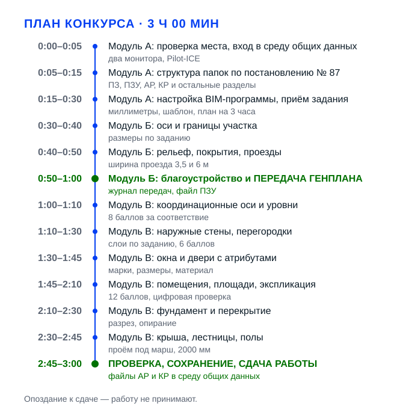
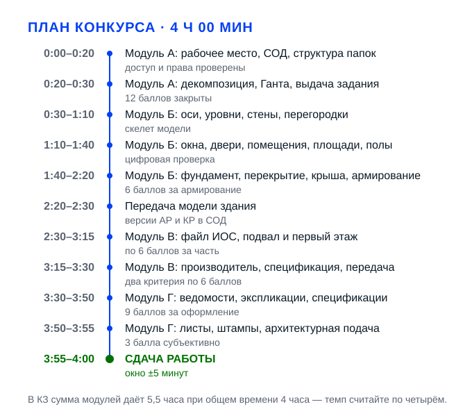

Технологии информационного моделирования "BIM" (Р)
Задания ниже — официальные файлы «Абилимпикс» (источник: abilympics-russia.ru), разложенные по категориям. Решения написаны по тексту задания, регламенту и критериям оценки; в них указано, что именно проверяет эксперт.
Школьник
14–16 лет, базовый уровень заданияВ официальном файле категории не разделены отдельными разделами — приводим задание целиком; различия по категориям смотрите в таблице модулей.
Пошаговое решение
Конкурсное задание для школьников — три часа, три модуля и сто баллов: полчаса на организацию проекта и папок, полчаса на генеральный план участка и два часа на модель здания по выданным чертежам и пояснительной записке. Работа идёт в Revit или Renga, файлы передаются через среду общих данных Pilot-ICE, а папки раскладываются по разделам проектной документации согласно постановлению Правительства РФ № 87. Баллы распределены неровно: двадцать за организацию, двадцать за генплан и шестьдесят за здание, причём внутри здания двенадцать баллов даёт одна цифровая проверка названий и площадей помещений, восемь — координационные оси и уровни. Тридцать процентов задания могут изменить на площадке: названия и площади помещений, стены и перегородки, напольные покрытия, проезды и благоустройство, поэтому всё, что можно сделать параметрами, делается параметрами.

Задача 1. Подготовить рабочее место, среду общих данных и структуру папокМодуль А · 20 баллов · 30 минут
Первые полчаса конкурса уходят не на моделирование, а на то, чтобы всё вокруг модели работало: два экрана, программа, доступ к среде общих данных и папки, разложенные по разделам проектной документации. Это самый дешёвый блок баллов на всём конкурсе — 20 из 100 — и единственный, который можно потерять целиком из-за забытого пароля или папки, созданной «на рабочем столе». Здесь же вы принимаете задание и раскладываете три часа на три модуля, чтобы дальше не считать время в уме.
Действие 1.1. Развернуть и проверить рабочее место
Шаг 1.1.1
Садимся за стол 1400×600 и разворачиваем оба монитора: основной — прямо перед собой на расстоянии вытянутой руки, примерно 60–70 см от глаз, второй — справа под углом 15–20 градусов к первому. Верхний край обоих экранов ставим на 5–7 см ниже линии взгляда. В Windows открываем «Параметры → Система → Дисплей», выбираем режим «Расширить эти экраны», на каждом мониторе ставим нативное разрешение и масштаб 100 %, затем перетаскиваем прямоугольники экранов так, чтобы правый стоял справа. Клавиатуру и мышь кладём на второй стол 850×670, чтобы локоть лежал на столе, а не висел в воздухе.
Критерий «Рабочее место участника подготовлено» стоит 5 баллов из 20 в модуле А, и проверяется он глазами за первые минуты. Два экрана нужны не для красоты: на одном держим план или разрез, на другом — 3D-вид и свойства, и переключение между окнами съедает по три-четыре секунды на каждое действие. За два часа моделирования это складывается в десять-пятнадцать минут, которых потом не хватит на помещения.
Оба экрана показывают разные части рабочего стола, курсор свободно переходит через правый край основного, текст ленты читается без наклона головы, на втором мониторе нет растянутой картинки с чёрными полями. Проверьте настройку сразу: перепутанные места экранов потом дают «прыгающий» курсор и лишние движения мышью.
Самая частая ошибка — оставить режим «Дублировать»: картинка одинаковая, второй монитор фактически не работает, а участник уверен, что всё настроил. Вторая — поставить оба экрана на максимальную яркость в тёмной аудитории: глаза устают к середине модуля В, и ошибки в размерах идут пачками.
Эксперт обходит площадку в первые пять минут и отмечает именно состояние места: включены ли оба монитора, нет ли на столе бумаг и посторонних предметов, удобно ли участнику.
Шаг 1.1.2
Проверяем железо и канал. По заданию на участника выделен системный блок i5-8400, 8 ГБ оперативной памяти, RTX 2060, SSD 256 ГБ и проводной интернет не менее 10 Мбит/с. Открываем диспетчер задач и смотрим загрузку памяти и диска, проверяем, что на системном диске свободно хотя бы 40 ГБ: при заполненном диске программа тормозит на перестроении видов. Скорость канала проверяем тестом в браузере и закрываем всё лишнее: мессенджеры, вкладки, обновления. Восьми гигабайт памяти для BIM-программы впритык, поэтому браузер оставляем максимум с одной вкладкой.
Критерий «Среда общих данных и основная BIM-программа подготовлены к работе» — ещё 5 баллов, и он оценивается по факту запущенного и работоспособного ПО, а не по вашим словам. Кроме того, нехватка памяти и медленный канал бьют по времени: сохранение тяжёлой модели на слабой машине занимает минуты, а передача файла в среду общих данных может просто не дойти до дедлайна.
Диспетчер задач показывает загрузку памяти ниже 70 % при открытой BIM-программе, тест скорости даёт не меньше 10 Мбит/с, на диске С свободно более 40 ГБ. Если память забита под 90 %, закройте всё, кроме программы и одного окна проводника.
Ошибка новичка — держать открытыми двадцать вкладок с обучающими видео: память уходит, программа начинает подтормаживать на каждом повороте 3D-вида, и участник списывает это на «слабый компьютер». Вторая — не проверить канал и узнать о проблеме в момент сдачи, когда файл не загружается в среду общих данных.
Эксперт смотрит на запущенную программу и на то, открыт ли клиент среды общих данных; молчащий или зависший клиент фиксируется как неготовность места.
Шаг 1.1.3
Наводим порядок на столе и убираем всё, что не относится к работе: сумку и куртку — в гардероб, телефон — в карман или в сумку, лишние бумаги — в сторону. Рядом с клавиатурой оставляем только то, что понадобится: лист А3 для быстрых эскизов и пометок по заданию, ручку, чистый блокнот для цифр, которые нельзя забыть. Ставим на стол корзину для мусора так, чтобы обрезки и черновые листы не летели на пол. Отдельно проверяем, что рядом с системным блоком нет открытой бутылки воды: один пролитый стакан выводит из строя машину, и работа заканчивается, не начавшись.
Чистое место — часть тех же 5 баллов за подготовку рабочего места, но важнее другое: на столе должна остаться только работа. Каждый лишний предмет — это повод отвлечься, а в модуле В у вас будет два часа на здание, и любая пауза на «куда я положил задание» стоит дороже, чем кажется. Личные флешки и дополнительное оборудование в этой компетенции не предусмотрены, поэтому принесённое с собой остаётся в сумке.
На столе два монитора, клавиатура, мышь, лист А3, ручка и блокнот — и больше ничего. Проверьте, что задание лежит на виду, а не в глубине папок: в модуле В вы будете сверяться с ним десятки раз, и каждый поиск стоит времени.
Разложить вокруг себя распечатки, телефон, наушники и еду: место выглядит занятым, а эксперт отмечает неподготовленность. Отдельная ошибка — держать открытую воду прямо над системным блоком: риск залить машину и остаться без работы вовсе.
Эксперт оценивает место целиком, одним взглядом: свободная рабочая зона, отсутствие посторонних предметов, задание под рукой, вода не над системным блоком. Это последняя проверка модуля А, которую он делает до старта моделирования.
Действие 1.2. Настроить доступ к среде общих данных
Шаг 1.2.1
Запускаем клиент Pilot-ICE Enterprise — это среда общих данных, через которую на чемпионате передаются файлы. Вводим логин и пароль, выданные организаторами, и сразу проверяем, под каким именем и с какой ролью мы вошли: в правом верхнем углу или в свойствах учётной записи должно стоять ваше имя и роль участника. Если система просит сменить пароль при первом входе — меняем и записываем новый на листе А3, а не надеемся на память. Пароль не сохраняем в браузере и не записываем в файл на рабочем столе: среду общих данных проверяют и после конкурса.
Критерий «Среда общих данных и основная BIM-программа подготовлены к работе» — 5 баллов, и вход в систему фиксируется в её журнале. Пока вы не авторизованы, вы физически не можете ни принять задание, ни сдать модель, а передача работы — обязательный пункт задания: без неё эксперт оценивает только то, что успел увидеть на экране.
Ваше имя в системе совпадает с фамилией в списке участников, роль даёт право записи, в дереве проектов открыт нужный проект и в нём видна папка вашего раздела. Журнал событий в клиенте показывает ваш вход с текущим временем.
Войти под чужой учётной записью, которую оставили на машине до вас: файлы уходят от другого имени, и ваша работа формально не сдана. Вторая ошибка — отложить вход «на потом» и обнаружить, что пароль не подходит, за десять минут до сдачи.
Эксперт проверяет авторизацию в среде общих данных при обходе площадки, а позже — по журналу передач, где видно, кто и когда загружал файлы. Вход под чужим именем или отсутствие входа фиксируется сразу, и объяснить это на апелляции не получится.
Шаг 1.2.2
Разбираемся с правами доступа. В дереве проекта находим папку своего раздела и проверяем, что она открыта на запись: кнопка загрузки файла активна, а не серая, контекстное меню предлагает создать папку. Смотрим, какие ещё разделы видны: чужие папки обычно открыты только на чтение, и это нормально — трогать их нельзя. Если кнопка загрузки неактивна, сразу зовём технического эксперта и показываем проблему: самостоятельно менять права в чужом проекте не нужно и опасно.
Установка доступа к среде общих данных — отдельный пункт задания, и в критерии модуля А он идёт вместе с готовностью программы. Права проверяются до начала работы, потому что чинить их в момент сдачи бессмысленно: время уйдёт, а файл так и останется на локальном диске, то есть работа не будет передана на оценку.
В папке вашего раздела доступны создание папки и загрузка файла, в чужих разделах — только просмотр. Проверьте на практике: создайте в своей папке тестовую подпапку, убедитесь, что она появилась, и удалите её.
Пытаться загрузить файл в папку, где нет прав, и решить, что «система сломалась». Вторая ошибка — создать свою структуру папок в корне проекта, поверх выданной: это ломает общий регламент, и эксперт видит нарушение сразу.
Эксперт смотрит, работает ли участник внутри выданной структуры проекта, а не строит свою рядом с ней. Самовольно созданная ветка папок в корне проекта читается как нарушение регламента и снимает балл за подготовку структуры.
Шаг 1.2.3
Делаем тестовую передачу, чтобы убедиться, что канал действительно работает. Создаём на рабочем столе текстовый файл размером в пару килобайт, загружаем его в свою папку через клиент, ждём завершения и проверяем, что файл появился в списке с вашим именем и текущим временем. Затем скачиваем его обратно и открываем — так вы проверяете оба направления. После проверки тестовый файл удаляем, чтобы он не мешал в сдаче. Параллельно создаём локальную рабочую папку с путём без пробелов и кириллицы, например C:\BIM\2026-01\, и дальше сохраняем модель только туда.
Тестовая передача стоит тридцати секунд, а спасает целый модуль: если канал не работает, вы узнаете об этом сейчас, когда есть время позвать техэксперта, а не в конце конкурса. Локальная папка с латинским путём нужна потому, что BIM-программа и клиент среды общих данных спотыкаются на длинных путях с русскими буквами и пробелами — файл может не сохраниться или не прикрепиться.
Тестовый файл виден в дереве проекта, скачивается и открывается; локальная папка создана и доступна на запись. Убедитесь, что путь к ней короткий: C:\BIM\2026-01\, а не шесть вложенных папок с названиями на русском.
Пропустить тест и узнать о проблеме с каналом при сдаче — самая обидная потеря баллов, потому что модель-то готова. Вторая ошибка — сохранять файлы в «Загрузки» или на рабочий стол: там их не найти, а при перезагрузке машины часть пропадёт.
Эксперт по журналу видит, что участник освоил передачу заранее, и отдельно отмечает аккуратность путей и имён файлов. Короткий латинский путь и понятное имя читаются как профессиональная привычка, а не как случайность.
Действие 1.3. Собрать структуру папок проекта по постановлению № 87
Шаг 1.3.1
Создаём корневую папку проекта с шифром. Шифр берём из задания или составляем по шаблону: номер проекта, год, марка раздела — например 2026-01. Внутри корневой папки сразу заводим три служебные: 00_Задание, 01_Исходные данные, 99_Сдача. В 00_Задание кладём полученное конкурсное задание и пояснительную записку — это фиксация того, что задание выдано и принято, отдельный критерий на 5 баллов. В 01_Исходные данные — чертежи и таблицы, выданные организаторами, в 99_Сдача — итоговые экспорты.
Структура папок проекта — третий пункт модуля А, ещё 5 баллов, и он проверяется буквально: эксперт открывает дерево и смотрит, разложено ли всё по разделам. Шифр в имени корневой папки нужен, чтобы через месяц любой человек, открыв архив, понял, что это за объект и какого года работа, — это и есть смысл проектного документооборота.
Корневая папка называется по шифру, три служебные папки созданы, в 00_Задание лежит копия задания, в 01_Исходные данные — выданные чертежи. Проверьте, что в корне не осталось ни одного файла «в свободном полёте»: всё лежит по местам.
Создать папку «Новая папка (2)» и складывать туда всё подряд: структуры нет, и балл теряется независимо от качества модели. Вторая ошибка — держать задание только в распечатке, не положив копию в проект: формально получение задания не зафиксировано.
Эксперт открывает дерево папок и оценивает его как документ: имена, порядок, наличие задания и исходных данных. Копия задания в папке 00_Задание — прямое доказательство того, что задание выдано и принято, а это отдельные 5 баллов модуля А.
Шаг 1.3.2
Разворачиваем разделы проектной документации по постановлению Правительства РФ от 16.02.2008 № 87. Перечень разделов: пояснительная записка (ПЗ), схема планировочной организации земельного участка (ПЗУ), архитектурные решения (АР), конструктивные решения (КР), сведения об инженерном оборудовании (ИОС), проект организации строительства (ПОС), снос (ПОД), охрана окружающей среды (ООС), пожарная безопасность (ПБ), энергоэффективность (ЭЭ), смета (СМ), гражданская оборона (ГОЧС). Для школьной категории реально заполняются ПЗУ, АР и КР, остальные создаём пустыми с пометкой «не разрабатывается».
Требование подготовить структуру именно по 87-му постановлению прописано в задании дословно, и это тот пункт, где ошибаются чаще всего: участники делают три папки «генплан», «здание», «прочее» и теряют балл. Полная структура показывает, что вы понимаете состав проектной документации, а не просто складываете файлы.
В корне проекта двенадцать папок с марками ПЗ, ПЗУ, АР, КР, ИОС, ПОС, ПОД, ООС, ПБ, ЭЭ, СМ, ГОЧС, и ни одной «лишней» папки без марки. Сверьтесь со списком разделов и проверьте, что ни одна марка не пропущена и не написана дважды.
Перепутать ПЗУ и АР: генплан кладут в архитектурные решения, а потом эксперт не находит модель участка там, где ждёт. Вторая ошибка — назвать папки по-русски «Архитектура», «Конструкции»: марки разделов должны совпадать с шифром, иначе структура не читается как проектная.
Эксперт сверяет список папок с перечнем разделов 87-го постановления — это быстрая формальная проверка, по которой видно уровень подготовки участника.
Шаг 1.3.3
Внутри каждого раздела заводим одинаковый набор подпапок: 01_Модель, 02_Чертежи, 03_Экспорт, 04_Согласование. В 01_Модель лежит рабочий файл BIM-программы, в 02_Чертежи — виды и листы, в 03_Экспорт — PDF и IFC, в 04_Согласование — замечания и принятые версии. Дальше задаём правило имени файла: марка раздела, тип документа, шифр проекта, версия — например АР_Модель_2026-01_v01. Правило записываем в текстовый файл 00_Регламент.txt в корне и дальше пользуемся только им.
Единый набор подпапок внутри разделов — это то, что отличает проект от папки с файлами. Правило имени нужно вам же: когда через час появится версия v02, вы не будете гадать, какой файл последний. Эксперт смотрит и на порядок, и на версионность: файл без версии в сдаче читается как черновик.
В каждом разделе одинаковые четыре подпапки, регламент лежит в корне, имена файлов заканчиваются версией v01. Проверьте: откройте два раздела подряд — структура внутри должна совпадать один в один, вплоть до порядка папок.
Сделать подпапки только в АР, а в КР оставить файлы в корне раздела: структура неоднородна, и часть работы выглядит незавершённой. Вторая ошибка — плодить версии v1, v2, «финал», «финал_2»: через час вы сами не поймёте, что сдавать.
Эксперт проверяет однородность структуры и наличие версий — по ним видно, вёл ли участник проект или складывал файлы как попало. Файл без версии в сдаче читается как черновик, даже если модель внутри готова полностью.
Действие 1.4. Настроить BIM-программу и принять задание
Шаг 1.4.1
Запускаем BIM-программу — по заданию на площадке стоят Revit и Renga, работаем в той, что открыта на вашей машине. Проверяем, что лицензия активна и программа открывается без окна с предупреждением о пробном режиме. В настройках проекта выставляем единицы измерения в миллиметрах для длин и в квадратных метрах для площадей, проверяем, что система координат не смещена: базовая точка проекта стоит в нуле, точка съёмки — в начале координат площадки. Создаём новый файл из шаблона, а не с чистого листа: в шаблоне уже есть уровни, типы стен и оформление.
Критерий «Среда общих данных и основная BIM-программа подготовлены к работе» — 5 баллов, и он про то, что программа настроена, а не просто открыта. Миллиметры и правильная базовая точка нужны с первой минуты: если модель начата в метрах или со сдвигом на десятки километров, все последующие размеры и координаты поедут, а исправлять это в готовой модели — часы работы.
Программа открыта, лицензия подтверждена, в строке состояния или свойствах проекта стоят миллиметры. Создайте пробную стену длиной 6000 и измерьте её инструментом «Размер»: должно получиться ровно 6000, а не 6.
Начать модель в метрах, потому что так «привычнее»: стена толщиной 0,2 вместо 200 выглядит нормально на экране, но все ведомости и площади считаются неверно, и переделывать приходится с нуля. Вторая ошибка — работать в файле, оставшемся от предыдущего участника: чужие уровни и типы дают хаос в спецификациях.
Эксперт проверяет единицы измерения и то, что модель начата в чистом шаблоне, а не в файле с чужой историей. Метры вместо миллиметров он видит по размеру стены на плане и сразу снимает балл за готовность программы к работе.
Шаг 1.4.2
Настраиваем шаблон под задание. Открываем диспетчер проекта и проверяем, что в нём есть нужные категории: стены, перекрытия, крыши, окна, двери, лестницы, помещения, фундаменты, полы. В диспетчере объектных стилей (в Renga — стили) проверяем толщины линий и цвета: несущие стены толстой линией, перегородки тонкой, оси штрихпунктирной. Создаём два рабочих вида: план первого этажа в масштабе 1:100 и 3D-вид с тенями, чтобы контролировать объём. В свойствах вида заранее включаем отображение помещений и марок.
Настройка видов и стилей — это не украшательство, а скорость. Когда план выглядит читаемо, вы видите ошибку в геометрии сразу, а не после экспорта в PDF. Кроме того, субъективный критерий «Соответствие выбранного архитектурного решения стандартам отрасли» на 3 балла эксперт ставит глазами, и оформление вида влияет на впечатление напрямую.
На плане первого этажа видны оси, стены разной толщины линий, помещения с номерами; 3D-вид открывается без задержки и показывает модель целиком. Проверьте масштаб аннотаций: размерные надписи должны читаться при 1:100.
Оставить вид «по умолчанию» с тонкими одинаковыми линиями: план похож на паутину, ошибки не видны, а эксперт тратит время на разбор. Вторая ошибка — работать только в 3D-виде и не заметить, что часть стен стоит не на своём уровне.
Эксперт оценивает читаемость плана и наличие рабочих видов: по ним он и будет проверять модель. Вид с тонкими одинаковыми линиями и без помещений означает, что участник работал вслепую, и это видно ещё до проверки геометрии.
Шаг 1.4.3
Читаем конкурсное задание целиком и раскладываем три часа по модулям. По заданию на школьников отводится 3 часа: модуль А — 0,5 часа, генплан — 0,5 часа, модель здания — 2 часа. Записываем контрольные точки: к 0:30 закрыт модуль А, к 1:00 сдан генплан, к 2:45 модель готова, к 3:00 передана. Отдельным списком выписываем то, что по условию может измениться на 30 %: названия и площади помещений, стены и перегородки, напольные покрытия, благоустройство и проезды. Эти данные вбиваем последними, когда геометрия стоит.
Критерий «Выдано задание на разработку проекта» — 5 баллов, и он закрывается именно здесь: вы приняли задание, разобрали его и зафиксировали план. Список 30-процентных изменений — практическая вещь: если эксперт объявит новые площади помещений за час до сдачи, вы не будете перестраивать стены, а просто поправите имена и площади, потому что геометрия от них не зависит.
На листе А3 есть три временных окна и три контрольные точки, список изменяемых параметров выписан отдельно. Сверьте план с часами на экране: если сейчас 0:12, а модуль А не закрыт, вы уже отстаёте и дальше идёте быстрее.
Начать моделировать, не дочитав задание: через час выясняется, что нужен ещё и раздел КР, а времени на него нет. Вторая ошибка — не выписать список изменяемых параметров и потом в панике перестраивать стены, когда объявят новые толщины.
Эксперт проверяет, что участник работает по заданию: сверяет состав модели с требованиями и смотрит, укладывается ли он в контрольные точки. План на листе А3 с тремя временными окнами — самый быстрый способ показать, что задание разобрано.
Задача 2. Смоделировать генеральный план участка застройкиМодуль Б · 20 баллов · 30 минут
Генеральный план — самый быстрый модуль конкурса: полчаса, а внутри семь критериев на 20 баллов, из которых шесть объективных. За это время нужно поставить участок в координаты, сделать рельеф и покрытия, проложить проезды, расставить благоустройство, заполнить атрибуты и отдать модель на проверку. Модуль короткий, поэтому здесь важнее не красота, а полнота: пустой газон без проездов и скамеек стоит столько же, сколько аккуратная, но неполная схема, а именно полноту эксперт и проверяет по списку.
Действие 2.1. Поставить участок в координаты и разбить оси
Шаг 2.1.1
Создаём новый файл раздела ПЗУ из того же шаблона, что и основной проект, и первым делом ставим разбивочные оси. Продольные оси нумеруем цифрами слева направо — 1, 2, 3, поперечные обозначаем буквами снизу вверх — А, Б, В, как требует правило оформления строительных чертежей. Шаг осей берём из задания и вбиваем его в свойства оси, а не рисуем «на глаз»: расстояние между осями 1 и 2 должно совпадать с заданием до миллиметра. После расстановки проставляем размерную цепочку по крайним осям и проверяем сумму.
Критерий «Размеры проектируемого участка соответствуют заданию» стоит 3 балла, и оси — его основа: если оси сдвинуты, размеры участка и здания не сойдутся, и дальше поедет вся модель. Кроме того, координационные оси входят в критерий на 8 баллов в модуле В, и модель здания вставляется в генплан именно по ним.
Размерная цепочка по осям совпадает с заданием, кружки осей подписаны, линия оси выходит за габарит участка на 15–20 мм в масштабе листа. Проверьте инструментом «Размер» расстояние между двумя соседними осями — оно должно быть ровным по всей длине.
Нарисовать оси линиями, а не инструментом «Ось»: они не попадут в модель как координационная основа, и привязка стен «по осям» не сработает. Вторая ошибка — перепутать направление нумерации и получить зеркальную схему.
Эксперт сверяет схему осей с чертежом задания и измеряет два-три пролёта — это одна из самых быстрых и показательных проверок. Затем он смотрит, совпадает ли схема осей в файле ПЗУ и в файле АР: расхождение означает, что здание и участок живут в разных координатах.
Шаг 2.1.2
Очерчиваем границы участка. Инструментом «Участок» (в Revit — топоповерхность с контуром площадки, в Renga — участок) создаём замкнутый контур по размерам из задания, проверяя каждую сторону размером. Контур должен быть действительно замкнутым: две линии, сходящиеся «почти», дают разрыв, из-за которого площадь считается неверно. Сразу задаём имя участка и его номер в свойствах, а в примечании — адрес или кадастровый квартал, если он есть в задании.
Три балла дают за соответствие размеров, ещё три — за маркировку и атрибутивные характеристики участка. Замкнутость контура нужна технически: площадь, которую считает программа, — это и есть цифра, которую эксперт сверяет с заданием. Разомкнутый контур даёт площадь «минус» или ноль, и балл теряется на пустом месте.
В свойствах участка заполнены имя, номер, площадь; площадь совпадает с расчётом по размерам задания. Проверьте замыкание: обойдите контур и убедитесь, что в каждой вершине сходятся ровно две линии, без хвостов и наложений.
Чертить границу линиями детализации вместо инструмента участка: контур есть, а площади и атрибутов нет. Вторая ошибка — оставить разрыв в углу на 10–20 мм, который на экране не видно, а площадь при этом уходит на десятки метров.
Эксперт проверяет границы и площадь, а также заполненные атрибуты участка — по ним видно, понимает ли участник, что модель состоит из объектов с данными.
Шаг 2.1.3
Привязываем модель здания к генплану в общей системе координат. Если здание уже начато отдельным файлом, вставляем его в файл ПЗУ как связь (в Revit — «Связать Revit», в Renga — ссылочная модель) и ставим по координатам «По общим координатам» или вручную по осям 1 и А. Если здание ещё не начато, ставим на плане габаритный контур будущего здания по осям и работаем дальше от него. Угол поворота здания относительно осей участка берём из задания, а не выставляем «ровно по экрану».
Критерий «Соответствие модели стандартам отрасли» на 2 балла и критерий осей на 8 баллов проверяются именно здесь: генплан и здание должны стоять в одной системе координат. Если здание вставлено «как получилось», на сводном виде оно окажется в другом месте участка, и все размеры привязки разойдутся.
Контур здания на плане совпадает с осями, расстояние от стен до границы участка соответствует заданию, отметка низа и верха контура не ниже уровня земли. Проверьте координаты базовой точки: в свойствах связи должны стоять нули, если проект начат от нуля.
Вставить связь с автопозиционированием «по центру»: здание встаёт посреди участка случайным образом. Вторая ошибка — двигать связанную модель мышью вместо указания координат: точность теряется на сантиметрах, а на генплане это видно.
Эксперт проверяет посадку здания на участок и совпадение координат между разделами. Это одна из немногих проверок, где ошибка видна сразу: связанная модель оказывается в стороне от осей, и на сводном виде это бросается в глаза.
Действие 2.2. Сделать рельеф и покрытия участка
Шаг 2.2.1
Строим рельеф участка. По заданию берём высотные отметки и создаём поверхность: в Revit — топоповерхность по точкам с отметками, в Renga — поверхность участка с заданными высотами. Ставим минимум четыре точки по углам участка и две-три внутри, чтобы поверхность не была плоской «тарелкой». Отметку чистого пола первого этажа привязываем к рельефу: по заданию она обычно выше земли на 150–600 мм, и этот перепад должен быть виден на разрезе.
Рельеф нужен для трёх вещей: чтобы здание стояло на земле, чтобы отмостка и проезды не висели в воздухе и чтобы на разрезе был виден перепад. Отдельного балла за рельеф в школьной таблице нет, но без него не выполняется критерий соответствия генплана заданию на 3 балла, а на виде сбоку модель выглядит недоделанной.
Поверхность не плоская: при включённом отображении отметок видны разные высоты, здание стоит на грунте без зазора и без провала. Проверьте разрез по участку — линия земли должна проходить под подошвой здания, а не пересекать его.
Оставить поверхность на нулевой отметке: здание висит или утопает, а отмостка уходит под землю. Вторая ошибка — ставить точки с отметками в метрах, когда проект настроен на миллиметры: получается перепад в тысячу раз больше нужного.
Эксперт смотрит 3D-вид и разрез: посадка здания на рельеф — первое, что бросается в глаза. Здание, висящее над землёй или утопленное в неё, читается как непонимание того, что модель строится в реальных координатах.
Шаг 2.2.2
Раскладываем покрытия по площади участка. Разделяем четыре зоны: проезды и площадки с твёрдым покрытием, тротуары и пешеходные связи, газоны и озеленение, отмостка вокруг здания. Каждую зону делаем отдельным элементом со своим материалом, а не заливаем весь участок одним цветом. Отмостку выполняем шириной 800–1000 мм с уклоном от стены, газон заводим за тротуар, а не под ним, чтобы элементы не накладывались друг на друга.
Критерий «Присутствуют элементы благоустройства» — 3 балла, и покрытия — его основа. Разные материалы нужны ещё и потому, что в задании на 30 % могут изменить уровень благоустройства: если каждая зона сделана отдельным элементом, вы поменяете один тип покрытия за минуту, а не будете перечерчивать весь участок.
На плане читаются четыре разных покрытия, границы совпадают без зазоров и наложений, отмостка идёт по периметру здания непрерывно. Проверьте наложение: выделите газон и посмотрите, не заходит ли он под тротуар.
Залить всё одним материалом «асфальт»: участок выглядит как парковка, элементы благоустройства формально есть, но критерий не закрыт. Вторая ошибка — накладывать полигоны друг на друга: в 3D появляются мерцающие плоскости, и на проверке это фиксируется как ошибка геометрии.
Эксперт проверяет состав покрытий и то, что зоны не наезжают друг на друга — по плану это видно сразу. Участок, залитый одним цветом, формально содержит покрытие, но критерий благоустройства не закрывает: нет ни газона, ни тротуара.
Шаг 2.2.3
Заполняем атрибуты покрытий. У каждого элемента в свойствах указываем тип покрытия (асфальтобетон, тротуарная плитка, газон, бетон), площадь, толщину конструкции и материал основания. Площадь не вбиваем руками — ставим вычисляемое значение из геометрии, чтобы при правке контура она пересчитывалась. Если в шаблоне есть параметр «Назначение», заполняем и его: проезд, тротуар, озеленение, отмостка.
Критерий «Участок генерального плана имеет маркировку и атрибутивные характеристики» — 3 балла, и он проверяется цифровой проверкой: эксперт открывает свойства элемента и смотрит, есть ли там данные, а не только геометрия. Это же требование напрямую связано с 30-процентным изменением характеристики проездов и уровня благоустройства.
У каждого покрытия заполнены тип, материал и площадь, площадь пересчитывается при изменении контура. Проверьте это на практике: растяните газон на метр и посмотрите, изменилась ли цифра в свойствах, а не осталась прежней.
Оставить поля пустыми или написать «газон» в примечании вида, а не в параметрах элемента: цифровая проверка ничего не находит, и балл не ставится. Вторая ошибка — вписать площадь текстом: при любой правке цифра станет неверной.
Эксперт открывает свойства двух-трёх элементов подряд и смотрит заполнение полей. Пустые параметры читаются как невыполненный пункт задания, даже если геометрия участка сделана идеально и на плане всё подписано.
Действие 2.3. Проложить проезды и проходы
Шаг 2.3.1
Проектируем проезды от границы участка к зданию и вокруг него. Ширину берём по нормам: однополосный проезд — 3,5 м, двухполосный — 6 м, пожарный проезд вдоль продольной стороны здания — 6 м с отступом от стены 5–8 м. Радиусы закруглений на поворотах — не меньше 6 м, иначе автомобиль не проходит, а на плане поворот выглядит обрубленным. Проезд рисуем инструментом «Проезд» или полигоном с типом покрытия «асфальтобетон», бордюр ставим по обеим сторонам.
Критерий «На генеральном плане имеются проезды» — 3 балла, и это тот пункт, который проверяют первым: без проездов участок не связан с улицей и генплан нечитаем. Ширины из норм нужны потому, что эксперт меряет их инструментом, а не на глаз: проезд 2,8 м вместо 3,5 м — уже нарушение.
Ширина проезда измеряется как 3500 мм для однополосного и 6000 мм для двухполосного, радиус поворота не меньше 6000 мм, проезд доходит от границы участка до входа в здание. Проверьте размером в двух-трёх местах, а не только на прямом участке.
Нарисовать проезд линиями без ширины: на плане он есть, а измерить нечего. Вторая ошибка — сделать проезд, упирающийся в стену без разворотной площадки: формально проезд есть, но по нему нельзя проехать, и эксперт это отмечает.
Эксперт измеряет ширину проезда и смотрит, связан ли он с улицей и со входом в здание. Проезд, упирающийся в стену без разворотной площадки, формально существует, но по нему нельзя проехать, и это отмечается в протоколе.
Шаг 2.3.2
Добавляем пешеходные связи и разметку. От проезда к главному входу ведём тротуар шириной 1,5–2,25 м, от него — дорожки к второстепенным входам и площадкам. Покрытие тротуара делаем отдельным типом — плитка, а не тот же асфальт, иначе на плане не видно, где проезжая часть, а где пешеходная. По осевой линии проезда, если он двухполосный, ставим разметку, а на въезде — знак или разметку «Въезд». Бордюр делаем непрерывным по кромке проезда, с разрывами только в местах примыкания тротуаров.
Пешеходные связи закрывают критерий благоустройства и делают план читаемым: эксперт видит, как человек попадает на участок и в здание. Разметка и бордюр — это признаки проработанности, по которым ставят субъективные 2 балла за соответствие стандартам отрасли.
Тротуар идёт от проезда до входа без разрывов, ширина не меньше 1500 мм, бордюр непрерывен по кромке. Проверьте, что дорожки не перекрывают газон целиком и не проходят через отмостку, иначе покрытия наложатся друг на друга.
Проложить дорожку напрямую через газон, разорвав его на куски: участок выглядит раздробленным, а покрытия накладываются. Вторая ошибка — сделать тротуар той же ширины, что проезд: пешеходная и транспортная зоны на плане не различаются.
Эксперт смотрит связность: от въезда до входа должен читаться непрерывный маршрут. Разрыв в тротуаре или дорожка, обрывающаяся в газоне, — типичная ошибка, которую он отмечает при проверке генплана.
Шаг 2.3.3
Заполняем характеристики проездов — это тот пункт, который по условию задания может измениться на 30 %. У каждого проезда в свойствах указываем тип покрытия, ширину, назначение (пожарный, хозяйственный, основной) и протяжённость. Если задание объявляет новую характеристику — например, покрытие из тротуарной плитки вместо асфальта или ширину 4,5 м, — меняем её в типе элемента, а не подписью на плане, чтобы правка разошлась по всем участкам сразу.
Изменяемые характеристики проездов прямо названы в разделе о 30-процентном изменении задания, и это значит, что проверяют именно их. Работа через тип элемента, а не через текстовую подпись, экономит время: одно изменение — и обновились все проезды, включая ведомость.
У проездов заполнены ширина, тип покрытия и назначение; при смене типа покрытия меняются все проезды сразу. Проверьте выделением: у двух разных проездов в свойствах должен стоять один и тот же тип, а не два похожих.
Подписать ширину текстом на плане и оставить свойства пустыми: цифровая проверка ничего не находит. Вторая ошибка — нарисовать каждый проезд отдельным типом, а потом править их по одному, когда объявят изменение задания на 30 %.
Эксперт открывает свойства проезда и сверяет ширину и покрытие с заданием — здесь ошибка видна без обмера. Именно этот пункт чаще всего меняют в 30-процентной части, поэтому он проверяется первым.
Действие 2.4. Расставить благоустройство и маркировать участок
Шаг 2.4.1
Расставляем элементы благоустройства. Минимальный набор, который закрывает критерий: скамьи у входов и на площадках отдыха, урны рядом с каждой скамьей, озеленение — деревья и кустарники по периметру и между проездом и тротуаром, площадка отдыха или детская площадка, если она есть в задании, малые архитектурные формы. Деревья ставим не ближе 5 м от стен здания и не ближе 2 м от проезда, иначе крона перекрывает фасад, а корни рвут покрытие. Каждый элемент — отдельное семейство или блок, а не кружок, нарисованный на плане.
Критерий «Присутствуют элементы благоустройства» — 3 балла, и уровень благоустройства тоже входит в 30-процентное изменение. Расстояния до стен и проездов берутся из норм озеленения, и эксперт смотрит не только наличие, но и разумность расстановки: дерево вплотную к фасаду читается как формальная галочка.
На плане есть скамьи, урны, деревья, кустарники и хотя бы одна площадка; элементы стоят на газоне и площадках, а не на проезжей части. Проверьте расстояние от ствола до стены — не меньше 5 м, иначе крона перекроет фасад.
Нарисовать благоустройство кружками и квадратами в графике: на плане что-то есть, но в модели нет объектов, и в 3D участок пустой. Вторая ошибка — расставить скамьи посреди газона без дорожки к ним: пользоваться ими нельзя.
Эксперт смотрит 3D-вид участка: если благоустройство нарисовано только на плане, в объёме его не будет и балл не ставится. Наличие скамей и озеленения в модели он проверяет ещё и по списку элементов.
Шаг 2.4.2
Маркируем участок и его элементы. Участку присваиваем имя и номер, в свойствах заполняем площадь, назначение (территория общеобразовательной организации, жилая застройка — по заданию) и адрес. На план выносим маркировку: номер участка, его площадь, обозначение здания, номера проездов и площадок. Марки ставим аннотациями, связанными с элементами модели, а не текстом: тогда при изменении площади подпись обновится сама.
Второй пункт модуля Б — «Участок генерального плана имеет маркировку и атрибутивные характеристики», 3 балла. Маркировка — это язык, на котором генплан читают: без неё непонятно, где проезд, а где площадка. Связанные аннотации нужны, чтобы подписи не разошлись с геометрией после правок.
На плане читаются номер и площадь участка, обозначение здания, марки проездов; в свойствах заполнены назначение и адрес. Проверьте, что подпись площади совпадает с цифрой в свойствах участка, а не взята из старой версии.
Написать подписи текстом поверх плана: они не связаны с моделью и после правки показывают старые цифры. Вторая ошибка — не заполнить назначение участка, оставив только имя, и тогда маркировка остаётся неполной.
Эксперт читает план как документ: маркировка должна объяснять схему без пояснений автора. Он сверяет номер, площадь и назначение участка с заданием и смотрит, связаны ли подписи с элементами модели.
Шаг 2.4.3
Собираем генплан в законченную схему. Проверяем, что на плане есть все обязательные составляющие: граница участка, здание, проезды, тротуары, покрытия, благоустройство, озеленение, отмостка. Убираем всё лишнее — вспомогательные линии, эскизы, случайные элементы, оставшиеся от экспериментов. Добавляем на лист рамку, штамп с шифром проекта и название «Схема планировочной организации земельного участка», а также условные обозначения покрытий.
Критерий «Генеральный план участка застройки выполнен в соответствии с заданием» — 3 балла, и полнота состава здесь главное. Мусор на плане (лишние линии и брошенные элементы) снижает субъективную оценку за соответствие стандартам отрасли: эксперт видит, что участник не довёл работу до конца.
На плане читаются все семь составляющих, нет вспомогательных линий и мусора, штамп заполнен. Пройдите по плану взглядом сверху вниз: каждая линия должна что-то обозначать, а цвет — соответствовать условным обозначениям покрытий.
Оставить на плане рабочие эскизы и осевые линии, выходящие за штамп: лист выглядит как черновик. Вторая ошибка — забыть условные обозначения покрытий, и тогда цвета на плане ни о чём не говорят проверяющему.
Эксперт оценивает лист целиком: состав, оформление, читаемость. Это самая быстрая проверка модуля Б — по ней он за минуту понимает, работал участник над схемой или собрал её из случайных элементов.
Действие 2.5. Проверить и передать модель генерального плана
Шаг 2.5.1
Проверяем генплан по чек-листу из задания. По порядку: границы участка замкнуты и соответствуют размерам; площадь в свойствах совпадает с расчётом; проезды имеют ширину по нормам и связаны с улицей и входом; тротуары идут от проезда к входу; покрытия не накладываются; благоустройство стоит на своих местах; атрибуты заполнены у участка, покрытий и проездов. На каждый пункт — не больше минуты, итого пять-шесть минут, и это время окупается: шесть объективных критериев модуля Б проверяются именно по этому списку.
Шесть критериев модуля Б — объективные, то есть их ставят по факту наличия, а не по впечатлению: генплан по заданию (3), маркировка и атрибуты (3), размеры (3), проезды (3), благоустройство (3), передача на проверку (3). Пройти по списку до сдачи дешевле, чем потерять сразу несколько пунктов из-за одной незаполненной графы.
Все семь пунктов чек-листа отмечены галочкой, ни один не вызывает сомнений. Если сомневаетесь в ширине проезда — измерьте, а не вспоминайте: инструмент «Размер» даёт точную цифру за секунду и снимает вопрос.
Проверять «на глаз» и пропустить незамкнутый контур участка: площадь считается неверно, а критерий размеров и атрибутов рушится вместе с ним. Вторая ошибка — оставить пустые атрибуты у покрытий, потому что «и так видно, что газон».
Эксперт идёт по тем же пунктам, что и вы: наличие, размеры, атрибуты, передача. Пропущенный пункт — потерянные баллы без обсуждения, потому что все шесть критериев модуля Б объективные и проверяются по факту.
Шаг 2.5.2
Сохраняем и передаём модель. Файл называем по регламенту — ПЗУ_Модель_2026-01_v01 — и сохраняем в папку ПЗУ\01_Модель на локальном диске, затем загружаем в среду общих данных в ту же папку проекта. Дополнительно выгружаем PDF плана в 03_Экспорт: если эксперт не сможет открыть модель, план останется доказательством работы. После загрузки проверяем, что файл виден в дереве проекта, открывается и что в журнале передач стоит ваше имя и текущее время.
Критерий «Модель генерального плана передана на проверку» — 3 балла, и он ставится только по факту передачи. Время на этот модуль — полчаса, то есть передать нужно примерно к 1:00; если передача не состоялась, остальные 17 баллов модуля Б тоже повисают, потому что проверять нечего.
Файл лежит в папке ПЗУ в среде общих данных, открывается с вашей машины и с чужой учётной записи, в журнале есть запись о загрузке. PDF в папке экспорта соответствует последней версии модели, а не предыдущей.
Сохранить только локально и считать, что «передам потом»: через час вы уйдёте в модель здания и забудете. Вторая ошибка — загрузить файл с именем «Проект1_final.rvt»: эксперт не понимает, что это за раздел, и передача формально есть, а содержательно нет.
Эксперт проверяет журнал передач: время загрузки, имя файла, раздел. Всё это видно без открытия модели, и именно по журналу решается, была работа передана или осталась на локальном диске.
Задача 3. Построить архитектурную модель: оси, уровни, стены, проёмы, помещенияМодуль В · 31 балл · примерно 1 час
Ядро конкурса — модель здания по выданным чертежам. Здесь 31 балл из 60 в модуле В: два за файл раздела АР, восемь за координационные оси и уровни, шесть за стены и перегородки, три за атрибуты окон и дверей и двенадцать — самый крупный критерий всего конкурса — за цифровую проверку названий и площадей помещений. Порядок работы строго снизу вверх: сначала оси и уровни, потом стены, потом проёмы, и только в конце помещения, потому что помещение существует лишь внутри замкнутого контура.
Действие 3.1. Задать координационные оси и уровни
Шаг 3.1.1
Открываем файл раздела АР из папки 01_Модель и переносим на план координационные оси с чертежа задания. Продольные оси — цифры 1, 2, 3 по горизонтали, поперечные — буквы А, Б, В по вертикали, шаг берём из задания и вбиваем в свойства оси числом, а не рисуем на глаз. Начинаем с двух крайних осей, ставим между ними размер, убеждаемся, что он совпал с заданием, и только потом добавляем промежуточные копированием с заданным шагом. Оси должны выходить за габарит здания на 15–20 мм в масштабе листа, чтобы кружки не наезжали на стены.
Критерий «Соответствие координационных осей проекта и уровней заданию» — 8 баллов, второй по весу после помещений. Оси — это скелет: к ним привязываются стены, от них считаются размеры, по ним вставляется модель в генплан. Ошибка в шаге осей на 100 мм тянет за собой все размеры и все площади.
Количество осей совпадает с заданием, шаг проверен размерной цепочкой по крайним осям, кружки подписаны и не перекрывают друг друга. Сверьте сумму шагов с общим размером здания по заданию — она должна совпасть до миллиметра.
Рисовать оси обычными линиями: они не работают как координационная основа, и стены к ним не привязываются. Вторая ошибка — копировать оси с произвольным шагом «примерно»: на плане незаметно, а в размерной цепочке накапливается 200–300 мм.
Эксперт сверяет схему осей с чертежом задания и измеряет два-три пролёта. Это одна из самых быстрых и самых показательных проверок: ошибка в шаге осей на 100 мм видна сразу и тянет за собой размеры здания и площади помещений.
Шаг 3.1.2
Создаём уровни. Первый уровень — 0,000, уровень чистого пола первого этажа; от него отсчитываются все остальные отметки. Ниже ставим уровень земли с отметкой из задания (обычно минус 0,300…минус 0,600) и уровень подошвы фундамента, выше — уровень перекрытия и уровень верха стен или покрытия. Высоту этажа берём из задания (типовая — 3000 мм от пола до пола), вбиваем её в свойства уровня числом и переименовываем уровни по-человечески: «Ур. 1 этажа», «Ур. перекрытия», «Ур. земли». Отметки в свойствах должны быть абсолютными, а не «примерно на глаз по сетке».
Уровни дают вторую половину тех же 8 баллов: эксперт проверяет, что отметки совпадают с заданием. От уровня зависят высота стен, отметки окон и дверей, толщина перекрытия и объём здания. Если уровни стоят неверно, все проёмы «поедут» по высоте, а стены получат не ту высоту — и переделывать придётся почти всё.
Отметки уровней совпадают с заданием до миллиметра, названия понятные, между полом и перекрытием ровно высота этажа. Проверьте разрез: расстояние между линиями уровней должно совпадать с цифрой в свойствах.
Создать один уровень и «поднимать» стены вручную на нужную высоту: высоты получаются разными, и на разрезе видно, что этаж «пляшет». Вторая ошибка — оставить уровни с именами по умолчанию, где не разобраться, какой из них земля, а какой перекрытие.
Эксперт открывает список уровней и разрез: отметки и имена — первое, что видно. Уровни с именами по умолчанию и отметками «на глаз» означают, что высоты этажей придётся проверять заново, а это уже потерянные баллы.
Шаг 3.1.3
Связываем оси и уровни в рабочую сетку и сразу сохраняем файл с правильным именем в папку АР. Проверяем, что оси видны на всех рабочих видах, а уровни — на разрезах и фасадах; включаем на плане отображение уровней в привязках. Затем сохраняем файл как АР_Модель_2026-01_v01 в папку АР\01_Модель, а не в корень и не на рабочий стол: критерий «Соответствие созданного файла раздела АР проекта заданию» стоит 2 балла и проверяется по имени и расположению файла.
Два балла за файл раздела АР — самые простые в модуле В, и теряют их чаще всего из-за имени: файл «Проект1» без марки раздела эксперт не может опознать как АР. Привязка к осям и уровням должна работать на всех видах, иначе стены будут ставиться «по клеточкам» и разъедутся с осями.
Файл лежит в папке АР\01_Модель с именем по регламенту и версией v01, оси и уровни видны на плане, разрезе и фасаде. Проверьте привязку на практике: начните рисовать стену — курсор должен цепляться за оси.
Сохранить файл в корень проекта под именем «модель»: раздел не опознан, и 2 балла потеряны на пустом месте. Вторая ошибка — отключить отображение осей на виде и ставить стены на глаз, теряя привязку и размеры.
Эксперт открывает папку раздела АР и смотрит имя файла и версию — это формальная проверка на несколько секунд. Затем он включает план и проверяет, что оси и уровни отображаются, а стены стоят по ним.
Действие 3.2. Смоделировать наружные и внутренние стены
Шаг 3.2.1
Создаём тип наружной стены по заданию. Открываем структуру типа и собираем слои снизу вверх так, как написано в задании или пояснительной записке: например, газобетонный блок 300 мм, минераловатный утеплитель 100 мм, облицовочный кирпич 120 мм. Каждому слою задаём материал и толщину, сумма должна дать общую толщину стены из задания. Несущий слой помечаем как «Несущий» — от этого зависит, как стена ведёт себя при вставке проёмов и как считается теплотехника. Отдельно создаём тип внутренней несущей стены 380 мм и тип перегородки 120 мм.
Критерий «Соответствие характеристик стен и перегородок заданию» — 6 баллов, и проверяется он по структуре типа: эксперт открывает свойства стены и смотрит слои и толщины. Характеристики стен входят и в 30-процентное изменение задания, поэтому правильно собранный тип позволит поменять толщину утеплителя за минуту во всей модели.
В свойствах типа стоят три-четыре слоя с материалами и толщинами, общая толщина совпадает с заданием. Проверьте разрез стены: слои должны идти в правильном порядке — несущий слой внутрь, утеплитель наружу, облицовка снаружи.
Рисовать стену «по массе» одним слоем нужной толщины: геометрия верна, а характеристик нет, и 6 баллов не ставятся. Вторая ошибка — поставить утеплитель внутрь помещения: на разрезе видно, и это грубая ошибка по теплотехнике.
Эксперт открывает диалог структуры типа и сверяет слои с заданием — по этой проверке сразу видно, работал участник с материалами или только с геометрией.
Шаг 3.2.2
Вычерчиваем наружные стены по периметру здания. Инструментом «Стена» обводим контур по осям, включаем привязку «по осям» и следим за положением стены относительно оси: по заданию привязка обычно осевая для внутренних стен и «внутренняя грань по оси» для наружных. Толщину не задаём вручную — она приходит из типа. Углы соединяем так, чтобы стены сходились без зазоров и наложений: программа сама подрезает углы, если стены одного типа и соединены. Высоту стен задаём «до уровня» — низ на уровне пола, верх на уровне перекрытия.
Шесть баллов за стены набираются только тогда, когда стены стоят по осям и имеют правильную толщину. Привязка к оси — это то, по чему эксперт проверяет посадку: если стена сдвинута на 200 мм в сторону, габариты здания и площади помещений меняются, а вместе с ними рушится критерий на 12 баллов.
Контур замкнут, углы схлопнуты без щелей, толщина стен одинаковая по всему периметру, верх стен на уровне перекрытия. Проверьте габарит: размер по крайним осям плюс привязки должен дать размер здания из задания.
Чертить стены «от руки» без привязки: контур вроде замкнут, но стены гуляют относительно осей на 50–100 мм, и помещения считаются неверно. Вторая ошибка — оставить в углах зазоры: помещение не замыкается, и его площадь выходит нулевой.
Эксперт измеряет габарит здания и смотрит углы: по ним видно, работал участник инструментом стены или рисовал линиями. Стены, гуляющие относительно осей на 50–100 мм, меняют площади помещений и рушат критерий на 12 баллов.
Шаг 3.2.3
Ставим внутренние несущие стены и перегородки по плану задания. Несущие стены ведём по осям с типом 380 мм, перегородки — по внутренним размерам с типом 120 мм, привязывая их к осям или к граням несущих стен. Перегородки доводим до перекрытия, а не «до потолка на глаз»: верх привязываем к уровню перекрытия. Если по заданию перегородка не доходит до перекрытия (например, сантехническая на высоту 2,5 м), задаём высоту числом. Каждую стену сразу проверяем на плане: она должна соединять две другие стены без разрывов.
Разделение несущих и перегородок — это и есть «характеристики стен и перегородок» из критерия на 6 баллов. Оно нужно и для конструктивного раздела КР: фундамент считается под несущие стены, и если перегородка нарисована несущей, фундамент «поползёт» под всю планировку.
Несущие стены идут по осям с толщиной 380 мм, перегородки — 120 мм и не доходят до несущих с зазором. Проверьте на плане: каждая перегородка упирается в две стены, свободных концов и висящих в воздухе отрезков нет.
Сделать все стены одного типа «Стена 200»: планировка читается, но характеристики не те, и 6 баллов не ставятся. Вторая ошибка — оставить перегородку висящей в воздухе с одним свободным концом: помещение вокруг неё не замкнётся.
Эксперт смотрит план и свойства нескольких стен: типы должны различаться там, где различается конструкция. Перегородка, нарисованная несущим типом, сразу меняет и фундамент, и ведомость, поэтому он сверяет и то и другое.
Шаг 3.2.4
Проверяем стены по ведомости. Строим спецификацию или ведомость стен и сверяем: количество типов, толщины, общая длина, площади. Отдельно смотрим 3D-вид с торца — там сразу видно стены, которые «висят» выше или ниже остальных, и стены, случайно поставленные не на том уровне. Убираем стены нулевой длины и дубли: они не видны на плане, но портят ведомость и создают предупреждения в модели.
Ведомость стен — это инструмент самопроверки: эксперт тоже смотрит её и по ней видит состав модели. Дубли и стены нулевой длины дают ошибки в спецификациях и в расчёте площадей, а на субъективные 3 балла за соответствие стандартам отрасли такие артефакты влияют плохо.
В ведомости нет стен нулевой длины, толщины совпадают с заданием, количество типов соответствует планировке. Проверьте 3D-вид сбоку: верх всех стен должен идти одной линией по уровню перекрытия, без ступенек.
Оставить десяток «пробных» стен, нарисованных в начале работы: они попадают в ведомость, и эксперт видит неаккуратность. Вторая ошибка — не проверить ведомость и не заметить, что половина перегородок сделана наружным типом.
Эксперт открывает ведомость и 3D-вид: чистота модели читается за минуту. Дубли, стены нулевой длины и пробные элементы, оставшиеся от экспериментов, он видит в ведомости сразу и отмечает как неаккуратность.
Действие 3.3. Установить окна и двери с атрибутами
Шаг 3.3.1
Подбираем семейства окон и дверей под задание. В библиотеке проекта или в комплекте шаблона находим нужные типы: окна одностворчатые, двустворчатые и трёхстворчатые шириной по заданию (например, 900, 1200, 1500 мм), двери входные и внутренние одно- и двустворчатые. Создаём типоразмеры с шириной и высотой из задания, а не используем первые попавшиеся: окно 1200 вместо 1500 меняет подоконную развёртку и площадь остекления. Если нужного семейства нет, берём ближайшее по конструкции и правим параметры ширины и высоты.
Критерий «Наличие атрибутивных характеристик у окон и дверей» — 3 балла, но чтобы его поставить, нужны корректные типы: эксперт проверяет и размеры, и данные. Типоразмеры из задания нужны ещё и для ведомости заполнения проёмов, которая идёт в раздел АР.
В проекте есть нужные типоразмеры с шириной и высотой из задания, у каждого типа заполнены марка и материал. Проверьте список типов: он не должен состоять из «Окно 1», «Окно 2», «Окно 3» без размеров и марок.
Ставить окна одного размера по всему фасаду: быстро, но не соответствует заданию. Вторая ошибка — использовать семейство без параметров ширины и высоты, тогда типоразмер не создать, и ведомость пустая.
Эксперт сверяет типы окон и дверей с заданием — расхождение по ширине видно сразу, особенно если по всему фасаду стоит один размер. Затем он проверяет, что у типов заполнены марка и материал, а не только геометрия.
Шаг 3.3.2
Вставляем окна и двери в стены. Инструментом «Окно» ставим проёмы по плану задания, привязывая центр или грань к оси, а отметку подоконника задаём числом из задания — обычно 900 мм для жилых и 700–800 мм для служебных помещений. Двери ставим по планировке, с привязкой к стене и правильным открыванием: входные — наружу, внутренние — в сторону помещения, как показано на чертеже. После вставки проверяем разрез: окно не должно «резать» перекрытие, а дверь — стоять ниже уровня пола.
Проёмы — это то, через что читается фасад и планировка. Неверная отметка подоконника ломает развёртку фасада, а дверь, открывающаяся не в ту сторону, — грубая ошибка планировки, которую эксперт отмечает при проверке соответствия архитектурного решения стандартам отрасли (3 балла).
Все проёмы стоят по плану задания, отметки подоконников и верха дверей совпадают с заданием, открывание соответствует чертежу. Проверьте разрез по окну: подоконник на 900 мм, верх проёма ниже перекрытия.
Вставить окно в перегородку или в стену без проёма, «поверх» геометрии: в разрезе видно, что окно висит в воздухе. Вторая ошибка — поставить двери без привязки к уровню пола, и они оказываются на 100 мм выше или ниже.
Эксперт смотрит план и разрез: проёмы должны быть прорезаны в стене, а не наложены на неё. Окно, висящее в воздухе или врезанное в перегородку, и дверь ниже уровня пола — ошибки, которые он фиксирует без обмера.
Шаг 3.3.3
Заполняем атрибутивные характеристики проёмов. У каждого окна указываем марку (например, ОК-1), размер, материал профиля, тип заполнения и производителя; у двери — марку, размер, материал полотна, тип (входная, межкомнатная, техническая), огнестойкость, если она требуется по заданию. Данные вносим в параметры типа и экземпляра, а не подписями на плане. Если по заданию у двери должен быть доводчик или предел огнестойкости EI 30, это отдельный параметр, и его надо заполнить.
Три балла за атрибуты окон и дверей ставятся буквально по наличию заполненных полей: эксперт открывает свойства проёма и смотрит. Это же требование связано с 30-процентным изменением, где меняются характеристики ограждающих конструкций: марки и материалы проёмов придётся править, и делать это нужно в параметрах, а не в тексте.
У окон и дверей заполнены марка, размер, материал и производитель, марки на плане совпадают с параметрами. Проверьте два-три проёма разных типов — поля не должны быть пустыми ни у одного, иначе цифровая проверка не пройдёт.
Написать марки текстом на плане, оставив свойства пустыми: цифровая проверка ничего не находит, и 3 балла не ставятся. Вторая ошибка — заполнить атрибуты только у одного типа, а остальные оставить по умолчанию.
Эксперт открывает свойства двух проёмов — окна и двери — и проверяет заполнение полей. Это быстрая формальная проверка на три балла, и она почти всегда показывает, заполнял участник параметры или только ставил геометрию.
Действие 3.4. Создать помещения и добиться цифровой проверки площадей
Шаг 3.4.1
Создаём помещения. Инструментом «Помещение» ставим маркер внутри каждого замкнутого контура на плане: сначала обходим здание по периметру, затем внутренние комнаты. Если маркер не ставится или помещение получается крошечным, значит контур не замкнут: ищем разрыв в стене или перегородке и закрываем его. Границы помещения по умолчанию идут по внутренним граням стен — так и должно быть, менять на осевые нельзя. Каждому помещению сразу присваиваем номер по плану задания.
Критерий «Наличие возможности цифровой проверки названий и площадей помещений» — 12 баллов, самый весомый на всём конкурсе. Он ставится не за красивые подписи, а за то, что в модели есть объекты «Помещение» с заполненными именем, номером и площадью, которые эксперт может проверить программно, а не глазами.
В каждом контуре стоит маркер помещения, количество помещений совпадает с планом задания, площадь в свойствах не нулевая. Пройдите по плану: пустых комнат без маркера быть не должно, особенно в санузлах и нишах.
Поставить маркер в комнате с разрывом в перегородке: помещение не создаётся, а участник этого не замечает, потому что работает в 3D. Вторая ошибка — создавать помещения после всех правок, когда разрывы уже не найти.
Эксперт запускает проверку помещений в модели: список должен совпадать с заданием по количеству и номерам. Отсутствующий маркер он видит сразу — в экспликации появляется пропуск, и двенадцать баллов тают.
Шаг 3.4.2
Заполняем имена, номера и сверяем площади. В свойствах каждого помещения вбиваем номер и имя строго по заданию: «Кабинет», «Коридор», «Санузел», «Спортзал» — без сокращений и синонимов, потому что цифровая проверка сравнивает строку целиком. Площадь не вводим руками, она считается по геометрии; если она расходится с заданием больше чем на 0,1 м², ищем причину в геометрии — лишнюю перегородку, стену не той толщины, незамкнутый угол. Допуск на площадь принимается небольшой, и он относится к округлению, а не к ошибке проектирования.
Двенадцать баллов дают именно за совпадение названий и площадей, и это самая дорогая проверка конкурса. Названия сравниваются программно, поэтому «Коридор 1» вместо «Коридор» — уже расхождение. Площади входят в 30-процентное изменение: если объявят новые значения, вы поправите геометрию, и цифры пересчитаются сами.
Номера и имена совпадают с заданием посимвольно, площади отличаются не более чем на 0,1 м². Сверьте по экспликации: она строится из модели и показывает расхождения списком, без обхода помещений по одному.
Вписать площадь числом в параметр: цифра красивая, но не связана с геометрией, и при любой правке стен становится ложью. Вторая ошибка — назвать помещения по-своему, «Каб. 101» вместо «Кабинет 101»: проверка не находит совпадения.
Эксперт строит экспликацию помещений и сравнивает с заданием — расхождения видны списком, без обхода модели. Названия сравниваются программно, поэтому «Коридор 1» вместо «Коридор» он видит как несовпадение.
Шаг 3.4.3
Строим экспликацию и контрольный разрез. Экспликация помещений — таблица с номером, именем и площадью — выносится на лист вместе с планом; в ней не должно быть пустых строк и помещений без номера. Отдельно делаем разрез по лестнице или по характерному помещению и проверяем высоты: пол на уровне, перекрытие на уровне, окна на своих отметках. Найденные расхождения правим в модели, а не на листе: лист — это отражение, а проверяют модель.
Экспликация — документ, по которому проверяют 12 баллов за помещения, и её наличие входит в состав раздела АР (2 балла за соответствие файла заданию). Контрольный разрез нужен, чтобы поймать ошибки высот, которые на плане не видны: помещение может быть идеальным в плане и «проваленным» по высоте.
В экспликации все помещения с номерами и площадями, суммы сходятся, разрез показывает ровные уровни пола и перекрытия. Проверьте одну цифру вручную: посчитайте площадь простого прямоугольного помещения по размерам на плане.
Сделать экспликацию вручную в таблице и не связать с моделью: после правки геометрии она расходится, и эксперт видит несоответствие. Вторая ошибка — не делать разрез и не заметить, что перекрытие стоит на 200 мм ниже уровня.
Эксперт смотрит лист с планом и экспликацией и разрез: это финальная проверка архитектурной части. Пустые строки в экспликации, помещения без номеров и расхождение площадей он отмечает как невыполненный критерий на 12 баллов.
Задача 4. Добавить конструктив, полы и сдать модельМодуль В · 29 баллов · примерно 1 час
Вторая половина модуля В: фундамент, перекрытие, крыша, лестницы, полы и передача работы. Двадцать девять баллов складываются из мелких, но обязательных пунктов по четыре балла каждый, и шесть из них — за напольные покрытия, которые по условию могут изменить. Логика та же, что и в архитектуре: сначала несущая основа снизу вверх, потом отделка, и только после этого — проверка, сохранение и передача на оценку.
Действие 4.1. Смоделировать фундамент и межэтажное перекрытие
Шаг 4.1.1
Создаём фундамент. Тип берём из задания: ленточный по несущим стенам, плита под всё здание или сваи с ростверком. Для ленточного используем инструмент «Стена фундамента» или «Фундамент» с типом, у которого заданы ширина подошвы и материал (бетон класса по заданию, обычно B20–B25). Глубину заложения задаём от уровня земли: подошва на отметке из задания, обычно минус 1,200…минус 1,800. Фундамент ведём строго под несущими стенами, а не под перегородками: перегородки стоят на перекрытии.
Критерий «Соответствие характеристик фундамента заданию» — 4 балла, и проверяются именно характеристики: тип, материал, ширина подошвы и глубина заложения. Фундамент под перегородками — грубая конструктивная ошибка: он не нужен, а на разрезе видно, что конструкция не соответствует заданию.
Фундамент идёт непрерывно под всеми несущими стенами, подошва на отметке из задания, в свойствах заполнены материал и ширина. Проверьте разрез: подошва должна быть ниже уровня земли, а верх фундамента — на уровне пола или ниже.
Смоделировать фундамент плитой «на всякий случай»: геометрия есть, но не соответствует заданию, и 4 балла не ставятся. Вторая ошибка — задать глубину заложения числом «на глаз», не сверившись с разрезом задания.
Эксперт смотрит разрез и свойства фундамента: тип, материал, отметку подошвы. Это четыре балла, которые видны за одну минуту, — и ошибка в глубине заложения видна на разрезе так же быстро, как и правильное решение.
Шаг 4.1.2
Моделируем межэтажное перекрытие. По заданию это либо монолитная плита 200 мм, либо сборные плиты. Инструментом «Перекрытие» создаём тип со слоями: несущая плита, выравнивающая стяжка, звукоизоляция, если она есть в задании. Контур перекрытия ведём по внутренним граням наружных стен, опирание на несущие стены — не меньше 100–120 мм. Отметку верха перекрытия привязываем к уровню, а не двигаем мышью: верх плиты должен дать отметку пола следующего этажа.
Критерий «Соответствие характеристик межэтажного перекрытия заданию» — 4 балла. Перекрытие — это тот элемент, от которого зависят высоты этажей и отметки полов: если оно встало не на уровень, все помещения второго этажа и лестница «поедут». Опирание на стены проверяется на разрезе и говорит о понимании конструкции.
Перекрытие замкнуто по контуру, верх на уровне, толщина и слои совпадают с заданием, опирание на несущие стены видно на разрезе. Проверьте отметку верха: она должна совпадать с уровнем пола следующего этажа.
Положить перекрытие «поверх» стен, не заведя его на опирание: на разрезе видна щель, и конструкция выглядит нерабочей. Вторая ошибка — сделать перекрытие одним слоем без материала: характеристики не заполнены, 4 балла не ставятся.
Эксперт проверяет разрез по перекрытию: опирание, толщину, отметку. Это одна из ключевых конструктивных проверок, потому что от перекрытия зависят высоты этажей, отметки полов и приход лестницы на уровень.
Шаг 4.1.3
Проверяем конструктив на коллизии и в разрезе. Строим разрез по характерной оси и смотрим: фундамент под стеной, стена от фундамента до перекрытия, перекрытие на стенах, выше — стены следующего этажа. Включаем проверку пересечений и смотрим предупреждения: наложения стен и перекрытий, элементы вне уровней, «висящие» стены. Каждое предупреждение разбираем: часть возникает из-за нормального соединения элементов, часть — из-за реальной ошибки, и её нужно исправить до сдачи.
Предупреждения модели — это тот же чек-лист, по которому эксперт проверяет аккуратность, и они влияют на субъективные 3 балла за соответствие стандартам отрасли. Конструктивная цепочка «фундамент — стена — перекрытие — стена» должна читаться на разрезе без разрывов: это и есть проверка того, что модель собрана правильно, а не по частям.
На разрезе все элементы соединены без щелей, предупреждений о наложениях нет или они объяснимы, висящих элементов нет. Проверьте список предупреждений до и после правок: он должен сокращаться, а не расти.
Игнорировать предупреждения «их же много»: среди них прячутся реальные ошибки — например, стена, начатая не от того уровня. Вторая ошибка — «лечить» предупреждения удалением элементов, и тогда в модели появляются дыры.
Эксперт смотрит разрез и список предупреждений — по ним видно, доведена ли модель до рабочего состояния. Модель с сотней предупреждений он читает как черновик, даже если геометрия на плане выглядит правильно.
Действие 4.2. Выполнить крышу и лестницы
Шаг 4.2.1
Делаем крышу по заданию: плоскую с внутренним водостоком или скатную с наружным. Для плоской создаём перекрытие покрытия с уклоном 1,5–3 % к воронкам, задаём слои: несущая плита, утеплитель, стяжка, гидроизоляция, и поднимаем парапет на 600–900 мм. Для скатной используем инструмент «Крыша по контуру» с уклоном из задания (обычно 25–35 градусов), задаём свес 500–600 мм и материал покрытия. Водоотвод: воронки внутренние или желоба и трубы наружные, по заданию.
Критерий «Соответствие характеристик крыши заданию» — 4 балла: проверяются тип, уклон, слои и свес. Крыша замыкает объём, и без неё модель здания не считается готовой: на 3D-виде видно открытый верх, а это первое, что бросается в глаза при оценке работы.
Крыша закрывает всё здание без щелей, уклон соответствует заданию, парапет или свес на месте, слои заполнены. Проверьте 3D-вид сверху: не должно быть просветов между крышей и стенами, особенно в ендовах и у парапета.
Оставить верх здания открытым, потому что «крыша не главное»: 4 балла теряются, и модель выглядит незавершённой. Вторая ошибка — сделать скатную крышу с уклоном «на глаз», без привязки к заданию: на фасаде видно, что геометрия другая.
Эксперт смотрит 3D-вид и разрез по крыше: тип, уклон, слои и примыкание к стенам. Открытый верх здания он замечает первым, ещё до проверки помещений, и четыре балла за крышу уже не ставит.
Шаг 4.2.2
Моделируем лестницу. По заданию это двухмаршевая лестница в лестничной клетке или одномаршевая. Задаём размеры ступени: проступь 300 мм, подступенок 150 мм — при высоте этажа 3000 мм это даёт 20 подъёмов, то есть два марша по 10 ступеней и промежуточную площадку. Ширину марша берём из задания, обычно 1200–1350 мм. Строим инструментом «Лестница»: сначала марш от уровня пола до площадки, потом площадку, потом второй марш до уровня следующего этажа. Ограждение — 900 мм на марше и 1200 мм на площадке.
Критерий «Соответствие лестниц» — 4 балла. Лестница — самый заметный элемент, где ошибки геометрии видны сразу: если подступенок не 150, а 170 мм, марш не попадает на уровень, и на разрезе видно, что лестница «не доходит». Формула удобства 2h + b = 600–640 мм даёт проверяемую цифру: при 150 и 300 получается 600.
Марш приходит точно на уровень перекрытия, количество ступеней целое, ширина проступи и высота подступенка совпадают с заданием, ограждение на месте. Проверьте разрез по лестнице: последняя ступень должна совпасть с уровнем пола этажа.
Задать лестницу «по высоте этажа» автоматически и не проверить: программа может поставить 19 ступеней по 158 мм, и марш не сойдётся с уровнем. Вторая ошибка — сделать проём в перекрытии меньше марша: лестница упирается в плиту.
Эксперт смотрит разрез и 3D-вид лестницы: количество ступеней и приход на уровень проверяются мгновенно. Марш, не доходящий до перекрытия на 100 мм, виден на разрезе как разрыв, и четыре балла за лестницы не ставятся.
Шаг 4.2.3
Прорезаем проём в перекрытии под лестницу и проверяем габарит. В перекрытии делаем отверстие по контуру лестничной клетки с запасом 50–100 мм с каждой стороны, чтобы марш не тёрся о плиту. Проверяем высоту прохода: от любой ступени до низа перекрытия или до низа вышележащего марша должно быть не меньше 2000 мм, иначе человек ударится головой. На разрезе смотрим, что ограждение не пересекает перекрытие, а площадка опирается на стены или на косоур.
Проём под лестницу — обязательный элемент: без него лестница протыкает перекрытие, и на разрезе видно наложение. Высота прохода не меньше 2000 мм — норма, по которой эксперт проверяет работоспособность решения, и она входит в 4 балла за лестницы и проём.
В перекрытии есть отверстие по контуру лестницы, марш проходит свободно, высота прохода не меньше 2000 мм. Проверьте разрезом по маршу: ни одна ступень не должна быть ближе 2000 мм к плите, включая верхние.
Оставить перекрытие целым и поставить лестницу «сквозь» него: на разрезе видно наложение бетона и ступеней, это грубая ошибка. Вторая ошибка — сделать проём впритык, без зазора: марш задевает плиту, и на виде видно пересечение.
Эксперт проверяет разрез по лестнице и проём в перекрытии — по ним видно, понимает ли участник, как устроена лестничная клетка. Наложение марша на плиту он отмечает как грубую ошибку, а не как мелкий недочёт.
Действие 4.3. Назначить напольные покрытия
Шаг 4.3.1
Назначаем полы по помещениям. Инструментом «Пол» создаём элементы по контуру помещения, а не по всему этажу: у каждого помещения своё покрытие. По заданию это обычно плитка в санузлах и коридорах, линолеум или керамогранит в кабинетах, бетон в технических помещениях. Каждому полу задаём тип со слоями: покрытие, стяжка, гидроизоляция в мокрых зонах, звукоизоляция. Толщину и материал берём из задания или пояснительной записки, отметку верха привязываем к уровню пола.
Критерий «Соответствие напольного покрытия заданию» — 6 баллов, и напольные покрытия прямо названы в 30-процентном изменении задания. Это значит, что покрытие могут поменять в последний момент: если полы сделаны отдельными элементами с типом, вы поменяете тип за минуту, а если залито одним — придётся переделывать этаж.
В каждом помещении есть пол, тип покрытия соответствует назначению помещения, отметка верха совпадает с уровнем. Проверьте два помещения с разными покрытиями: в свойствах должны стоять разные типы, а не один общий.
Сделать один пол на весь этаж: геометрия есть, а соответствия заданию нет, и 6 баллов теряются целиком. Вторая ошибка — назначить плитку в кабинетах и линолеум в санузлах, перепутав помещения местами.
Эксперт сверяет покрытия с заданием по помещениям — расхождение видно по списку помещений и типам полов. Плитка в санузле и линолеум в кабинетах читаются сразу, а один пол на весь этаж он отмечает как невыполненный критерий.
Шаг 4.3.2
Проверяем площади полов и мокрые зоны. Строим ведомость полов и сверяем площади с экспликацией помещений: сумма площадей полов должна совпасть с суммой площадей помещений, расхождение больше 0,1 м² говорит о том, что пол вышел за контур помещения или не дошёл до стены. В санузлах проверяем гидроизоляцию и уклон к трапу, если он есть. Отдельно смотрим стыки покрытий: на плане они должны идти по границам помещений, а не по диагонали через комнату.
Шесть баллов за полы проверяются цифровой сверкой площадей, поэтому любое расхождение в ведомости — это прямой минус. Стыки по границам помещений нужны для ведомости и для того, чтобы при замене покрытия в одном помещении не задевать соседние помещения.
Сумма площадей полов совпадает с суммой площадей помещений, в мокрых зонах есть гидроизоляция, стыки идут по стенам. Проверьте одно помещение вручную: площадь пола должна совпадать с площадью помещения в свойствах.
Нарисовать полы полигонами «на глаз», не по контуру помещения: площади расходятся, и ведомость не сходится с экспликацией. Вторая ошибка — забыть пол в санузле, и там остаётся бетонная плита без покрытия.
Эксперт сверяет ведомость полов с экспликацией — цифры должны сойтись до десятых. Расхождение он видит списком и понимает причину: пол, нарисованный не по контуру помещения, всегда даёт лишние или недостающие метры.
Действие 4.4. Проверить модель, сохранить и передать на оценку
Шаг 4.4.1
Проводим финальную проверку модели по чек-листу конкурса. По порядку: файл раздела АР и КР на месте; оси и уровни совпадают с заданием; помещения имеют имена и площади; стены и перегородки с правильными слоями; окна и двери с атрибутами; полы по назначению; фундамент, перекрытие, крыша и лестницы на своих отметках. На каждый пункт — не больше минуты. Всё, что не сходится, правим сразу, пока есть время: на проверку оставляем 15 минут, и это не роскошь, а страховка на 29 баллов.
Семь конструктивных критериев модуля В идут по 4 балла и проверяются по списку, который известен заранее. Пятнадцать минут проверки почти всегда возвращают больше баллов, чем пятнадцать минут дополнительного моделирования: найти незаполненный атрибут дешевле, чем дорисовать элемент, которого никто не заметит.
Все пункты чек-листа отмечены, по каждому есть ответ «да» или исправленная ошибка. Пройдите по модели в 3D и на разрезе: то, что не видно на плане — высоты, проёмы, висящие элементы, — проявляется в объёме.
Проверять только план: ошибки высот, проёмы в неправильных стенах и висящие элементы на плане не видны. Вторая ошибка — начать проверку за пять минут до сдачи, когда исправлять уже нечего и остаётся только сдавать с ошибками.
Эксперт проверяет модель по тем же критериям, что перечислены в задании, и смотрит именно те элементы, которые в них названы. Пятнадцать минут вашей проверки — это ровно то, что он пройдёт по списку, только с другой стороны стола.
Шаг 4.4.2
Сохраняем модель правильно. Сохраняем файл как АР_Модель_2026-01_v02 — версия обязательно поднимается, если после v01 были правки, — в папку АР\01_Модель. Отдельно выгружаем раздел КР: если конструктив вёлся в том же файле, сохраняем копию с именем КР_Модель_2026-01_v01 в папку КР\01_Модель, потому что критерий «Соответствие созданного файла раздела КР проекта заданию» стоит 4 балла и проверяется по наличию файла. Затем делаем экспорт: PDF основных листов и IFC, если он предусмотрен, в папку 03_Экспорт.
Два файла — АР и КР — это два отдельных критерия на 2 и 4 балла, и второй теряется чаще всего: конструктив сделан, но лежит внутри архитектурного файла, и формально раздела КР нет. Версия в имени нужна, чтобы эксперт видел, какая модель последняя: файл без версии читается как черновик.
В папках АР и КР лежат файлы с правильными именами и версиями, экспорт в PDF соответствует последней модели. Проверьте дату изменения файлов: она должна быть сегодняшней и совпадать по времени с последней правкой.
Сохранить всё в один файл с именем «Модель_final»: раздел КР не опознан, и 4 балла потеряны. Вторая ошибка — оставить версию v01, хотя после неё были правки: эксперт проверяет устаревший файл и видит не то, что сделано.
Эксперт открывает папки разделов и смотрит имена и версии файлов — это формальная проверка, которая стоит 6 баллов вместе с АР. Наличие двух файлов, АР и КР, он проверяет первым, ещё до открытия модели.
Шаг 4.4.3
Передаём работу на оценку. Загружаем файлы АР и КР в среду общих данных в соответствующие папки проекта, туда же кладём PDF. После загрузки открываем каждый файл из среды общих данных — не с локального диска, а именно из системы — и убеждаемся, что он открывается и содержит последнюю версию. Проверяем журнал передач: в нём должны стоять ваше имя, имя файла и текущее время. Сдаём до 3:00, потому что общее время на категорию «Школьники» — 3 часа, и опоздание к сдаче означает, что работу не принимают.
Передача — финальный и обязательный пункт задания: без неё эксперт не увидит модель, и все набранные баллы окажутся не привязанными к работе. Время сдачи фиксируется системой автоматически, поэтому «я почти успел» здесь не работает: запись в журнале либо есть, либо её нет.
Файлы АР и КР видны в среде общих данных, открываются из неё, содержат последнюю версию, в журнале есть запись о загрузке до 3:00. Проверьте каждый файл отдельно: иногда один загружается, а второй остаётся на локальном диске.
Загрузить только архитектурный файл и забыть конструктивный: один критерий на 4 балла теряется полностью. Вторая ошибка — начать загрузку за две минуты до сдачи: при медленном канале файл не успевает уйти, и работа формально не передана.
Эксперт и главный эксперт смотрят журнал передач и время загрузки: это последнее, что фиксируется по работе, и первое, что проверяется при подведении итогов.
Студент
учащиеся колледжей и техникумовВ официальном файле категории не разделены отдельными разделами — приводим задание целиком; различия по категориям смотрите в таблице модулей.
Пошаговое решение
Перед вами разбор конкурсного задания регионального чемпионата «Абилимпикс» 2026 по компетенции «Технологии информационного моделирования BIM» для категории «Студенты». Работа идёт четыре часа и разбита на четыре модуля: организация и управление проектом (0,5 часа, 12 баллов), информационное моделирование здания (2 часа, 48 баллов), информационное моделирование инженерных систем (1,5 часа, 28 баллов) и оформление спецификаций с архитектурными решениями (1,5 часа, 12 баллов). Обратите внимание: если сложить время модулей, получится 5,5 часа, а общее время в задании указано как 4 часа — документ здесь противоречит сам себе, и темп надо строить по четырём часам, иначе последний модуль останется недоделанным. На входе у вас чертежи и пояснительная записка, на выходе эксперт ждёт информационную модель здания, модель инженерных систем, ведомости и спецификации, переданные в среду общих данных. Оценивают по 100-балльной шкале, и самые дорогие пункты стоит знать наизусть: армирование 6 баллов, напольные покрытия 5 баллов, производитель оборудования 6 баллов, производитель трубопроводов и фитингов ещё 6 баллов.

Задача 1. Развернуть рабочее место, среду общих данных и план работМодуль А · 12 баллов · первые 30 минут
Модуль А — самый короткий и самый недооценённый: за тридцать минут нужно получить площадку, на которой дальше три с половиной часа не будет ни одной технической заминки. Здесь 12 баллов, и они разложены по пяти критериям: рабочее место 2 балла, среда общих данных и BIM-программа 2 балла, структура папок по Постановлению Правительства РФ № 87 — 3 балла, настроенный доступ к проекту — 3 балла, выданное задание на разработку — 2 балла. Всё это объективная оценка, то есть эксперт проверяет наличие и правильность, а не впечатление.
Действие 1.1. Подготовить место и настроить программу
Шаг 1.1.1
Садимся за стол и разводим два монитора под конкретную работу: на левый выносим диспетчер проекта и палитру свойств, на правый — сам вид модели, растянутый почти на всю площадь. С рабочей поверхности убираем всё, что не входит в задание: телефон, наушники, чехлы, бутылку, лишние распечатки. Клавиатуру ставим так, чтобы локоть лежал на столе, а не висел, монитор — на уровне глаз: за четыре часа статичной работы над моделью посадка экономит больше времени, чем любые горячие клавиши. Рядом оставляем только чертежи, пояснительную записку и лист для выписывания осей и отметок.
Критерий «Рабочее место участника подготовлено» стоит 2 балла и проверяется в первые минуты, пока модель не открыта. Формулировка про подготовленное место означает ровно то, что написано: чистая поверхность, работающая техника, отсутствие посторонних предметов. Практический смысл тоже есть: на одном мониторе вы постоянно переключаетесь между чертежом и моделью, и каждое переключение стоит несколько секунд, а за четыре часа их набираются сотни.
Проверьте по трём признакам: на столе нет предметов, не относящихся к заданию; оба монитора включены и показывают рабочий стол с разными разрешениями, а не зеркальную копию; мышь и клавиатура отзываются без задержки. Если второй монитор не определяется, зовите технического эксперта сразу, а не после старта — потом это будет вашей потерей времени.
Самая частая ошибка — оставить телефон на столе «на всякий случай»: он в поле зрения, эксперт фиксирует посторонний предмет, и 2 балла уходят в ноль. Вторая — начать работать на одном мониторе, решив, что второй «не нужен»: к середине модуля Б постоянные переключения окон съедают десять-пятнадцать минут, которых потом не хватит на армирование.
Эксперт подходит к рабочему месту до старта и в первые минуты модуля А: смотрит на поверхность стола, на наличие двух мониторов и на то, лежат ли перед участником материалы задания, а не посторонние вещи.
Шаг 1.1.2
Открываем BIM-программу и первым делом приводим её к рабочему состоянию: в настройках проекта выставляем единицы измерения в миллиметрах для длин и в квадратных метрах для площадей, точность округления площадей — два знака. Проверяем, что загружен нужный шаблон с готовыми типами стен, перекрытий и семействами окон и дверей. Отключаем всё, что тормозит: тени, реалистичный вид, аппаратное ускорение при нехватке видеопамяти, лишние надстройки. Включаем автосохранение с интервалом десять минут и запоминаем, куда программа пишет резервные копии.
Критерий «Среда общих данных и основная BIM-программа подготовлены к работе» — это те же 2 балла, но проверяются они по факту готовности инструмента. На машине стоит i5-8400, 8 ГБ оперативной памяти и RTX2060: восьми гигабайт для модели здания впритык, поэтому каждая отключённая визуальная функция — это реальные секунды отклика на каждом повороте вида. Автосохранение — не удобство: падение на четвёртом часу без копии обнуляет весь модуль Б.
Убедитесь, что единицы действительно миллиметры: поставьте размер между двумя осями и сравните с чертежом — числа должны совпасть до миллиметра. Проверьте отклик: поворот вида идёт без рывков, палитра свойств открывается мгновенно. В строке состояния должно быть видно, что файл сохранён локально, а не только в памяти.
Ошибка новичка — работать в шаблоне, где единицы в метрах: тогда стена толщиной 300 превращается в трёхсотметровую плиту, а заметить это получится только на спецификации, когда переделывать уже нечего. Вторая — оставить включёнными тени и реалистичную графику: на 8 ГБ памяти вид начинает подтормаживать, и время уходит на ожидание.
Эксперт смотрит, открыт ли проект и настроены ли в нём единицы, а также реагирует на жалобы участника о зависаниях: если программа не настроена, это видно по темпу работы уже через полчаса.
Шаг 1.1.3
Проверяем комплектность инструмента до старта: лицензия активна, версия программы та же, что указана в оснащении площадки, открывается ли шаблон и подгружаются ли семейства. Сразу создаём рабочий файл в нужном формате и с правильным именем — по схеме «шифр проекта — раздел — версия», без пробелов и кириллицы в имени, потому что кириллица в имени файла ломает выгрузку в среду общих данных. Копию исходных материалов — чертежей и пояснительной записки — держим открытой в отдельном окне просмотрщика, а не в той же программе.
Это подготовка к тому, что случится дальше: файл придётся передавать в среду общих данных и оценивать его будет эксперт по имени и содержимому. Правильное имя — часть критерия «Настроен доступ к проекту» на 3 балла, поскольку доступ настраивается к конкретному файлу в конкретной папке. Латинские имена ещё и не конфликтуют при синхронизации, когда два участника случайно называют файлы одинаково.
Проверьте имя файла посимвольно: шифр, раздел, версия, расширение. Убедитесь, что просмотрщик открывает чертежи и что при переключении окон программа не теряет несохранённые изменения. Если лицензия не подхватилась — это вопрос к эксперту до старта, а не повод работать в деморежиме.
Типичная ошибка — назвать файл «Модель_новая_итог» и потом искать, какая из пяти версий настоящая. Вторая — открыть чертёж в той же программе, что и модель: случайное сохранение поверх исходника лишает вас единственного источника размеров.
Эксперт проверяет имя и расположение файла при приёмке работы, а также следит, не изменяет ли участник исходные материалы задания — это отдельное нарушение.
Действие 1.2. Настроить среду общих данных и структуру папок
Шаг 1.2.1
Заходим в систему управления проектом — на площадке это Pilot-ICE Enterprise — под учётной записью, выданной организатором, и находим проект, в который вас включили. Проверяем, что вам видна папка своего раздела и что в ней есть право создавать файлы, а не только читать. Смотрим на список участников: если в проекте нет вашей роли или она называется иначе, это надо выяснить сразу, потому что дальше вы будете загружать модель и без права записи загрузка не пройдёт.
Критерий «Настроен доступ к проекту» весит 3 балла и относится к модулю А целиком, но именно вход в систему и права — его ядро. Логика оценки проста: эксперт должен увидеть в среде общих данных ваш файл, а не рассказ о нём. Если доступ не настроен, работа существует только на локальном диске, и по регламенту она не считается переданной.
Проверьте три вещи: ваша учётная запись отображается в списке участников проекта; в вашей папке создаётся тестовый файл и удаляется; в свойствах проекта видна ваша роль. Тестовый файл обязательно удалите, чтобы он не попал в перечень сданного.
Частая ошибка — войти под общей учётной записью площадки: тогда в журнале действий фигурирует не участник, и доказать авторство загрузки невозможно. Вторая — отложить вход «на потом, когда будет что загружать»: права иногда выдаются не мгновенно, и выяснять это за пять минут до сдачи слишком дорого.
Эксперт в модуле А открывает среду общих данных и проверяет, что участник в проекте и что его учётная запись активна; журнал действий он смотрит и при приёмке работы.
Шаг 1.2.2
Строим структуру папок проекта по Постановлению Правительства РФ от 16.02.2008 № 87 «О составе разделов проектной документации и требованиях к их содержанию». Верхний уровень — шифр проекта, дальше разделы: пояснительная записка, схема планировочной организации земельного участка, архитектурные решения, конструктивные решения, сведения об инженерном оборудовании и остальные разделы по перечню постановления. Внутри — подпапки по стадиям: исходные данные, рабочие файлы, выгрузки, согласовано. Имена папок короткие, с номером раздела впереди.
Критерий «Подготовлена структура папок проекта» — 3 балла, и это самый формальный пункт модуля, который при этом легко потерять целиком. Оценивают именно соответствие постановлению № 87, то есть наличие разделов с правильными названиями, а не красивые иконки. Практическая польза тоже есть: когда модель, спецификации и ведомости лежат по своим разделам, эксперт находит нужный файл за секунды, а не ищет его в корне.
Проверьте структуру по чек-листу из постановления: разделы идут в том же порядке, что и в документе, названия совпадают, ни один раздел не пропущен, а внутри каждого есть папка для рабочей версии. Пройдите по дереву сверху вниз и убедитесь, что глубина вложенности одинаковая — разнобой сразу читается как небрежность.
Самая дорогая ошибка — сделать «Архитектуру» и «Конструктив» одной папкой: раздел АР и раздел КР в постановлении разные, и объединение лишает вас 3 баллов целиком. Вторая — создать структуру только на бумаге или в локальной папке, не загрузив её в среду общих данных: оценивают то, что видно в проекте.
Эксперт открывает дерево проекта в среде общих данных и сверяет названия разделов с перечнем постановления № 87 — это делается за минуту и по всей структуре сразу.
Шаг 1.2.3
Раздаём права по ролям: себе — полный доступ к своему разделу, наставнику или руководителю проекта — чтение и согласование, смежникам — чтение без права редактирования. В Pilot-ICE это делается через свойства папки, где отдельно выставляются права на просмотр, создание, изменение и удаление. Проверяем результат не на своём экране, а глазами другой роли: в системе есть режим предпросмотра прав, и он показывает, что реально увидит смежник.
Права доступа — это не только 3 балла за настроенный доступ, но и защита собственной работы. Если смежник по ошибке получил право редактирования, он может перезаписать вашу модель своей версией, и в журнале останется его имя. Кроме того, разделение прав демонстрирует понимание самой идеи среды общих данных, ради которой компетенция и существует.
Проверьте матрицу прав по строкам: для каждой роли отмечено, что она может делать в каждой папке. Отдельно убедитесь, что папка «Согласовано» доступна вам только на чтение после фиксации — так вы не перезапишете принятую версию случайным сохранением.
Ошибка — выдать всем полный доступ «чтобы не мешало»: это читается как непонимание ролей и снимает баллы сразу по двум критериям. Вторая — настроить права и не проверить их: типичный случай, когда папка создана внутри другой с унаследованными правами, и настройка верхнего уровня ничего не изменила.
Эксперт открывает свойства папок и матрицу прав в среде общих данных, а при приёмке смотрит журнал: если в проекте все пользователи с полными правами на всё, это видно с первого взгляда.
Действие 1.3. Декомпозировать работы и выдать задание
Шаг 1.3.1
Раскладываем проект на работы сверху вниз: сначала четыре модуля как верхний уровень, затем внутри каждого — пакеты работ, затем отдельные задачи. Для каждого пакета записываем результат в измеримом виде: не «сделать архитектуру», а «смоделировать наружные стены по осям 1–7 с отметки 0,000 до 3,300». Удобно вести это в таблице MS Office, где столбцы — код работы, название, результат, длительность, ресурс, предшественник. Коды делаем иерархическими, чтобы по ним потом собиралась диаграмма.
Декомпозиция работ — прямое требование задания для категории «Студенты», и оно входит в те же 12 баллов модуля А. Смысл в том, что проект информационного моделирования планируется не «по вдохновению», а по пакетам, у каждого из которых есть результат и срок. Заодно это ваш собственный инструмент контроля: когда время кончается, по таблице видно, какие пакеты закрыты, а какие нет.
Проверьте таблицу на полноту: каждый модуль задания разложен минимум на три-четыре пакета, у каждого пакета есть результат, выраженный в проверяемом виде, и нет пакета без длительности. Пробегите глазами по кодам — они должны идти по возрастанию без пропусков и дублей.
Типичная ошибка — разложить только крупные этапы и оставить «моделирование здания» одной строкой на два часа: такой план невозможно ни контролировать, ни защитить. Вторая — писать результаты в виде процессов («изучаем», «работаем»), а не продуктов, и тогда непонятно, что именно считается закрытым.
Эксперт смотрит таблицу декомпозиции и проверяет, что она покрывает все четыре модуля задания, а не только тот, который участник успел начать, и что у каждого пакета есть измеримый результат.
Шаг 1.3.2
Назначаем длительности и ресурсы. Длительность берём не «на глаз», а от норматива: модель здания в 2 часа — это примерно 40 процентов времени на стены и проёмы, 25 на помещения и площади, 35 на конструктив и армирование. Ресурс — один исполнитель, то есть вы сами, поэтому работы не могут идти параллельно, и вся последовательность выстраивается в цепочку. Зависимости ставим жёсткие там, где результат одной работы физически нужен другой: оси и уровни — раньше стен, стены — раньше помещений, перекрытия — раньше инженерных систем.
Календарное и ресурсное планирование — отдельный пункт в результатах модуля А, и он показывает, умеет ли участник считать время, а не только рисовать. Практическая выгода огромна: если вы заранее видите, что на армирование остаётся двадцать минут, вы упрощаете армирование сознательно, а не обнаруживаете нехватку времени на последнем шаге, когда 6 баллов уже не вернуть.
Проверьте цепочку: сумма длительностей не превышает 240 минут, зависимости стоят только там, где есть реальная связь по результату, и ни одна работа не начинается раньше своей предшественницы. Отдельно посмотрите на критический путь — он должен проходить через модуль Б, потому что там 48 баллов из 100.
Ошибка — поставить всем работам одинаковую длительность по 30 минут: план становится декоративным и не помогает. Вторая — поставить параллельные работы при одном исполнителе: диаграмма покажет два процесса одновременно, а вы физически будете делать одно, и план развалится на первом же срыве.
Эксперт сверяет длительности и ресурсы с общим временем задания: ресурс должен быть указан один — сам участник, а сумма работ не должна выходить за четыре часа.
Шаг 1.3.3
Строим диаграмму Ганта: по вертикали — пакеты работ в порядке кодов, по горизонтали — время с шагом 15 минут, полосы — длительности, стрелки — зависимости. На диаграмме обязательно отмечаем контрольные точки: передача модели здания, передача модели инженерных систем, сдача работы. Отдельной строкой выносим резерв — 10 минут перед сдачей, потому что выгрузка и проверка файла всегда занимают больше, чем кажется. Сохраняем диаграмму в файл и загружаем в папку своего раздела в среде общих данных.
Диаграмма Ганта — прямо названный результат модуля А, и последний критерий блока, «Выдано задание на разработку проекта», на 2 балла, закрывается именно фактом передачи плана в систему. То есть балл ставится не за красивое изображение, а за то, что план существует, лежит в проекте и по нему можно проверить ход работ.
Проверьте диаграмму по трём признакам: полосы не выходят за 240 минут, контрольные точки подписаны и совпадают с концом соответствующего модуля, файл виден в среде общих данных у вашей роли. И убедитесь, что диаграмма открывается у другого пользователя — иногда она сохраняется в формате, который виден только автору.
Частая ошибка — нарисовать диаграмму, но не загрузить её: 2 балла не ставятся, потому что передачи не было. Вторая — сделать диаграмму «на весь проект» без привязки к четырём часам конкурса: она выглядит солидно, но не отвечает на вопрос, успеваете ли вы.
Эксперт открывает диаграмму Ганта из среды общих данных и сверяет контрольные точки с регламентом сдачи: балл ставится за переданный план, а не за красивую картинку.
Задача 2. Построить архитектурную модель: оси, стены, помещенияМодуль Б · 29 из 48 баллов · около 1 часа 50 минут
Самая крупная задача конкурса: за два часа нужно получить информационную модель здания, из которой эксперт цифровым способом вытащит имена и площади помещений, характеристики стен, атрибуты окон и дверей, напольные покрытия. Двадцать девять баллов из сорока восьми лежат именно здесь, и почти все они снимаются не за красоту, а за цифровую проверяемость: если данные не выгружаются автоматически, критерий не закрывается, даже когда на экране всё выглядит правильно.
Действие 2.1. Заложить координационные оси и уровни
Шаг 2.1.1
Раскладываем перед собой чертежи и пояснительную записку и выписываем на лист три таблицы: перечень осей с шагами в миллиметрах, перечень отметок уровней и перечень помещений с номерами и площадями. Оси выписываем двумя группами — цифровые и буквенные, с указанием, какие из них крайние. Отметки подписываем с минусами, если они ниже нуля, и обязательно фиксируем, что принято за 0,000 — обычно это уровень чистого пола первого этажа, а не верх плиты.
Критерии «Соответствие координационных осей проекта заданию» на 2 балла и «Соответствие уровней заданию» на 3 балла проверяются цифровым сравнением, поэтому ошибка в выписке тиражируется по всей модели и снимает баллы трижды: за оси, за уровни и за габариты стен, которые встанут не туда. Пять минут, потраченные на таблицу, экономят полчаса переделки в конце.
Сверьте выписку с чертежом дважды: сначала по горизонтальным размерам, потом по вертикальным. Сумма шагов между крайними осями должна дать габарит здания по чертежу — если не сходится на сотню миллиметров, значит одна ось потеряна или записана дважды.
Самая частая ошибка — брать отметки из разреза, не сверяя с планом: на разрезе часто показан верх плиты, а не чистый пол, и весь этаж уезжает на 150–200 мм. Вторая — выписывать оси «по памяти» с экрана, не записывая, и потом путать шаг 6 000 с 6 300.
Эксперт открывает модель и включает показ осей и уровней рядом с чертежом задания: сравнение идёт по маркировке и по числовым отметкам, а не по внешнему виду.
Шаг 2.1.2
Строим оси инструментом «Сетка» на плане первого этажа. Начинаем с двух крайних — оси 1 и оси последней по цифровой группе, — затем расставляем промежуточные с шагом из таблицы. Растягиваем все оси одним движением до габарита здания и выносим маркировки за контур так, чтобы они не перекрывались: цифровые снизу, буквенные слева. Для каждой оси проверяем, что она «привязана» к другим осям размером, а не нарисована отдельной линией.
Оси — это скелет, к которому потом привяжется всё остальное. Критерий на 2 балла сравнивает именно маркировку и шаги, и любая ось, нарисованная без привязки, при изменении шага останется на месте, а стены уедут. Привязка осей размерными цепочками даёт вам возможность быстро исправить шаг, если при сверке обнаружилась ошибка.
Проверьте оси тремя способами: включите размеры между соседними осями и сравните с чертежом; убедитесь, что маркировка идёт без пропусков (1, 2, 3 и А, Б, В, без букв вроде Ё и З); попробуйте подвинуть среднюю ось — соседние должны остаться на месте, если привязки заданы правильно.
Ошибка — построить оси линиями или осевыми линиями вместо инструмента сетки: они не являются осями для программы, и стены к ним не привязываются. Вторая — использовать буквы Ё, З, Й, О, Х в маркировке: по стандарту они не применяются, и эксперт это отмечает как несоответствие оформления.
Эксперт открывает перечень осей в диспетчере проекта: важно, чтобы это были именно оси, чтобы они шли в правильном порядке и совпадали по маркировке с чертежом задания.
Шаг 2.1.3
Создаём уровни: первый — 0,000 с именем «Уровень 1, чистый пол», второй — отметка следующего этажа, если здание двухэтажное, третий — уровень верха парапета или конька. Каждому уровню задаём точную отметку из таблицы и включаем отображение на разрезах. Отдельно создаём уровни для плиты перекрытия и для верха кладки, если в задании есть перепад высот, — так стены не придётся подрезать вручную. Имена уровней пишем по-русски и единообразно.
Уровни управляют высотой всего: стены растут до уровня, перекрытия садятся на уровень, помещения получают отметку пола. Критерий на 3 балла — самый весомый в архитектурной части после отделки, потому что от него зависят и объём, и площади, и высоты в ведомостях. Ошибка на 200 мм здесь превращается в неверную площадь стен в спецификации.
Сверьте отметки по числу: 0,000; 3,300; 6,600 — ровно те, что в задании. Включите разрез и убедитесь, что уровни стоят на своих местах относительно друг друга и что расстояние между соседними равно высоте этажа, а не высоте этажа плюс перекрытие.
Типичная ошибка — задать уровень «чистый пол» и строить стены от него, забыв, что перекрытие занимает 200 мм: тогда стены второго этажа начинаются ниже, и высота помещения уменьшается. Вторая — назвать уровни «Level 1», «Level 2»: при выгрузке ведомостей эксперт увидит английские имена и не сможет сопоставить их с заданием.
Эксперт проверяет список уровней и их отметки в свойствах, а также смотрит разрез: несовпадение отметок видно сразу по взаимному расположению перекрытий.
Шаг 2.1.4
Делаем контрольную проверку осей и уровней до того, как начнём стены: включаем вид сверху с осями и накладываем размерную цепочку по крайним осям в обоих направлениях, затем — вид сбоку с уровнями. Если расхождение есть, исправляем сейчас, пока модель пустая: подвинуть ось в пустом файле — это секунды, а в готовой модели — перестройка стен, проёмов и помещений. После проверки фиксируем оси и уровни от случайного сдвига, чтобы их нельзя было задеть мышью.
Пять баллов за оси и уровни — самые дешёвые в модуле Б, и терять их обидно. Кроме того, проверка на пустой модели занимает две минуты, а на готовой — двадцать, потому что приходится перепроверять все помещения и спецификации. Это тот случай, когда дисциплина на входе прямо конвертируется в баллы на выходе.
Признак готовности простой: габарит по крайним осям совпадает с чертежом до миллиметра, число осей совпадает с перечнем, число уровней — с таблицей отметок, и ни одна ось не перемещается при случайном щелчке. Если все четыре признака выполнены, переходим к стенам.
Ошибка — начать моделирование, «а оси потом подправим»: правка осей после стен ломает привязки, и стены начинают съезжать по одной. Вторая — заблокировать оси так, что потом нельзя исправить найденную ошибку, и потратить время на разблокировку.
Эксперт проверяет оси и уровни первым делом, ещё до стен: если скелет модели неверный, дальнейшая оценка геометрии теряет смысл, и он фиксирует это сразу.
Действие 2.2. Смоделировать стены, перегородки и проёмы
Шаг 2.2.1
Создаём тип наружной стены с многослойной конструкцией: внутренняя отделка 10 мм, несущий слой по заданию — кладка или газобетон, утеплитель, наружная облицовка. Толщину берём из пояснительной записки, а не «по ощущению», и в свойствах типа прописываем каждый слой с материалом и толщиной. Привязку ставим осевую, со смещением, указанным на чертеже: чаще всего ось проходит по внутренней грани несущего слоя или по центру кладки. Затем инструментом «Стена» обводим контур по осям, начиная с наружного периметра.
«Соответствие характеристик стен и перегородок заданию» — 3 балла, и проверяются они по слоям и материалам в свойствах типа, а не по цвету на экране. Многослойная конструкция нужна ещё и потому, что из неё потом собирается ведомость материалов: если стена задана одним слоем «кирпич 510», программа не посчитает утеплитель и отделку, и спецификация окажется неполной.
Проверьте тип стены по свойствам: сумма толщин слоёв равна толщине на чертеже, материалы назначены каждому слою, привязка совпадает с заданием. Затем измерьте расстояние между осями по внешним граням — оно должно совпасть с габаритом здания минус толщина стен.
Ошибка — моделировать стену одним слоем и «добавить материалы потом»: потом не будет ни времени, ни источника толщин. Вторая — привязать стену не к той грани, из-за чего габарит здания уезжает на половину толщины стены во все стороны.
Эксперт открывает свойства типа стены и смотрит слои и материалы, а на плане — положение стены относительно оси: неверная привязка сразу видна по габариту здания.
Шаг 2.2.2
Ставим внутренние стены и перегородки: несущие — тем же способом, что наружные, с толщиной из задания; перегородки — отдельным типом толщиной 120 мм с материалом по записке, высотой до низа перекрытия. Перегородки удобно ставить, задав в свойствах «Сверху ограничено уровнем» и смещение вниз на толщину перекрытия, тогда они сами обрежутся по нужной отметке. Следим, чтобы перегородки не пересекали дверные проёмы и не заходили в вентшахты.
Перегородки дают до трети площади стен в ведомости и напрямую влияют на площади помещений: перегородка, поставленная не по оси, отнимает у помещения 100–200 мм по ширине, и площадь перестаёт совпадать с заданием. Это снова те 3 балла за характеристики стен плюс 3 балла за цифровую проверку площадей.
Проверьте каждую перегородку по трём признакам: толщина в свойствах, высота ограничена уровнем перекрытия, ось совпадает с чертежом. Потом включите разрез и посмотрите, не торчат ли перегородки выше плиты и нет ли зазора под ней.
Частая ошибка — задать высоту перегородки числом («до 3 000») вместо привязки к уровню: при изменении высоты этажа перегородка останется висеть в воздухе. Вторая — поставить перегородку по осевой линии, тогда как на чертеже она смещена к одной стороне коридора.
Эксперт смотрит разрез и свойства типов: перегородка должна быть отдельным типом со своей толщиной, а не той же стеной, что и наружная. Отдельный тип перегородки виден в диспетчере проекта по имени и толщине.
Шаг 2.2.3
Расставляем окна и двери семействами из задания, подбирая типоразмеры по маркировкам на плане: ширина и высота проёма должны совпасть, отметка подоконника задаётся смещением от уровня пола. Каждому экземпляру заполняем атрибуты: марку, тип, размер, материал, для дверей — сторону и тип открывания, для окон — количество створок и заполнение. Заполняем и параметр «Производитель», если он есть в семействе: это пригодится в спецификации.
За атрибутивные характеристики дверей дают 2 балла, за окна ещё 2 — и это самые быстрые баллы в модуле, если заполнять параметры сразу при вставке. Если оставить пустые поля, эксперт увидит в спецификации прочерки, и цифровая проверка не закроется, даже когда проёмы стоят на своих местах.
Проверьте спецификацией: добавьте временную спецификацию окон и дверей с полями «Марка», «Ширина», «Высота», «Производитель» — пустых строк быть не должно, а количество по каждой марке должно совпасть с чертежом. Отдельно проверьте, что ни один проём не висит в воздухе вне стены.
Ошибка — растянуть семейство мышью под нужный размер: тогда в спецификации останется исходный типоразмер, а на плане будет другой. Вторая — вставить дверь без привязки к стене, из-за чего при изменении толщины стены проём повиснет.
Эксперт выгружает спецификацию окон и дверей и смотрит заполненность атрибутов: марка, размер и производитель проверяются цифровым способом за несколько секунд.
Шаг 2.2.4
Собираем файл раздела АР в законченном виде: проверяем, что все стены одного этажа имеют правильные типы, все проёмы заполнены, ничего не осталось набросанным «заплатками» из отдельных фрагментов. Убираем из модели вспомогательные линии, черновые объёмные элементы и временные копии семейств, которые не должны попасть в сдачу. Сохраняем файл под именем раздела АР и загружаем версию в папку «Архитектурные решения» среды общих данных.
«Соответствие созданного файла раздела АР проекта заданию» — 3 балла, и они ставятся за файл, который действительно является разделом АР, а не за набор геометрии в рабочем файле. Чистка модели нужна и технически: брошенные вспомогательные элементы попадают в ведомости и портят цифры, которые эксперт будет сверять.
Проверьте файл по составу: стены, перегородки, окна, двери, перекрытия — всё на своих местах; в диспетчере проекта нет типов с названием «Тип 1» без параметров; лишние виды удалены. Убедитесь, что загруженная в среду общих данных версия открывается и совпадает с последней сохранённой локально.
Ошибка — загрузить файл, а потом продолжать править локальную копию, не выгружая новую версию: эксперт оценит старую, и часть работы просто не будет видна. Вторая — оставить в модели временные элементы, которые увеличивают объём файла на десятки мегабайт и замедляя загрузку у эксперта.
Эксперт открывает именно файл из среды общих данных, а не локальную копию: важно, чтобы в нём была вся законченная работа по разделу АР, а не ранняя заготовка.
Действие 2.3. Разместить помещения, площади и полы
Шаг 2.3.1
Расставляем помещения инструментом «Помещение» на плане каждого этажа, начиная с угловых: программа ставит точку внутри замкнутого контура и создаёт помещение по границам стен. Сразу переименовываем по экспликации из задания: номер и название строго как в документе, включая сокращения. Включаем отображение марки помещения на плане, чтобы видеть, где имя не влезло или потерялось. Для помещений сложной формы проверяем, что границы замкнуты и помещение не «протекло» в соседний коридор.
«Наличие возможности цифровой проверки названий помещений» — 3 балла, и слово «цифровой» здесь ключевое: эксперт выгружает спецификацию помещений и сравнивает имена с заданием построчно. Помещение, название которого набрано вручную текстом поверх плана, в спецификацию не попадёт вообще, и критерий обнулится.
Проверьте, что число помещений совпадает с экспликацией и что в спецификации нет строк «Помещение» без имени. Пройдите по плану и убедитесь, что каждое помещение лежит внутри своих стен, а не пересекает перегородку. Отдельно посмотрите помещения с сложной геометрией — в них чаще всего теряется часть площади.
Ошибка — назвать помещения «офис 1», «офис 2» по своему усмотрению вместо имён из задания: сверка построчная, и любое расхождение читается как несоответствие. Вторая — поставить помещение в незамкнутый контур: программа создаст его по приблизительным границам, и площадь окажется произвольной.
Эксперт выгружает спецификацию помещений и сверяет её с экспликацией задания: имена, номера и общее количество помещений проверяются построчно. Отдельно он отмечает помещения, названные по смыслу, а не по заданию.
Шаг 2.3.2
Проверяем и приводим к заданию площади. Сначала смотрим, какое правило расчёта использует программа: площадь считается до внутренних граней стен или до граней отделки, включается ли площадь под оборудованием. В свойствах помещений включаем округление до 0,1 квадратного метра и проверяем несколько контрольных помещений вручную — пересчитываем по чертежу длину на ширину и сравниваем с тем, что показывает модель. Если расхождение системное, значит границы помещений строятся не там.
«Наличие возможности цифровой проверки площадей помещений» — ещё 3 балла, и это отдельный критерий, потому что в BIM площадь — не надпись, а вычисляемый параметр. Если она набрана текстом, цифровой проверки нет. Системное расхождение на 2–3 процента по всем помещениям обычно означает, что не учтена толщина отделочного слоя или что помещение ограничено по осям, а не по граням стен.
Проверьте три вещи: площади в спецификации совпадают с заданием с допуском до 0,1 квадратного метра; сумма площадей помещений этажа близка к площади этажа в габаритах минус стены; ни у одного помещения площадь не равна нулю. Нулевая площадь — признак незамкнутого контура.
Ошибка — подправить площадь вручную в свойствах, перезаписав вычисляемое значение: при любом изменении геометрии оно сбросится, и цифра разойдётся с моделью. Вторая — не заметить, что часть помещений посчитана по осям, потому что стены поставлены не по граням.
Эксперт сравнивает площади из выгруженной спецификации с заданием: расхождение больше 0,1 квадратного метра по помещению считается несоответствием. Допуск в одну десятую квадратного метра оговорён в критерии прямо.
Шаг 2.3.3
Собираем контрольную спецификацию помещений: поля «Номер», «Имя», «Уровень», «Площадь», сортировка по номеру, итог по этажу. Выгружаем её в таблицу и рядом кладём экспликацию из задания — дальше построчное сравнение. Расхождения исправляем не в таблице, а в модели: двигаем перегородку, поправляем границу помещения, переименовываем. После каждой правки спецификация пересчитывается сама, и это главное преимущество информационной модели перед чертежом.
Это тот самый момент, когда цифровая проверка из критериев превращается в ваш рабочий инструмент: три балла за имена и три за площади закрываются одной спецификацией. Сравнение в таблице занимает минут пять и вылавливает все ошибки сразу, тогда как визуальный осмотр плана их не показывает — помещение с неверной площадью выглядит на плане абсолютно нормально.
Признак готовности: в таблице нет пустых имён, нет нулевых площадей, число строк равно числу помещений в экспликации, и каждая площадь отличается от задания не больше чем на 0,1 квадратного метра. Сохраните эту таблицу — она понадобится в модуле Г.
Ошибка — исправлять цифры в выгруженной таблице: модель остаётся с ошибкой, а эксперт сверяет именно модель. Вторая — не сохранять контрольную таблицу и потом в модуле Г собирать экспликацию заново, теряя время на повторную сверку.
Эксперт делает ровно то же, что и вы: выгружает спецификацию и сравнивает с заданием, поэтому контрольная таблица должна совпадать с его ожиданиями. Расхождение он фиксирует по каждой строке отдельно и суммирует.
Шаг 2.3.4
Назначаем напольные покрытия. В каждом помещении заполняем параметр отделки пола маркировкой из ведомости отделки задания, а в модели создаём полы отдельным типом конструкции: стяжка, гидроизоляция в мокрых помещениях, финишное покрытие нужной толщины. Покрытие в санузлах, коридорах и кабинетах разное, поэтому типов пола должно быть столько же, сколько марок в задании. Плинтус учитываем отдельной строкой или параметром, если он есть в шаблоне.
«Соответствие напольного покрытия заданию» — 5 баллов, один из самых дорогих критериев модуля, дороже фундамента и перекрытия вместе. Проверяют его по маркировке в помещениях и по составу слоёв: покрытие, назначенное «одним на всё здание», снимает баллы почти целиком. Пять баллов здесь стоят столько же, сколько два проёма и крыша, поэтому на полы нельзя оставлять пять минут в конце.
Проверьте ведомость: в каждом помещении марка пола заполнена, число типов пола совпадает с числом марок в задании, толщина финишного слоя соответствует маркировке. Отдельно посмотрите мокрые помещения — там в пироге должна быть гидроизоляция, её отсутствие читается как ошибка состава.
Ошибка — оставить параметр пустым у половины помещений: в ведомости появятся прочерки, и баллы снимутся пропорционально. Вторая — назначить марку пола текстом на плане, не заполнив параметр: визуально всё правильно, цифровая проверка не проходит.
Эксперт смотрит ведомость отделки и параметры помещений: марка пола должна быть машинночитаемой, а не нарисованной текстом поверх плана. Пустая марка у половины помещений снимает баллы пропорционально.
Задача 3. Смоделировать конструктив: фундамент, перекрытия, крышу и армированиеМодуль Б · 19 из 48 баллов · около 40 минут
Вторая половина модуля Б — конструктивные решения. Здесь 19 баллов: файл раздела КР 2 балла, фундамент 3, межэтажное перекрытие 3, крыша 4, армирование 6 и передача модели 1. Работа идёт после архитектуры и опирается на неё: перекрытие садится на уровни, фундамент — на оси, армирование — на геометрию плиты. Если оси и уровни стоят верно, этот блок делается почти механически, и именно на нём можно отыграть время, потерянное в архитектуре.
Действие 3.1. Смоделировать фундамент
Шаг 3.1.1
Открываем пояснительную записку и находим раздел о фундаменте: тип, отметка подошвы, класс бетона, толщина или ширина. Создаём отдельный файл раздела КР и связываем его с архитектурной моделью через «Связь моделей», чтобы видеть оси, стены и уровни, но не редактировать их. Фундамент строим по осям: для ленточного — инструментом «Стена фундамента» по контуру несущих стен, для плиты — инструментом «Перекрытие» по внешнему контуру здания с выпуском за грани по заданию.
«Соответствие характеристик фундамента заданию» — 3 балла, и проверяется не только наличие плиты, но и её отметка, толщина и класс бетона в свойствах. Связь моделей нужна для того, чтобы фундамент не разошёлся с архитектурой: если вы поправите стену, вы увидите расхождение сразу, а не на разрезе при сдаче.
Проверьте отметку подошвы: включите разрез и убедитесь, что низ фундамента стоит на отметке из задания, а верх совпадает с уровнем пола или отметкой, указанной в записке. Проверьте толщину и класс бетона в свойствах типа — они должны быть заполнены, а не оставлены по умолчанию.
Ошибка — строить фундамент «на глаз» по внешнему контуру стен, забыв про выпуск под отмостку или про то, что лента идёт под несущими стенами, а не под перегородками. Вторая — не заполнить класс бетона: в спецификации появится пустая строка, и характеристика не подтвердится.
Эксперт открывает разрез и свойства типа фундамента: отметка подошвы, толщина и класс бетона сверяются с пояснительной запиской. Класс бетона и толщина должны быть заполнены, а не оставлены по умолчанию.
Шаг 3.1.2
Задаём конструкцию и материалы: для монолитной плиты — толщина по заданию, бетон класса по записке, подготовка под плиту отдельным слоем; для ленточного фундамента — ширина подушки, высота, материал блоков или монолита. В свойствах типа прописываем все слои и материалы, а не только толщину, потому что из слоёв собирается ведомость материалов. Если в задании есть гидроизоляция и утепление подошвы, добавляем их слоями, а не отдельными объёмными элементами.
Характеристики фундамента — это состав конструкции, а не только габарит. Три балла ставятся за соответствие заданию, и чаще всего теряются именно на материале: геометрия правильная, а в свойствах стоит «Бетон по умолчанию» без класса. Кроме того, многослойная конструкция даёт корректную ведомость, которую вы потом покажете в модуле Г.
Проверьте пирог в свойствах: слоёв столько, сколько в записке, суммарная толщина совпадает, у каждого слоя назначен материал. Включите разрез и посмотрите, что подготовка не выходит за габарит плиты и не пересекает её.
Частая ошибка — смоделировать фундамент объёмным элементом произвольной формы: он выглядит правильно, но не имеет ни слоёв, ни материала, и в ведомость не попадает. Вторая — задать утеплитель отдельной плитой поверх фундамента, из-за чего в разрезе появляется лишний слой.
Эксперт смотрит состав конструкции в свойствах типа: количество слоёв и материалы должны соответствовать записке, а не оставаться по умолчанию. Пустой материал в свойствах читается как незаконченная работа.
Шаг 3.1.3
Сверяем фундамент с архитектурой: накладываем план фундамента на план первого этажа и проверяем, что под каждой несущей стеной есть опора, а под перегородками её нет, если они не несущие. Проверяем, что фундамент не выступает за габарит больше допустимого и не заходит под соседние оси. Заполняем атрибуты: марку изделия, класс бетона, производителя, если он указан в задании.
Это последняя проверка перед переходом к перекрытию, и она защищает сразу два критерия: фундамент на 3 балла и общую геометрию, по которой потом строятся разрезы и ведомости. Расхождение фундамента и стен на плане — одна из самых заметных ошибок, потому что она видна на любом совмещённом виде.
Проверьте совмещённый вид: контуры фундамента и наружных стен должны идти параллельно с одинаковым смещением по всему периметру. Убедитесь, что атрибуты заполнены и что в спецификации фундамента нет строк без марки.
Ошибка — тянуть ленту под всеми стенами подряд, включая перегородки: в ведомости появляется лишний объём бетона, а на плане — лишние линии. Вторая — не заполнить марку, из-за чего спецификация выглядит недоделанной.
Эксперт совмещает план фундамента с планом стен и смотрит, одинаково ли смещение по всему контуру: это проверяется одним видом и занимает минуту. Смещение по всему контуру должно быть одинаковым, без уступов.
Действие 3.2. Смоделировать перекрытие и крышу
Шаг 3.2.1
Моделируем межэтажное перекрытие инструментом «Перекрытие» по контуру наружных стен: тип — монолитное или сборное по заданию, толщина из записки, отметка верха привязана к уровню. Опирание задаём так, как в задании: на несущие стены по контуру, с заделкой в кладку на глубину, указанную в узле. Для сборного варианта раскладываем плиты по номинальной ширине и не забываем про монолитные участки и плиты-распорки в местах, где типовые не проходят.
«Соответствие характеристик межэтажного перекрытия заданию» — 3 балла. Проверяют толщину, отметку верха и материал, а для сборного варианта — ещё и раскладку плит. Отметка верха перекрытия напрямую влияет на высоту помещений, поэтому ошибка здесь сразу отражается в площадях стен и объёмах, которые пойдут в ведомости.
Проверьте разрез: толщина перекрытия совпадает с заданием, верх стоит на отметке уровня, опирание на стены одинаковое с двух сторон. Убедитесь, что перекрытие не «утоплено» в стену целиком и не висит с зазором.
Ошибка — смоделировать перекрытие по внутренним граням стен: тогда оно не опирается ни на что, и на разрезе видна щель. Вторая — задать толщину «как получилось» после растягивания мышью, из-за чего высота этажа уезжает.
Эксперт смотрит разрез и свойства типа перекрытия: толщина, отметка верха и материал должны совпадать с заданием, а опирание — быть с двух сторон. Отметка верха влияет на высоту помещений и на площади стен.
Шаг 3.2.2
Готовим проёмы в перекрытии под инженерные коммуникации — это понадобится в модуле В, но делать удобнее сейчас, пока конструктив перед глазами. Отверстия для стояков вырезаем инструментом «Проём» по фактическим диаметрам с учётом гильз, а не наугад: место берём из плана инженерных систем или из задания. Каждый проём подписываем и группируем по назначению, чтобы потом не искать, какой из них под вентиляцию, а какой под канализацию.
Отдельного критерия за проёмы в перекрытиях в категории «Студенты» нет, но они влияют на два блока сразу: на коллизии в модуле В и на целостность конструктива в модуле Б. Проём, вырезанный после армирования, рвёт стержни, и армирование приходится переделывать — а это 6 баллов, самый дорогой критерий модуля.
Проверьте проёмы по трём признакам: каждый привязан к оси или к стене, диаметр соответствует трубе с гильзой, ни один не попадает в зону опирания плиты на стену. Включите трёхмерный вид снизу и посмотрите, не осталось ли отверстий, вырезанных в воздухе рядом с перекрытием.
Ошибка — резать проёмы «примерно там, где встанет труба»: в модуле В труба пойдёт по другому месту, и проём окажется не на своём месте. Вторая — сделать проём в зоне опирания, что конструктивно недопустимо и видно на разрезе.
Эксперт проверяет проёмы при оценке инженерных систем: наличие отверстий под коммуникации прямо входит в перечень требований модуля В. Отверстие, вырезанное в воздухе рядом с плитой, он тоже увидит.
Шаг 3.2.3
Моделируем крышу: для плоской — перекрытие покрытия с уклоном к воронкам, уклонообразующий слой, утеплитель, стяжка, два слоя гидроизоляции и парапет по периметру; для скатной — крышу инструментом «Крыша» с углом из задания, свесами и коньком. Пирог задаём слоями в свойствах типа, а не набором отдельных плит. Водоприёмные воронки ставим по заданию и проверяем, что уклон идёт именно к ним, а не в противоположную сторону.
«Соответствие характеристик крыши заданию» — 4 балла, четвёртый по стоимости критерий модуля. Проверяют тип крыши, уклон, состав пирога и наличие парапета или свесов. Ошибка в направлении уклона видна на любом разрезе и читается как непонимание конструктива, даже если все слои на месте.
Проверьте уклон по отметкам: у воронки ниже, у парапета выше, перепад соответствует заданному проценту. Посмотрите разрез по парапету — гидроизоляция должна заходить на него, а не обрываться у стены. Убедитесь, что слои в свойствах идут в правильном порядке: от несущей плиты вверх.
Частая ошибка — нарисовать плоскую крышу без уклона: на разрезе видно горизонтальную линию, и 4 балла снимаются. Вторая — поставить воронку в самой высокой точке, из-за чего вода по модели течёт от неё, а не к ней.
Эксперт смотрит разрез по крыше и свойства типа: уклон, порядок слоёв и наличие парапета проверяются за минуту и не требуют обхода модели. Слои должны идти от несущей плиты вверх, а не наоборот.
Действие 3.3. Выполнить армирование и передать раздел КР
Шаг 3.3.1
Переходим к армированию — самой дорогой части модуля. Задаём защитный слой бетона: для плиты перекрытия снизу и сверху, для фундамента — со стороны подошвы и боковых граней, значения берём из записки. Создаём армирование по площади: нижняя и верхняя сетки с диаметром и шагом из задания, класс арматуры по проекту. Отдельно армируем зоны усиления — над опорами, у проёмов, по контуру, — если они есть в задании, и не забываем про хомуты и П-образные элементы по краям.
«Соответствие выполненного армирования» — 6 баллов, больше, чем у любого другого критерия модуля Б. Проверяют диаметр, шаг, класс арматуры и защитный слой: если защитный слой не задан, стержни лягут по поверхности бетона, и это видно на разрезе. Шесть баллов — это шестая часть всего модуля, поэтому армирование нельзя оставлять на последние десять минут.
Проверьте армирование на разрезе: между стержнем и гранью бетона должен быть зазор защитного слоя, сетки не пересекаются между собой, шаг одинаковый по всей площади. Откройте свойства комплекта арматуры и убедитесь, что диаметр, шаг и класс заполнены числами, а не оставлены по умолчанию.
Ошибка — армировать «визуально похоже»: шаг 200 вместо 150 и диаметр 8 вместо 10 снимают баллы целиком, потому что сравнение идёт по числам. Вторая — не задать защитный слой, из-за чего стержни выходят за габарит плиты и на разрезе торчат наружу.
Эксперт открывает разрез по армированию и свойства комплекта: диаметр, шаг, класс арматуры и защитный слой проверяются числами, а не на глаз. Шесть баллов — самая дорогая позиция всего модуля Б.
Шаг 3.3.2
Собираем ведомость арматуры и передаём раздел КР. В спецификации арматуры выводим позиции, диаметр, класс, длину, количество и массу, группируя по элементам: плита перекрытия, фундамент, зоны усиления. Проверяем, что масса считается программой, а не вписана руками. Затем сохраняем файл КР отдельным именем, загружаем его в папку «Конструктивные решения» среды общих данных и фиксируем передачу модели — за это даётся 1 балл отдельным критерием.
«Соответствие созданного файла раздела КР проекта заданию» на 2 балла и «Модель здания передана на проверку» на 1 балл закрываются именно этим шагом: файл должен существовать отдельно от архитектуры и быть загружен. Ведомость арматуры нужна и в модуле Г, где оценивают оформление спецификаций, поэтому считать её сейчас выгодно дважды.
Проверьте ведомость по составу: каждая позиция имеет диаметр и класс, количество совпадает с моделью, масса посчитана, итог есть. Убедитесь, что файл КР в среде общих данных открывается и что в нём видны и конструктив, и армирование, а не только плита.
Ошибка — передать КР раньше, чем закончено армирование: эксперт увидит неполный раздел, а повторная передача требует времени, которого в конце не будет. Вторая — оставить армирование только в архитектурном файле, не вынеся его в КР: раздел формально не закрыт.
Эксперт проверяет наличие файла КР в среде общих данных и его содержимое: конструктив и армирование должны быть в одном разделе, а не в архитектурном файле.
Задача 4. Смоделировать инженерные системы зданияМодуль В · 28 баллов · около 1 часа 30 минут
Модуль В — самый быстрый способ потерять или, наоборот, отыграть много баллов: 28 из 100 при полутора часах работы. Здесь шесть критериев, и два из них стоят по 6 баллов за простую вещь — заполненный параметр «Производитель» у оборудования и у трубопроводов с фитингами. Модель системы должна быть выполнена по подвалу и по первому этажу или по всем этажам, а система выбирается участником: это и есть то самое тридцатипроцентное изменение задания, о котором сказано в конкурсной документации.
Действие 4.1. Выбрать систему и подготовить файл ИОС
Шаг 4.1.1
Выбираем систему из перечня в задании: электроснабжение и освещение, отопление, вентиляция и кондиционирование, горячее и холодное водоснабжение с канализацией. Выбирать надо не «что интереснее», а что быстрее и полнее моделируется при вашем запасе времени: отопление с радиаторами и стояками даёт много оборудования и трубопроводов при простой геометрии, вентиляция требует аккуратной трассировки воздуховодов, электрика — много мелких приборов и кабельных трасс. Выбранную систему фиксируем письменно в плане работ и больше не меняем.
Тридцать процентов изменения конкурсного задания для категории «Студенты» — это как раз выбор системы инженерного оборудования и выбор необходимых ведомостей. То есть сам выбор — часть задания, и он должен быть осознанным и объяснимым. Менять систему в середине модуля нельзя: половина работы окажется в файле, который никто не оценивает, а 28 баллов распределены по критериям, привязанным к конкретной системе.
Проверьте выбор по трём вопросам: система названа в задании; для неё есть все исходные данные — планы, расходы, оборудование; вы успеваете смоделировать её на подвале и на первом этаже за полтора часа. Если хотя бы один ответ отрицательный, берите отопление или водоснабжение — они предсказуемее.
Ошибка — начать с вентиляции, не имея данных по воздухообмену: через сорок минут выясняется, что расходы неизвестны, а переделывать уже нечем. Вторая — выбрать электрику, рассчитывая на скорость, и утонуть в количестве розеток и светильников, каждый из которых надо расставить и атрибутировать.
Эксперт смотрит, какая система заявлена в задании участника, и сверяет её с тем, что реально смоделировано в файле ИОС. Смена системы в середине модуля означает потерю всей работы по ней.
Шаг 4.1.2
Создаём отдельный файл раздела ИОС, а не добавляем трубы в архитектурную модель. В нём выставляем дисциплину, единицы, загружаем шаблон с видами для инженерных систем и подключаем связи с файлами АР и КР, чтобы видеть стены, перекрытия и проёмы как подложку. Настраиваем видимость: архитектура должна отображаться полутоном, а ваши системы — основным цветом, иначе на плане не разобрать, где труба, а где перегородка.
«Соответствие созданного файла раздела ИОС заданию» — 3 балла, и они ставятся за наличие отдельного файла нужного раздела. Связи с АР и КР нужны не для красоты: без них невозможно проверить коллизии, а проёмы в перекрытиях, которые вы сделали в модуле Б, видны только через связь. Полутоновая подложка — вопрос скорости чтения плана: на пёстром фоне ошибку в трассировке не видно ни вам, ни эксперту.
Проверьте файл по признакам: дисциплина выставлена, связи активны и обновлены, архитектура видна полутоном, ваши системы — цветом. Убедитесь, что при обновлении связи ничего не пропало: иногда стены не подгружаются из-за того, что связь указывает на старую версию файла.
Ошибка — моделировать инженерные системы внутри архитектурного файла: раздел ИОС формально отсутствует, 3 балла не ставятся, а файл АР при этом раздувается. Вторая — не обновить связь после правок архитектуры и работать по устаревшей подложке.
Эксперт открывает файл ИОС и проверяет, что в нём именно инженерные системы, а связи указывают на сданные разделы АР и КР. Связи, указывающие на старую версию архитектуры, он отмечает как ошибку.
Шаг 4.1.3
Настраиваем рабочие инструменты: в диспетчере проекта проверяем типы труб или воздуховодов, задаём диаметры и материалы, подгружаем семейства фитингов, арматуры и оборудования. Заполняем в типах параметры, которые понадобятся в спецификации: материал, диаметр, толщину стенки, для воздуховодов — сечение. Настраиваем шаблон трассы так, чтобы программа сама ставила нужные фитинги при поворотах, иначе каждая отводка будет вставляться вручную.
Критерии на 6 и 6 баллов за производителя трубопроводов и фитингов закрываются только тогда, когда фитинги вообще есть в модели как элементы, а не как изгибы трубы. Настройка автофитингов экономит десятки операций: на одном этаже их набирается пятьдесят-восемьдесят, и вставлять каждый вручную — верный способ не успеть. Заполненные параметры типов потом автоматически попадут в спецификацию.
Проверьте на коротком участке: проведите трубу с двумя поворотами и убедитесь, что на изгибах появились фитинги с заполненным производителем. Откройте спецификацию труб и фитингов — строки должны быть с диаметрами и материалами, а не с прочерками.
Ошибка — рисовать трубы без фитингов: модель выглядит нормально, но в спецификации нет соединительных деталей, и 6 баллов снимаются. Вторая — задать диаметры «по умолчанию» без привязки к заданию, из-за чего вся система не соответствует расчёту.
Эксперт смотрит спецификацию труб и фитингов: наличие позиций и заполненность производителя проверяются цифровым способом, без разглядывания плана. Фитинги должны быть элементами модели, а не изгибами трубы.
Действие 4.2. Смоделировать систему в подвале и на этажах
Шаг 4.2.1
Начинаем с подвальной части: там ввод, магистрали и основное оборудование. Трассируем магистрали вдоль стен и под потолком, соблюдая минимальные расстояния до строительных конструкций, ставим оборудование — узел ввода, насосы, коллекторы, распределительные узлы — по заданию. Все элементы привязываем к осям или к стенам, а не «на глаз»: привязанная труба переживёт правку архитектуры, непривязанная уедет вместе со стеной.
«Выполнена информационная модель выбранной системы в подвальной части здания» — 6 баллов, и это отдельный критерий, то есть подвал оценивают независимо от этажей. Подвал проще этажей: меньше помещений, проще трассировка, и именно там закладывается основа, из которой потом растут стояки. Если начать с этажей, стояки придётся подгонять под уже нарисованную разводку.
Проверьте подвал по трём признакам: магистрали доходят от ввода до всех точек, где начинаются стояки; оборудование стоит на полу или на кронштейнах, а не висит в воздухе; ни одна труба не проходит сквозь несущую стену без гильзы. Включите трёхмерный вид и посмотрите на пересечения с перекрытием.
Ошибка — нарисовать магистрали, не поставив оборудование: критерий требует модель системы, а не только трубопроводы, и 6 баллов снимаются частично. Вторая — вести трубы сквозь стены без гильз и проёмов, из-за чего в модуле Г всплывают коллизии.
Эксперт включает вид подвала в файле ИОС и смотрит наличие магистралей, оборудования и гильз в местах прохода труб через стены. Подвал оценивают отдельным критерием, независимо от этажей.
Шаг 4.2.2
Поднимаем стояки и разводим систему по первому этажу или по всем этажам, если задание требует полного объёма. Стояки ставим в местах, где в перекрытиях уже вырезаны проёмы, и следим, чтобы они шли строго вертикально по одной линии на всех этажах. Затем разводка к приборам: радиаторы под окнами, приборы в санузлах, светильники и розетки — по расстановке из задания. Каждый прибор подключаем к системе, а не ставим рядом с трубой.
«Выполнена информационная модель выбранной системы на первом этаже или на всех этажах» — ещё 6 баллов. Здесь важно именно подключение: прибор, стоящий рядом с трубой, но не соединённый с ней, не образует систему, и в спецификации он окажется без системы. Вертикальность стояков проверяется по разрезу и является признаком того, что модель сделана осмысленно, а не нарисована.
Проверьте по разрезу: стояки идут вертикально и совпадают по отметкам на всех этажах. Проверьте по плану: каждый прибор соединён с трубой, число радиаторов совпадает с числом оконных проёмов, если по заданию они под каждым окном. Спецификация должна показать приборы с системой, а не пустую строку.
Ошибка — «примерно» расставить приборы, не подключая их: в модели есть радиаторы, но системы нет, и часть баллов теряется. Вторая — сместить стояк на втором этаже относительно первого, из-за чего на разрезе получается ломаная линия и труба проходит через перекрытие вне проёма.
Эксперт смотрит разрез по стоякам и план этажа: вертикальность стояков и подключение приборов к системе видны сразу и не требуют пояснений. Прибор без подключения к системе в спецификации не считается.
Шаг 4.2.3
Доводим систему до реалистичного вида: проверяем уклоны на горизонтальных участках канализации и воздуховодах, ставим гильзы в местах прохода через перекрытия и стены, добавляем изоляцию на магистралях, если она есть в задании. Затем запускаем проверку коллизий между своей системой и связанными моделями АР и КР: каждая найденная коллизия — это либо труба в стене, либо отсутствующий проём. Разбираем отчёт и исправляем до нуля пересечений с несущими конструкциями.
Проверка коллизий — не отдельный критерий, но она защищает сразу несколько: проёмы в перекрытиях под коммуникации входят в требования модуля В, а труба, проходящая сквозь несущую стену без отверстия, читается как ошибка моделирования. Кроме того, отчёт о коллизиях показывает эксперту, что участник умеет работать в связке разделов, а не рисовать в изолированном файле.
Проверьте отчёт: в нём не должно остаться коллизий «жёсткое пересечение» с несущими элементами; допускаются только те, что помечены как расчётные (например, заделка гильзы). Убедитесь, что у каждой трубы, проходящей через перекрытие, есть отверстие нужного диаметра.
Ошибка — проигнорировать отчёт и оставить десятки пересечений: эксперт видит это на любом совмещённом виде. Вторая — резать проёмы в перекрытии после армирования, из-за чего рвутся стержни и теряются баллы за армирование.
Эксперт совмещает модель ИОС с конструктивом и смотрит пересечения: это самый быстрый способ проверить качество трассировки и наличие проёмов. Ноль пересечений с несущими конструкциями — его ожидание от модели.
Действие 4.3. Заполнить атрибуты и получить спецификацию
Шаг 4.3.1
Заполняем параметр «Производитель» у основного оборудования выбранной системы: у котла, насоса, вентустановки, радиаторов, сантехприборов — в зависимости от того, что выбрано. Делаем это не по одному элементу, а через типы: правим параметр в типе семейства, и он проставляется у всех экземпляров сразу. Если производителя нет в задании, берём реального производителя оборудования с подходящими характеристиками и пишем его так, как он пишется в каталоге.
«Наличие атрибутивной характеристики (Производитель) у основного оборудования» — 6 баллов, столько же, сколько за всю подвальную часть. Критерий проверяется цифровым способом: эксперт выгружает спецификацию оборудования и смотрит столбец производителя. Пустая ячейка означает потерю баллов, даже если оборудование смоделировано идеально. Через типы это делается за пять минут, поштучно — за полчаса.
Проверьте спецификацией: добавьте столбец «Производитель», отфильтруйте пустые значения — их быть не должно ни у одной позиции основного оборудования. Отдельно проверьте оборудование, вставленное из разных семейств: параметр может называться по-разному, и тогда часть значений не попадёт в общий столбец.
Ошибка — заполнить производителя у нескольких экземпляров вручную и забыть про остальные: в спецификации останутся прочерки. Вторая — вписать производителя в параметр «Описание» или в примечание, а не в штатное поле: цифровая проверка ищет именно параметр, и баллы не ставятся.
Эксперт выгружает спецификацию оборудования и смотрит столбец производителя: заполненность проверяется по всем позициям сразу. Параметр должен называться штатно, а не быть вписан в примечание.
Шаг 4.3.2
Заполняем производителя у трубопроводов и фитингов, а для системы электроснабжения и освещения вместо производителя указываем тип кабеля. Делаем это в свойствах типа трубы и типа фитинга, чтобы значение разошлось по всем участкам. Тип кабеля пишем полной маркировкой с сечением, например кабель с медными жилами в ПВХ-изоляции пониженной горючести на три жилы сечением 2,5 квадратного миллиметра — так, как он записывается в спецификации.
Второй критерий на 6 баллов — «Наличие производителя у трубопровода и фитингов, указание типа кабеля для системы электроснабжения и освещения». Это самый простой способ получить шесть баллов во всём конкурсе, и самый обидный способ их потерять: достаточно забыть фитинги, и половина критерия не закрывается. Производитель труб и производитель фитингов проверяются в одной строке спецификации, поэтому заполнять надо оба.
Проверьте спецификацию по двум строкам: трубы и фитинги. У каждой позиции должен быть производитель, у фитингов — тоже, а не только у труб. Для электрики проверьте, что тип кабеля указан у всех кабельных участков, включая короткие подводки к приборам.
Ошибка — заполнить производителя только у труб: фитинги остаются с прочерком, и часть шести баллов уходит. Вторая — написать тип кабеля сокращением, которое непонятно без расшифровки, или указать только марку без сечения.
Эксперт смотрит спецификацию труб, фитингов и кабелей: наличие производителя и типа кабеля проверяется построчно. Для электрики вместо производителя проверяется тип кабеля с сечением.
Шаг 4.3.3
Формируем спецификацию оборудования, изделий и материалов по выбранной системе на указанный объём — подвал и первый этаж или все этажи. В спецификации должны быть разделы: оборудование, трубопроводы, фитинги, арматура, изоляция. Проверяем, что количество считается из модели, а не вписано руками, и что единицы измерения соответствуют позициям. Сохраняем файл ИОС, загружаем его в папку инженерных систем среды общих данных и фиксируем передачу модели.
«Модель ИОС передана на проверку» — 1 балл, но без передачи не оценивается вообще ничего из 28: эксперт работает с файлом из среды общих данных. Спецификация нужна ещё и в модуле Г, где за оформление спецификаций дают 9 баллов, поэтому её состав и оформление стоит делать сразу по стандарту, а не переделывать в конце.
Проверьте спецификацию на полноту: каждая позиция имеет наименование, тип, производителя, единицу измерения и количество; итоги посчитаны; пустых строк нет. Убедитесь, что загруженный файл открывается и что в нём видны системы и на подвале, и на этаже.
Ошибка — выгрузить спецификацию до того, как закончена трассировка: цифры не совпадут с моделью, и эксперт это увидит при сверке. Вторая — передать файл без спецификации, рассчитывая оформить её в модуле Г: времени на это уже не будет.
Эксперт открывает файл ИОС из среды общих данных и проверяет, что системы, атрибуты и спецификация находятся в одном сданном файле. Спецификация должна считаться из модели, а не быть набрана руками.
Задача 5. Оформить спецификации, собрать листы и сдать работуМодуль Г · 12 баллов · около 1 часа 30 минут
Последний модуль — про то, чтобы работа стала документом. Двенадцать баллов делятся на две неравные части: оформление спецификаций стоит 9 баллов и оценивается объективно, а архитектурные решения — 3 балла субъективной оценки, то есть впечатлением эксперта от поданных планов и видов. Именно здесь чаще всего теряют баллы не из-за ошибок в модели, а из-за того, что ведомости собраны не по форме, а листы не оформлены. Плюс в этом модуле закрывается критерий передачи работы: модель, которая осталась на рабочем столе, не оценивается вовсе.
Действие 5.1. Собрать ведомости, экспликации и спецификации
Шаг 5.1.1
Формируем экспликацию помещений на основе уже готовой спецификации из модели, а не заново вручную: берём поля «Номер», «Наименование», «Площадь», группируем по этажам, сортируем по номеру, добавляем итоговую строку. Оформляем по форме, принятой для экспликаций: шапка с номером и наименованием, площади с одним знаком после запятой, внизу итог. Выгружаем в таблицу, переносим на лист и проверяем, что площади совпадают с моделью до десятой доли.
«Оформление спецификаций» — 9 баллов, три четверти всего модуля Г, и экспликация — первый документ в этом блоке. Оценивают и состав, и форму: если таблица собрана в модели и выгружена, цифры гарантированно совпадают с моделью; если набрана руками, расхождения появляются уже на третьей строке. Итоговая строка обязательна, потому что по ней эксперт сверяет общую площадь с заданием.
Проверьте экспликацию по трём признакам: число строк равно числу помещений в модели, итог по этажу совпадает с суммой строк, ни одна площадь не равна нулю. Сверьте наименования с заданием посимвольно — сокращения и порядок слов должны совпадать.
Ошибка — набрать экспликацию вручную и не сверить с моделью: расхождение в один-два квадратных метра эксперт находит сразу. Вторая — забыть итоговую строку, из-за чего документ выглядит незаконченным.
Эксперт сравнивает экспликацию с моделью и с заданием: имена, площади и итоговая строка должны совпадать, а порядок строк — идти по номерам помещений.
Шаг 5.1.2
Собираем остальные ведомости: ведомость отделки помещений с марками пола, стен и потолков, спецификацию оборудования и материалов, ведомость арматуры из раздела КР, спецификацию инженерных систем. Каждую оформляем таблицей с шапкой, единицами измерения и итогами. Если в задании есть требование к конкретному набору ведомостей — это и есть то самое тридцатипроцентное изменение, — сверяем состав с этим перечнем и ничего не пропускаем.
Здесь работает вторая часть тридцатипроцентного изменения задания: выбор необходимых ведомостей, экспликаций и спецификаций. Девять баллов за оформление ставятся за полный и правильно оформленный комплект, а не за одну таблицу. Ведомость отделки напрямую подтверждает 5 баллов за напольные покрытия из модуля Б, поэтому её отсутствие бьёт дважды.
Проверьте комплект по списку: экспликация помещений, ведомость отделки, спецификация оборудования и материалов, ведомость арматуры, спецификация ИОС. В каждой таблице есть шапка, единицы и итог, а марки в ведомости отделки совпадают с марками в параметрах помещений.
Ошибка — сделать две ведомости из пяти и решить, что этого достаточно: 9 баллов делятся по составу, и неполный комплект снимает их пропорционально. Вторая — разнобой в маркировке: в ведомости пол обозначен одной маркой, а в помещениях другой.
Эксперт проверяет наличие всех ведомостей из перечня и совпадение марок между документами и параметрами модели. Неполный комплект ведомостей снимает баллы пропорционально составу.
Действие 5.2. Оформить листы и подать архитектурные решения
Шаг 5.2.1
Компонуем листы: создаём лист формата А3, ставим рамку и основную надпись по форме, принятой для строительных чертежей, заполняем штамп — наименование объекта, наименование раздела, масштаб, номер листа, фамилию участника. Размещаем на листе план первого этажа в масштабе 1:100, план второго этажа и разрез в том же масштабе. Следим, чтобы виды не наезжали на штамп и не обрезались по краю рамки.
«Качественное представление архитектурных решений» — 3 балла субъективной оценки, и оценивают их по поданным листам. План, выгруженный без рамки и штампа, читается как незаконченная работа, даже если модель безупречна. Компоновка листа — это ещё и проверка понимания, что результат проекта существует в виде документа, а не в виде файла с моделью.
Проверьте лист по трём признакам: рамка и штамп на месте и заполнены, все виды подписаны и имеют масштаб, ничего не обрезано и не перекрывает основную надпись. Отправьте лист на печать в PDF и посмотрите, как он выглядит на странице целиком.
Ошибка — поставить виды «как встанут», из-за чего разрез уезжает за рамку и на печати обрезается. Вторая — оставить штамп пустым или с чужим именем из шаблона: это сразу заметно и снимает впечатление от всей подачи.
Эксперт смотрит листы целиком: компоновку, заполнение штампа и читаемость масштабов — это субъективная часть оценки, которая складывается за минуту. Пустой штамп сразу снижает впечатление от всей подачи.
Шаг 5.2.2
Доводим подачу: включаем на планах маркировку помещений с площадями, расставляем размеры по крайним осям, подписываем оси, добавляем выноски на окна и двери с марками. Для разреза показываем отметки уровней и конструкцию перекрытия, для фасада или трёхмерного вида — общий вид здания. Если в задании есть региональный компонент, связанный с архитектурным обликом, отражаем его в подаче: цветовое решение фасада, материалы отделки, характерные детали.
Три балла за архитектурные решения — субъективная оценка, и она складывается из читаемости и полноты подачи. Региональный компонент прямо назван в наименовании модуля Г, поэтому обезличенный серый фасад без материалов и цветового решения проигрывает даже при правильной геометрии. Размеры и маркировки на плане — это то, по чему эксперт за минуту понимает, что модель действительно проработана.
Проверьте подачу глазами постороннего: понятно ли с листа, где вход, какая высота этажа, какие окна и двери где стоят. Убедитесь, что марки на плане совпадают со спецификацией, а отметки на разрезе — с уровнями модели.
Ошибка — оставить план без размеров и марок: он выглядит как картинка, а не как чертёж. Вторая — показать фасад без материалов, из-за чего региональный компонент не читается и субъективные баллы снижаются.
Эксперт оценивает подачу субъективно: читаемость планов, полноту размеров и то, отражён ли региональный компонент в архитектурном облике. Размеры и марки на плане он ищет первым делом.
Действие 5.3. Провести аудит модели и сдать работу
Шаг 5.3.1
Делаем финальный аудит перед сдачей. Открываем отчёт о предупреждениях и смотрим, нет ли элементов, не попавших в модель, дублирующихся экземпляров, семейств с пустыми параметрами. Проверяем по спецификациям, что все помещения имеют имена и площади, всё оборудование — производителя, все трубы и фитинги — материал и диаметр. Удаляем временные виды, черновые копии и тестовые элементы, которые остались с начала работы.
Аудит — это последняя возможность найти то, что снимет баллы. Критерии конкурса проверяются цифровым способом, и почти все они закрываются или не закрываются именно в спецификациях: пустой производитель, помещение без имени, фитинг без материала. Пятнадцать минут аудита обычно возвращают больше баллов, чем пятнадцать минут дополнительного моделирования.
Пройдите по чек-листу из пяти пунктов: имена и площади помещений, характеристики стен, атрибуты окон и дверей, марки полов, производитель оборудования и труб. Каждый пункт проверяется одной спецификацией, и в каждой не должно быть пустых значений. Отдельно убедитесь, что в модели нет предупреждений о пересечении элементов.
Ошибка — пропустить аудит и сдать «как есть»: пустые параметры видны только в спецификации, и участник узнаёт о них уже после сдачи. Вторая — удалять «лишние» элементы наугад и задеть нужное: чистку делают по списку, а не по ощущению.
Эксперт начинает проверку со спецификаций: пустые параметры и помещения без имени — первое, что попадается на глаза. Пятнадцать минут аудита обычно возвращают больше баллов, чем моделирование.
Шаг 5.3.2
Сдаём работу: выгружаем в среду общих данных последние версии всех файлов — архитектуру, конструктив, инженерные системы, ведомости и листы, — и проверяем, что версии совпадают с локальными. К каждому файлу добавляем короткий комментарий: что внутри и какая это версия. Фиксируем передачу в системе и убеждаемся, что статус изменился на «передано» или «на проверке», а не остался «черновик». Время сдачи — до окончания четвёртого часа, опоздание означает, что работу не принимают.
Критерий «Модель здания передана на проверку» и его аналог по инженерным системам стоят по 1 баллу, но без них не оценивается вообще ничего: эксперт работает только с тем, что лежит в проекте. Комментарий к версии — не формальность, он показывает, что участник понимает регламент документооборота, а это часть профессионального стандарта, на который опирается компетенция.
Проверьте статусы всех файлов в среде общих данных: они должны быть переданы, а не висеть в разделе рабочих. Скачайте один файл обратно и откройте — если открывается и содержит последнюю работу, передача прошла корректно. Убедитесь, что время передачи в журнале раньше времени окончания.
Ошибка — сдавать в последние две минуты: выгрузка большого файла занимает время, и передача может не успеть. Вторая — передать файл, но оставить статус «черновик»: формально работа не сдана, и апелляция тут не поможет.
Эксперт смотрит журнал передачи и статусы файлов: сданным считается только то, что передано до окончания времени. Файл со статусом черновика формально не сдан, и апелляция тут не поможет.
Специалист
работающие профессионалыВ официальном файле категории не разделены отдельными разделами — приводим задание целиком; различия по категориям смотрите в таблице модулей.
Пошаговое решение
Категория «Специалисты» — шесть часов и 100 баллов: час на организацию проекта (10 баллов), четыре часа на информационную модель здания с генпланом, конструктивом, армированием и альбомом чертежей разделов АР и КР (72 балла) и час на инженерное оборудование (18 баллов). Задание начинается с чертежей и пояснительной записки, а заканчивается файлами в среде общих данных, поэтому работа идёт не «сначала порисую, потом разберусь», а строго по цепочке: рабочее место и доступ, папки по Постановлению Правительства РФ № 87, декомпозиция и календарно-ресурсный план, координационные оси и уровни, архитектура, конструктив, армирование, альбом, инженерные системы. Тридцать процентов задания главный эксперт меняет перед стартом — обычно это выбор ведомостей и выбор системы инженерного оборудования, поэтому задание перечитывают на площадке. Главная особенность категории: почти всё оценивается по свойствам модели, а не по картинке, и баллы теряются не на геометрии, а на пустых параметрах, неверных типах и несобранных ведомостях.

Задача 1. Развернуть среду общих данных и спланировать работуМодуль А · 10 баллов · 1 час
Первый час из шести уходит не на моделирование, а на то, чтобы проект вообще стало возможно вести: проверенное рабочее место, вход в среду общих данных, папки по Постановлению Правительства РФ № 87, декомпозиция работ и календарно-ресурсный план. Эти десять баллов самые дешёвые на конкурсе и самые обидные при потере: они не требуют ни одной стены и ни одного семейства, но без них дальше начинается хаос из файлов вида «модель_новая_2_финал». Работаем последовательно: сначала место, потом среда, потом структура, потом план, и только затем открываем шаблон.
Действие 1.1. Подготовить рабочее место и войти в среду общих данных
Шаг 1.1.1
Садимся за рабочее место и первые пять минут тратим на осмотр, а не на запуск программы. Проверяем, что оба монитора с диагональю не менее 24 дюймов включаются и определяются системой, клавиатура и мышь на месте, системный блок запускается без ошибок, сетевой кабель воткнут и линк горит. Затем открываем свойства сети и смотрим скорость: по регламенту площадки канал должен быть не менее 10 Мбит/с, и это не формальность — среда общих данных работает через сетевой диск, и на медленном канале синхронизация модели съедает минуты.
Критерий «Рабочее место участника подготовлено» стоит 1 балл, и эксперт фиксирует его в первые минуты, пока участники рассаживаются. Одновременно это защита от аварии: если монитор не включается или сеть не поднята, у вас есть время позвать технического специалиста до старта, а не в середине модуля В, когда на счету каждая минута из четырёх часов.
Оба экрана показывают рабочий стол, курсор свободно переходит между ними, в браузере открывается любая страница, скорость в тесте не ниже 10 Мбит/с. Мышь и клавиатура реагируют без задержек, системный блок не издаёт посторонних звуков.
Типичная ошибка — сразу запустить Revit и только потом заметить, что второй монитор не виден системе или что сетевой кабель не подключён. На переподключение и перезапуск уходит десять-пятнадцать минут, а они вычитаются из модуля В, где и без того четыре часа на здание, конструкции и альбом чертежей.
Эксперт подходит к рабочему месту до старта и смотрит именно на это: включены ли оба монитора, лежат ли документы и задание на столе, есть ли доступ к сети. Дальше он к этому критерию не возвращается.
Шаг 1.1.2
Открываем среду общих данных — Pilot-ICE Enterprise — и входим под своей учётной записью, выданной на площадке. Проверяем три вещи по порядку: виден ли сервер в списке подключений, открывается ли корневая папка чемпионата, и есть ли у вас право записи в папку своего рабочего места. Права смотрим в свойствах папки: если стоит только чтение, дальше можно работать сколько угодно, но результат никуда не сохранится, и это выяснится в момент сдачи.
Критерий «Среда общих данных и основная BIM-программа подготовлены к работе» — 2 балла, второй по весу в модуле А. Смысл среды в том, что все участники и эксперты видят одну версию файлов, а не переписку вложений; поэтому проверка доступа — это не бюрократия, а условие, что ваша работа вообще попадёт на оценку.
В дереве проекта видны все папки чемпионата, ваша папка открывается, в ней создаётся и удаляется пробный текстовый файл. В журнале действий появляется запись о вашем входе с временем — это и есть доказательство, что доступ настроен.
Самая дорогая ошибка — войти под чужой или гостевой учётной записью: файлы сохраняются, но авторство и папка оказываются не вашими, и при сдаче эксперт не находит работу там, где ждёт. Вторая — не проверить право записи и потерять весь модуль В при первом же сохранении центральной модели.
Эксперт смотрит на дерево среды общих данных и на журнал: открыта ли ваша папка, есть ли в ней свежие файлы, совпадает ли учётная запись с номером рабочего места.
Шаг 1.1.3
Запускаем основную BIM-программу — Revit или Renga, смотря что стоит на площадке, — и приводим её в рабочее состояние до открытия модели. В Revit проверяем единицы: в Manage → Project Units ставим Length в миллиметры, точность до 1 мм, углы в градусах с точностью 0,01. Включаем привязки к сетке, к конечным точкам и к серединам, включаем отображение рабочей плоскости. В Renga проверяем свойства проекта: единицы измерения, точность размеров, шаг сетки, и сразу выставляем папку автосохранения на диск D, а не на сеть.
Эти 2 балла даются за готовность инструмента, но реальная цена выше: единицы в дюймах или в сантиметрах дают ошибку масштаба, которую замечают, когда уже построены стены и вставлены окна. Переделка модели с нуля в четвёртом часу — это гарантированная потеря модуля В и альбома чертежей.
В строке состояния видны миллиметры, точность 1 мм, привязки горят, сетка отображается. Создаём пробную стену длиной 6000 мм и меряем её размером: должно быть ровно 6000, а не 600 или 236 дюймов.
Ошибка новичка — работать в шаблоне с метрической системой, но с точностью до 0,1 мм и включённым «округлением»: размеры на планах начинают плавать на десятые, и при проверке осей расхождение накапливается по всей сетке. Вторая — оставить автосохранение на сетевой папке: каждая запись идёт через канал 10 Мбит и подвешивает программу.
Эксперт смотрит настройки проекта и первую созданную стену: масштаб, точность, включённые привязки видно сразу по тому, как участник ставит размеры. Он же смотрит, куда настроено автосохранение: на сетевую папку — значит, риск зависания.
Действие 1.2. Собрать структуру папок проекта по Постановлению № 87
Шаг 1.2.1
Создаём в своей папке среды общих данных дерево разделов проекта по Постановлению Правительства РФ от 16.02.2008 № 87: пояснительная записка, схема планировочной организации земельного участка, архитектурные решения, конструктивные решения, инженерное оборудование, сети, проект организации строительства, смета. Внутри каждого раздела — подпапки «Исходные данные», «Модель», «Чертежи», «Ведомости», «Экспорт». Папки называем латиницей или по-русски, но одинаково: сначала код раздела, потом название, например 01_ПЗ, 02_ГП, 03_АР, 04_КР, 05_ИОС.
Критерий «Подготовлена структура папок проекта» стоит 3 балла — самый весомый в модуле А. Структура по ПП № 87 нужна не для красоты: эксперт ищет вашу модель и чертежи по стандартным разделам, и если всё лежит в одной папке «Проект», поиск превращается в угадывание, а часть файлов при оценке просто не находят.
В дереве видно ровно семь-восемь папок верхнего уровня с кодами разделов, в каждой — одинаковый набор подпапок. Сверяем с перечнем разделов ПП № 87 по памяти и по заданию: ни один раздел, который вы сдаёте, не должен оказаться вне структуры.
Частая ошибка — сделать структуру «по этапам»: папки «Начало», «Середина», «Финал». Формально папки есть, но разделов проектной документации в них нет, и критерий не засчитывается, даже если файлов много. Вторая ошибка — разнобой в именах: 03_АР и «Архитектура» в одном дереве путают и вас, и эксперта.
Эксперт открывает дерево и проверяет соответствие перечню разделов ПП № 87: наличие кодов, единообразие подпапок, отсутствие мусорных папок верхнего уровня.
Шаг 1.2.2
Договариваемся о шаблоне имени файла и придерживаемся его до конца конкурса. Рабочий вариант: код раздела, номер рабочего места, назначение файла и версия — например AR_012_model_v01.rvt или KR_012_armirovanie_v02.rvt. Версии нумеруем двузначными числами, старые не удаляем, а переносим в подпапку Archive. Для листов альбома используем марку листа, а не «лист1_печать».
Имя файла — часть критерия «Подготовлена структура папок проекта» и одновременно страховка на сдаче: эксперту нужно за минуту найти вашу модель здания, модель ИОС и альбом. Кроме того, версионность защищает от потери работы: если новая версия модели окажется хуже, вы откатываетесь на предыдущую, а не начинаете заново.
В папке лежат файлы с одинаковой структурой имени, у каждого видна версия, в Archive — предыдущие. Открываем свойства файла: дата и время соответствуют этапу работы, размер не нулевой, расширение родное для программы.
Ошибка — сохранять поверх единственного файла «модель.rvt»: одна неудачная операция с семействами или импортом DWG, и откатить нечего. Вторая — писать в имени кириллицу с пробелами и скобками: часть программ и облачная синхронизация такие имена ломают или обрезают.
Эксперт смотрит имена файлов в момент оценки альбома и моделей: единообразие и версионность видны с первого взгляда и говорят о культуре работы больше, чем красивый фасад.
Шаг 1.2.3
Загружаем исходные данные в раздел «Исходные данные» и фиксируем их как неприкосновенные: чертежи задания в DWG или PDF, пояснительную записку, экспликацию помещений, ведомость отделки. Сразу переводим DWG в понятную структуру: проверяем единицы вставки, обнуляем координаты относительно нуля проекта, отключаем лишние слои. PDF с заданием держим открытым на втором мониторе до конца конкурса.
Исходники — единственный источник истины по размерам, отметкам и материалам, и 30 % изменения задания касается как раз выбора ведомостей и системы инженерного оборудования. Если чертёж лежит на втором мониторе, вы сверяетесь с ним каждые несколько минут, а не вспоминаете по памяти толщину перегородки.
В папке «Исходные данные» лежат неизменённые копии, а рабочие версии DWG — отдельно. Проверяем масштаб вставки: расстояние между двумя осями, измеренное по импортированной подложке, совпадает с размером на чертеже до миллиметра.
Ошибка — вставить DWG с масштабом 1:100 и не заметить: подложка приходит уменьшенной в сто раз, и все построения «по подложке» уезжают. Вторая — править исходный файл задания вместо копии, теряя исходные размеры.
Эксперт может попросить показать исходные данные: важно, что они лежат отдельно и в исходном виде, а рабочие файлы не перемешаны с ними. Отдельно он отмечает, что исходные чертежи остались в исходном виде, а не перезаписаны.
Действие 1.3. Выполнить декомпозицию работ и календарно-ресурсное планирование
Шаг 1.3.1
Разбиваем проект на работы сверху вниз, по модулям задания: организация проекта, модель здания, конструктивные решения, альбом чертежей, инженерные системы, сдача. Внутри каждой группы — пакеты по 4–8 работ, всего получается 30–40 строк. Каждую работу формулируем глаголом и с результатом: не «стены», а «возвести наружные стены по осям 1–7 до отметки +3,300». Такой список потом один в один ложится в план и в отчёт о готовности.
Критерий «Произведена декомпозиция работ и календарно-ресурсное планирование» — 3 балла, и это единственный пункт модуля, где оценивают не файл, а мышление. Декомпозиция нужна ещё и практически: четыре часа модуля В невозможно пройти без списка, где видно, что уже сделано, а что нет.
В списке нет работ вида «прочее» и «разное», у каждой есть результат и оценка длительности. Проверяем глубину: самая крупная работа не длиннее 40 минут, иначе её невозможно ни планировать, ни контролировать.
Ошибка — сделать три строки «архитектура», «конструктив», «инженерка» и считать декомпозицию выполненной: эксперт видит, что планировать нечего, и баллы уходят. Вторая — уйти в другую крайность и расписать двести операций по минуте: план перестаёт читаться и не сходится по времени.
Эксперт смотрит структуру работ в файле плана: иерархия, формулировки, наличие результатов. Оценивается до начала моделирования, поэтому список нужен в первом часу.
Шаг 1.3.2
Переносим работы в план и ставим длительности так, чтобы они сходились с бюджетом времени: модуль А — 60 минут, модуль В — 240 минут, модуль С — 60 минут, всего 6 часов по заданию. Длительности задаём в минутах, а не «днях»: в MS Project или в модуле управления проектами Pilot-ICE переключаем шкалу на часы и минуты. Связи ставим «финиш — старт» и только там, где действительно есть зависимость.
Календарно-ресурсное планирование оценивается вместе с декомпозицией, теми же 3 баллами, и проверяется арифметикой: сумма длительностей по цепочке должна укладываться в 360 минут. План, который «не влезает», — это не план, а список пожеланий, и на защите это видно сразу.
Итоговая дата плана не выходит за 6 часов от старта, у каждой работы есть начало и конец, критический путь подсвечен. Смотрим на самые длинные цепочки: модель здания и армирование почти всегда на критическом пути.
Ошибка — оставить длительности по умолчанию «1 день»: план растягивается на месяцы и выглядит абсурдно рядом с шестичасовым конкурсом. Вторая — поставить всё параллельно, чтобы «уложиться»: тогда ресурсы конфликтуют, а критический путь исчезает.
Эксперт открывает план и смотрит шкалу и итоговую дату: единицы измерения времени и сходимость с 6 часами — первое, что бросается в глаза. Заодно он смотрит, стоят ли в плане вехи по каждому модулю и совпадают ли они с папками.
Шаг 1.3.3
Назначаем ресурсы и роли: архитектор, конструктор, инженер по инженерным системам, и ставим себя на все три роли с разной загрузкой — это честно отражает ситуацию на конкурсе, где всё делает один участник. В Pilot-ICE для каждой роли заводим пользователя и права: архитектору — запись в 03_АР, конструктору — в 04_КР, инженеру — в 05_ИОС. Права на чужие разделы оставляем только на чтение.
Назначение ролей и прав доступа прямо входит в требования к квалификации специалиста: «назначать роли и права доступа к данным для участников коллективной работы». На практике это ещё и защита: случайная правка чужого раздела исключается, а история изменений остаётся в журнале.
В карточке каждой работы стоит исполнитель и загрузка, суммарная загрузка за период не превышает 100 %. В свойствах папок видны разные права для трёх ролей, в журнале — записи об изменениях с автором.
Ошибка — дать всем полные права «чтобы не мешало»: тогда журнал не различает авторов, и при спорной ситуации доказать, кто испортил модель, невозможно. Вторая — не назначить ресурсы вовсе, оставив план безликим.
Эксперт смотрит карточки доступа и план ресурсов: наличие ролей и разграничение прав — измеримый признак, который видно в свойствах папок. В спорных случаях он открывает журнал и смотрит, кто и когда менял файл раздела.
Шаг 1.3.4
Формируем диаграмму Ганта и выдаём задание на разработку проекта — последний критерий модуля А на 1 балл. Диаграмму строим по плану, включаем отображение критического пути и вехи: «модель здания готова», «КР готов», «альбом собран», «ИОС сдана». Задание оформляем документом в среде общих данных: состав разделов, сроки, ответственные, перечень сдаваемых файлов и форматов.
Диаграмма Ганта в задании указана отдельным результатом модуля А, а выданное задание на разработку — отдельный критерий. Вместе они показывают, что участник умеет не только строить, но и организовывать: у работы есть план, вехи и зафиксированный объём.
Диаграмма читается: полосы не наезжают друг на друга, вехи стоят на своих датах, критический путь выделен. Задание содержит все разделы, которые вы собираетесь сдавать, и совпадает с деревом папок — разделов в задании ровно столько же, сколько папок.
Ошибка — нарисовать диаграмму «для галочки» после работы, задним числом: на ней видно, что вехи не совпадают с фактическими файлами. Вторая — выдать задание на два раздела, а сдавать пять: объём в документе и в папках расходится.
Эксперт смотрит диаграмму и документ задания в первом часу: наличие вех, реалистичность сроков и соответствие перечня разделов тому, что участник потом сдаёт.
Задача 2. Построить информационную модель здания и генплан (АР)Модуль В · часть 1 · 4 часа на весь модуль
Здесь начинается основная работа: за четыре часа модуля В нужно получить связную информационную модель — от координационных осей и генплана участка до помещений с площадями и полов по заданию. Модель оценивают не как картинку, а как базу данных: эксперт проверяет цифрами, совпадают ли оси, сходятся ли отметки уровней, читаются ли имена и площади помещений из свойств, лежат ли в основе стен нужные материалы. Поэтому порядок жёсткий: сначала координационная основа, потом ограждающие конструкции, потом проёмы, потом помещения и полы. Любая перестановка этого порядка оборачивается переделкой.
Действие 2.1. Задать координационную основу и генплан участка
Шаг 2.1.1
Открываем шаблон и первым делом строим координационные оси строго по чертежу задания: цифровые оси слева направо, буквенные снизу вверх, шаг берём с размерных цепочек, а не «примерно по подложке». В Revit работаем инструментом Grid: каждую ось ставим по импортированному DWG, затем подложку отключаем и проверяем размеры между осями инструментом Dimension. Крайние оси фиксируем: в свойствах включаем блокировку, чтобы случайное перетаскивание не сдвинуло всю сетку.
Критерий «Соответствие координационных осей проекта заданию» стоит 2 балла, и это фундамент всей модели: от осей считаются стены, проёмы, фундамент, армирование и инженерные стояки. Сдвиг оси на 100 мм даёт расхождение в ведомости и в альбоме, и переделывать приходится всё, что к этой оси привязано.
Расстояния между осями на плане совпадают с чертежом до 1 мм, количество осей и их обозначения — те же. Проверяем на разрезе и в 3D: оси идут вертикально от нулевой отметки до верха здания, не «обрываются» на уровне этажа.
Ошибка — расставить оси на глаз по подложке: накопленная погрешность даёт «пьяную» сетку, и стены встают с зазорами в 20–30 мм. Вторая — не заблокировать оси: одно неловкое движение мышью при построении стены, и вся сетка уезжает, а замечают это к моменту вставки окон.
Эксперт включает размеры между осями и сверяет с чертежом задания: смотрит на первый и последний пролёт, потому что именно там накапливается ошибка. Отдельно проверяет, что оси заблокированы и не сдвигаются при построении стен.
Шаг 2.1.2
Заводим уровни по заданию: отметка чистого пола принимается за 0,000, дальше — подвал, первый этаж, типовой, покрытие. В Revit каждый уровень создаём копированием с шагом, равным высоте этажа из задания, и подписываем по назначению: «Ур. 1», «Ур. 2», «Кровля». В имени уровня обязательно оставляем отметку, например «1 этаж +3,300», иначе при проверке приходится открывать свойства каждого.
Критерий «Соответствие уровней заданию» — 3 балла. Уровни определяют высоту стен, отметки окон и дверей, толщину перекрытий и посадку кровли; ошибка в 100 мм проходит по всей модели и ломает лестницы, которые считаются по высоте этажа. Кроме того, от уровней зависит посадка лестниц и высота проёмов.
В разрезе видно столько уровней, сколько этажей в задании, отметки совпадают с чертежом, имена читаемы. Проверяем высоту этажа размером между уровнями: она равна значению из задания, а не 3000 «по умолчанию».
Ошибка — оставить уровни шаблона с отметками 0, 4000, 8000: стены получаются выше или ниже задания, окна уезжают по высоте, а лестница не сходится по числу ступеней. Вторая — переименовать уровни, но не поменять их отметки.
Эксперт открывает разрез и фасад: число уровней, отметки и имена — то, что видно без открытия свойств, и именно это он сверяет с заданием. Смотрит он и на имена уровней: отметка в названии экономит ему время при сверке.
Шаг 2.1.3
Строим генеральный план: топоповерхность с отметками, границы участка по размерам задания, здание, проезды, тротуары, площадки, озеленение и малые формы. Площадку делаем отдельным элементом с типом покрытия, проезды — шириной по заданию, с привязкой к границам. Каждому элементу благоустройства даём маркировку и атрибутивные характеристики: наименование, тип покрытия, площадь.
Генплан в модуле В оценивается целой группой критериев: соответствие заданию, маркировка и атрибутивные характеристики, размеры участка, наличие проездов и элементов благоустройства. В сумме это баллы, которые теряют чаще всего — просто потому, что генплан делают «фоном» в последние двадцать минут.
Границы участка совпадают с размерами задания, проезды доходят до входов, у элементов в свойствах заполнены наименование и тип покрытия. Проверяем на виде сверху: ничего не висит за границей участка, площадки не пересекаются.
Ошибка — нарисовать благоустройство линиями детализации: визуально красиво, но в свойствах нет ни марки, ни площади, и критерий атрибутивных характеристик не засчитывается. Вторая — забыть проезды: без них генплан не соответствует заданию по составу.
Эксперт открывает генплан, щёлкает по элементам и смотрит свойства: наличие марок и типов покрытия проверяется за минуту и сразу отделяет модель от рисунка.
Шаг 2.1.4
Сверяем генплан с архитектурой и фиксируем посадку здания: контур здания на генплане должен совпадать с контуром наружных стен модели, а не быть нарисован отдельно. В Revit делаем это через общие координаты и общий базовый уровень: копируем контур стен или строим генплан в том же файле на виде «Площадка». Если генплан в отдельном файле — связываем модель здания как связь (Link) и проверяем совпадение по осям.
Совпадение контура — это не эстетика, а критерий «Соответствие модели стандартам отрасли» (2 балла, субъективная оценка) и условие, что в альбоме генплан и план первого этажа читаются вместе. Разъехавшиеся контуры эксперт замечает сразу на первом листе.
Накладываем виды: контур стен и контур здания на генплане совпадают по всем четырём сторонам, оси на генплане совпадают с осями модели. Проверяем расстояние от стен до красной линии — оно равно заданию.
Ошибка — рисовать здание на генплане прямоугольником «по памяти»: углы не совпадают с моделью, а на альбомном листе это выглядит как две разные постройки. Вторая — строить генплан в метрах, когда модель в миллиметрах: здание уменьшается в тысячу раз.
Эксперт сравнивает генплан и план первого этажа наложением: смещение контуров видно даже при небольшой ошибке. Он же смотрит, есть ли на генплане проезды и элементы благоустройства с марками.
Действие 2.2. Возвести стены и перегородки, поставить окна и двери
Шаг 2.2.1
Создаём типы стен по заданию, а не одним универсальным: наружные несущие, наружные самонесущие, внутренние несущие, перегородки. В каждом типе собираем слоистость пояснительной записки: конструкционный материал, утеплитель, отделка, с точными толщинами. В Revit для этого правим Structure в свойствах типа, в Renga — слои в стиле стены. Имя типа делаем говорящим: «НС-1 510 керамический кирпич», «ПР-1 120 газобетон».
Критерий «Соответствие характеристик стен и перегородок заданию» — 3 балла, и проверяется он по свойствам типа: эксперт смотрит толщину, материал и слои. Один тип «Базовая стена 200» на весь дом означает, что характеристики не заданы вовсе, сколько бы геометрии ни было построено.
В свойствах каждого типа видны материал и толщина, суммарная толщина совпадает с заданием. Проверяем визуально на плане: наружные стены толще перегородок, примыкания не имеют щелей и наложений. Отдельно смотрим типы перегородок: их толщина меньше, чем у несущих стен, и это видно в свойствах.
Ошибка — моделировать все стены одним типом и потом «покрасить» материалом: материал в свойствах типа не меняется, ведомость считает не то. Вторая — строить стены внахлёст, из-за чего площадь помещения считается по внутренним граням с ошибкой в 10–15 %.
Эксперт открывает свойства типа стены и сверяет с пояснительной запиской: толщина, материал, наличие утеплителя — три числа, по которым ставится балл.
Шаг 2.2.2
Возводим стены по осям с правильными ограничениями: низ — уровень этажа, верх — следующий уровень, а не «на глаз до +3000». Наружные стены ставим по наружной грани оси с нужным смещением, внутренние — по центру или по заданию. Соединения делаем автоматическими, но проверяем углы: в Revit используем Join Geometry и контроль на 3D-виде, в Renga — объединение. Перегородки доводим до низа перекрытия или до потолка подвесного, как указано в задании.
Ограничения по уровням — это то, что делает модель параметрической: поменяли отметку этажа, и стены выросли вместе с ней. Стены, нарисованные «до отметки в миллиметрах», при любом изменении задания остаются висеть в воздухе, а на разрезе появляются щели, за которые снимают баллы по АР и КР.
На 3D-виде и на разрезе стены опираются на перекрытие и доходят до следующего, углы закрыты, щелей нет. Проверяем высоту стены размером: она равна высоте этажа минус толщина перекрытия, если так задано.
Ошибка — задать высоту стены числом, а не уровнем: после смены отметки этажа стена остаётся прежней высоты. Вторая — не соединить стены в углах, из-за чего на визуализации и в разрезе видны тонкие щели, а объём кладки считается дважды.
Эксперт смотрит 3D-вид и разрез: непрерывность стен, опирание на перекрытие и отсутствие щелей — первое, что видно на общей картинке. Он же проверяет, что стены не висят над проёмами без перемычек и опирания.
Шаг 2.2.3
Ставим окна и двери семействами из библиотеки, а не проёмами: сначала проверяем, что семейство соответствует заданию по типу открывания и материалу, затем вставляем в стену с привязкой к отметке подоконника. Заполняем атрибуты: марка, ширина и высота проёма, материал заполнения, производитель, огнестойкость для дверей. Марку присваиваем по заданию — ОК-1, ОК-2, Д-1 — и следим, чтобы одинаковые окна имели одинаковую марку.
Критерии «Наличие атрибутивных характеристик у дверей» и «у окон» дают по 2 балла, то есть 4 балла за заполнение полей, которые делаются один раз. Кроме того, из этих атрибутов потом собирается спецификация заполнения проёмов в альбоме — без них ведомости получаются пустыми.
В свойствах каждого экземпляра заполнены марка, размеры и материал, отметка подоконника совпадает с заданием. Проверяем на плане: все проёмы одной марки имеют одинаковый размер, двери не перекрывают друг друга.
Ошибка — вырезать проёмы инструментом «Проём в стене» и вставить туда абстрактный блок: атрибутов нет, спецификация не собирается, баллы за окна и двери уходят. Вторая — ставить окна без привязки к отметке: на фасаде они выстраиваются «лесенкой».
Эксперт щёлкает по окну и двери и смотрит карточку свойств: марка, размер, материал и производитель — те поля, по которым начисляются 2 и 2 балла. Заодно он сверяет марки: ОК-1 на плане и ОК-1 в спецификации должны быть одной позицией.
Шаг 2.2.4
Проверяем заполнение проёмов на коллизии и на соответствие заданию: ни одно окно не должно пересекать внутреннюю стену, дверь не должна открываться в стену, проёмы не должны выходить за габарит здания. В Revit запускаем Interference Check между категориями «Стены» и «Окна/Двери», в Renga проверяем пересечения в свойствах объектов. Отдельно сверяем количество: сколько окон и дверей в задании, столько и в модели.
Коллизии — прямой путь потерять баллы сразу в двух местах: за соответствие файла раздела АР заданию (3 балла) и за характеристики стен. Кроме того, пересекающиеся объекты ломают объёмы и спецификации, то есть портят ведомости, которые стоят 18 баллов.
Отчёт проверки пуст или содержит только объяснимые совпадения, количество заполнений совпадает с заданием. Смотрим на фасад: окна стоят на одной линии по этажам, двери на уровне земли. Отдельно сверяем угловые помещения: там чаще всего не хватает одного окна.
Ошибка — вставить окно в перегородку «чтобы было»: на разрезе видно, что заполнение висит в воздухе, и эксперт снимает балл за архитектурное решение. Вторая — не сверить количество: в модели 11 окон вместо 12, и спецификация не сходится с заданием.
Эксперт проверяет количество и посадку проёмов выборочно, по два-три окна на этаж, и обязательно смотрит угловые помещения, где ошибки заметнее. Если проём стоит в перегородке, он спрашивает, чем это обосновано в задании.
Действие 2.3. Разместить помещения, посчитать площади и уложить полы
Шаг 2.3.1
Размещаем помещения по всем этажам, включая подвал и технические пространства. В Revit работаем инструментом Room, в Renga — помещением на плане: ставим точку внутри замкнутого контура, проверяем, что границы автоматически привязались к внутренним граням стен, а не «повисли» в воздухе. Каждому помещению сразу присваиваем номер и имя строго по экспликации задания: «101 Кабинет», «102 Коридор», без самодеятельности вроде «Комната 1».
Критерий «Наличие возможности цифровой проверки названий помещений» — 3 балла. Цифровая проверка означает, что имя и номер лежат в свойствах элемента и их можно выгрузить таблицей, а не прочитать на картинке. Эксперт выгружает ведомость помещений и сравнивает с экспликацией построчно.
Все помещения имеют номер и имя из экспликации, количество совпадает. Границы помещений видны на плане как замкнутые контуры, «незамкнутых» помещений с предупреждением нет — в Revit это видно по красной рамке.
Ошибка — подписать помещения текстовыми заметками поверх плана: визуально похоже, но в свойствах пусто, и цифровая проверка невозможна. Вторая — оставить имя по умолчанию: «Помещение 1» вместо «Гардероб» не совпадает с экспликацией и не засчитывается.
Эксперт выгружает спецификацию помещений и сверяет её с экспликацией задания: номера, имена и количество — три строки проверки. Он же проверяет, что в подвале и технических помещениях имена не пропущены.
Шаг 2.3.2
Настраиваем параметры площадей и проверяем арифметику. В Revit заходим в Area and Volume Computations и выбираем «Areas and Volumes», а границы помещений считаем по внутренним граням стен с учётом отделочного слоя, если так задано. Проверяем параметр Area у каждого помещения: он должен быть числом, а не «не вычислено». Отдельно смотрим площади в подвале, где стены толще и ошибка заметнее.
Критерий «Наличие возможности цифровой проверки площадей помещений» — 3 балла, и он проверяется сравнением с экспликацией: расхождение больше одного процента эксперт видит сразу. Площади же служат основой для ведомости отделки и полов, которые в этом модуле стоят ещё 6 баллов.
Сумма площадей по этажу совпадает с экспликацией в пределах 1 %, все значения вычислены, нет помещений с нулевой площадью. Сверяем два-три крупных помещения пересчётом по размерам на плане. Если значение серое или нулевое, помещение не замкнуто, и это правится сразу.
Ошибка — считать площадь по осям вместо внутренних граней: получается завышение на 3–5 % по каждому помещению. Вторая — забыть включить вычисление объёмов и площадей, тогда в свойствах стоит «Not Computed», и цифровая проверка формально невозможна.
Эксперт открывает свойства помещения и смотрит поле площади, затем сверяет с экспликацией: расхождение в десятые доли допустимо, в целые квадратные метры — нет.
Шаг 2.3.3
Укладываем полы по заданию: для каждого помещения создаём конструкцию пола слоями — основание, стяжка, гидроизоляция во влажных помещениях, покрытие. Тип покрытия берём из ведомости отделки: керамогранит в санузлах, линолеум в кабинетах, бетон в технических. В Revit делаем это инструментом Floor с типом по слоям, в Renga — полом с многослойной конструкцией. Покрытие назначаем материалом, а не цветом.
Критерий «Соответствие напольного покрытия заданию» — 6 баллов, самый весомый в архитектурной части. Проверяется по свойствам: эксперт смотрит материал верхнего слоя у пола в конкретном помещении, а не общий цвет заливки. Кроме того, от покрытия зависит ведомость отделки, которую оценивают отдельно.
В свойствах пола виден материал верхнего слоя, он совпадает с ведомостью отделки по каждому помещению. На плане полы не выходят за границы помещений и не наезжают друг на друга. Отдельно смотрим санузлы: там в конструкции пола должен быть гидроизоляционный слой.
Ошибка — залить весь этаж одним полом с одним материалом: 6 баллов уходят целиком, потому что не совпадает ни одно помещение. Вторая — назначить материал через «Переопределение графики на виде»: цвет правильный, а в свойствах пусто.
Эксперт выборочно щёлкает по полу в санузле, в кабинете и в коридоре: три разных материала должны дать три разных значения в свойствах.
Шаг 2.3.4
Собираем экспликацию помещений и ведомость отделки прямо из модели, а не вручную в таблице. В Revit создаём Schedule по категории «Помещения» с полями номер, имя, площадь, отделка пола; в Renga — ведомость помещений с теми же полями. Сортируем по номеру, включаем итоги по этажам, сохраняем как отдельный лист или выгружаем в таблицу для альбома.
Ведомости, экспликации и спецификации в этом модуле стоят 18 баллов — почти четверть модуля В. Собранные из модели, они всегда сходятся с геометрией; набранные руками, расходятся при первом же изменении, и это расхождение эксперт находит мгновенно.
В ведомости столько строк, сколько помещений в модели, суммы площадей сходятся с этажными. После изменения любого помещения достаточно обновить таблицу и убедиться, что цифры поменялись. Отдельно проверяем, что в ведомости нет двух строк с одним номером помещения.
Ошибка — набрать экспликацию в Word по памяти: числа не совпадают с моделью, и это прямой путь потерять баллы за ведомости. Вторая — забыть включить в спецификацию технические помещения, из-за чего сумма площадей меньше площади этажа.
Эксперт сравнивает ведомость из модели с экспликацией задания: сходятся ли номера, имена и площади построчно. Он же смотрит, обновлена ли таблица после последних правок планировки.
Действие 2.4. Проконтролировать модель перед переходом к конструктиву
Шаг 2.4.1
Прогоняем модель на предупреждения и чистим их до перехода к конструктиву. В Revit открываем Manage → Warnings и разбираем список: дубликаты марок, пересекающиеся стены, помещения без границ, элементы вне уровней. Правим не «игнорированием», а причиной: где нужно — меняем ограничение стены, где нужно — соединяем геометрию. В Renga смотрим свойства объектов с признаком ошибки.
Чистая модель — условие критерия «Соответствие модели стандартам отрасли» (2 балла, субъективная оценка) и страховка от каскадных ошибок: дубликаты марок ломают спецификации, а помещения без границ дают нулевые площади и снимают баллы сразу в двух критериях.
Список предупреждений пуст или содержит только те, что не влияют на расчёты, и вы можете объяснить каждое. Помещений с нулевой площадью нет, дубликатов марок нет. Если предупреждение осталось, проверяем, не связано ли оно с геометрией стен.
Ошибка — нажать «Игнорировать все» и успокоиться: предупреждения остаются в файле, и при выгрузке в IFC часть элементов теряется. Вторая — править предупреждения удалением элементов, вместо того чтобы исправить привязку.
Эксперт редко открывает список предупреждений целиком, но видит их следствия: пропавшие элементы в IFC, несовпадающие площади, разорванные спецификации.
Шаг 2.4.2
Проверяем видимость и оформление видов, потому что из них потом собирается альбом. На планах включаем нужные категории, отключаем оси и подложку, выставляем масштаб 1:100 для планов и 1:200 для генплана, ставим марки помещений и размеры. В Revit настраиваем View Template и применяем его ко всем планам этажей, чтобы оформление было одинаковым.
Альбом чертежей разделов АР и КР — обязательный результат модуля В, и оформление видов напрямую влияет на субъективные 3 балла за архитектурное решение и 2 балла за стандарты отрасли. Одинаковые шаблоны видов — это ещё и экономия времени: один раз настроили, дальше только применяете.
Все планы одного масштаба и с одинаковым набором категорий, марки помещений читаются, размеры не наезжают на стены. Проверяем печатью в PDF одного листа: что видно на экране, то и на бумаге.
Ошибка — оформлять каждый вид отдельно и в спешке: планы получаются в разных масштабах, часть размеров обрезана. Вторая — оставить включённой импортированную подложку DWG: она печатается серым фоном и забивает чертёж.
Эксперт открывает два-три вида: одинаковость оформления и читаемость размеров он оценивает вместе с альбомом. Он же отмечает, есть ли на планах марки помещений и размеры.
Шаг 2.4.3
Сверяем модель с заданием по контрольному списку цифр: количество этажей, высота этажа, количество осей, количество окон и дверей по маркам, площади трёх крупнейших помещений, отметка покрытия. Выписываем эти значения на бумагу или в заметку и сравниваем с чертежом и пояснительной запиской по одному. Расхождения фиксируем и правим сразу, пока не начали конструктив.
Это самая дешёвая проверка на конкурсе: пять минут сверки экономят час переделки на этапе КР, где фундамент и армирование уже привязаны к осям и отметкам. Именно расхождения в этих числах дают потери по критериям «Соответствие файла раздела АР» (3 балла) и «Соответствие уровней» (3 балла).
Все выписанные значения совпадают с заданием, ни одного расхождения не осталось. Если расхождение есть, оно осознанное и объяснимое — например, уточнение по пояснительной записке. Эти же числа он позже сравнивает с ведомостями и с листами альбома.
Ошибка — проверять «на глазок» по 3D-виду: модель выглядит правильно, а высота этажа отличается на 200 мм. Вторая — откладывать сверку до конца конкурса, когда исправлять уже нечем.
Эксперт задаёт эти вопросы точечно: высота этажа, количество осей, площадь холла. Участник, который сверялся, отвечает цифрами сразу.
Шаг 2.4.4
Сохраняем контрольную версию модели и выгружаем её в IFC для проверки на переносимость. В Revit: File → Export → IFC, версия IFC 2x3 или IFC 4 по требованию задания, в настройках включаем экспорт базовых количеств и свойств помещений. В Renga — экспорт в IFC с теми же параметрами. Открываем полученный файл просмотрщиком и проверяем, что на месте стены, окна, помещения и площади.
Выгрузка в IFC — это проверка на «цифровую состоятельность» модели: если данные не выгружаются, значит, они лежат не в тех параметрах. Кроме того, обмен данными в открытом формате прямо входит в требования к специалисту — «сохранять и передавать данные информационной модели в требуемом формате».
IFC открывается без ошибок, в нём видны все этажи, помещения с именами и площадями, заполнения проёмов. Файл весит разумно и открывается за несколько секунд, а не за минуту. Отдельно проверяем, что в IFC сохранились имена помещений, а не только номера.
Ошибка — экспортировать только 3D-геометрию без свойств: помещения и площади теряются, и проверка показывает пустые карточки. Вторая — выгружать модель, не сохранив контрольную версию RVT: после экспериментов с экспортом рабочее состояние не к чему вернуть.
Эксперт может открыть IFC вместо нативной модели: наличие свойств и корректная геометрия в открытом формате — сильный признак качества.
Задача 3. Выполнить конструктивные решения и собрать альбом АР и КРМодуль В · часть 2 · до 72 баллов вместе с АР
Конструктивная часть — самая баллоёмкая в модуле В: фундамент, перекрытие, крыша, лестницы и армирование вместе дают 19 баллов, а ведомости, экспликации и спецификации — ещё 18. Логика работы здесь другая, чем в архитектуре: конструктив проверяют на сходимость, поэтому каждый элемент должен опираться на то, на что опирается в реальности, а не просто стоять рядом. Отдельно идёт армирование: это единственный критерий, где эксперт смотрит не габарит, а схему — диаметр, шаг, защитный слой. Завершается задача сборкой альбома чертежей разделов АР и КР, без которого модуль В не считается сданным.
Действие 3.1. Смоделировать фундамент под несущие стены и колонны
Шаг 3.1.1
Определяем тип фундамента по заданию — ленточный, столбчатый или плитный — и создаём его семейством или системным элементом, а не выдавленной плитой произвольной формы. Ленту ведём по всем несущим осям замкнутым контуром, столбчатые фундаменты ставим под каждой колонной и в местах пересечения несущих стен. Ширину подошвы и высоту берём из задания: типовой размер подошвы 600–1200 мм, высота 300–500 мм, и эти числа должны стоять в свойствах типа, а не только в геометрии.
Критерий «Соответствие характеристик фундамента заданию» стоит 3 балла и проверяется по свойствам: класс бетона, ширина подошвы, глубина заложения. Фундамент, нарисованный «плитой по контуру здания», не даёт ни одного из этих значений, и балл не начисляется даже при аккуратной геометрии.
Под каждой несущей стеной и колонной есть фундамент, контур замкнут, размеры совпадают с заданием. На разрезе видно заглубление ниже нулевой отметки, подошва лежит на одном уровне по всей длине ленты.
Ошибка — сделать фундамент только под наружными стенами: внутренние несущие остаются без опоры, и на разрезе это выглядит как дом, стоящий на двух лентах. Вторая — разная глубина заложения у соседних участков ленты, из-за чего фундамент «ломается».
Эксперт смотрит план фундамента и разрез: непрерывность ленты под несущими осями — первое, что проверяется. Он же смотрит, есть ли под внутренними несущими стенами своя лента, а не только под наружными.
Шаг 3.1.2
Заполняем характеристики фундамента: класс бетона по заданию (например В25), класс арматуры, толщину защитного слоя, глубину заложения от планировочной отметки, тип гидроизоляции. В Revit эти данные заводятся в свойствах типа и в общих параметрах проекта, в Renga — в свойствах объекта и стиля. Обязательно указываем материал, иначе ведомость материалов покажет пустую строку.
Без этих полей не собирается ни ведомость, ни спецификация, а они в модуле стоят 18 баллов. Кроме того, класс бетона и защитный слой — исходные данные для армирования, которое оценивается отдельно и весомее всего в конструктиве — 6 баллов. Без класса бетона не считается и ведомость расхода материалов, а она входит в 18 баллов.
В свойствах фундамента заполнены материал, класс бетона, глубина заложения и защитный слой, значения совпадают с заданием. Проверяем через спецификацию: в ней видны марки и классы, а не пустые строки.
Ошибка — оставить материал «по умолчанию» из шаблона: в ведомости появляется бетон неизвестного класса, и спецификация не соответствует заданию. Вторая — записать характеристики текстом в примечание вида, а не в параметры элемента.
Эксперт открывает свойства фундамента и сверяет класс бетона и глубину заложения с пояснительной запиской: это два числа, по которым ставится балл.
Шаг 3.1.3
Сажаем фундамент на координационную основу и проверяем связь с надземной частью: оси фундамента совпадают с осями стен, обрез фундамента совпадает с низом стены, привязки не «примерно», а параметрические. В Revit проверяем через разрез и через спецификацию: у фундамента и стены должна быть общая ось. Отдельно контролируем, что фундамент не выходит за габарит здания там, где это не предусмотрено заданием.
Расхождение осей фундамента и стен — классическая ошибка, которая стоит баллов сразу в двух критериях: за фундамент и за соответствие файла раздела КР заданию (2 балла). На чертеже это видно как «съехавшая» стена на плане фундамента, и объяснить это ничем нельзя.
Оси совпадают, обрез фундамента точно под стеной, зазоров и наложений нет. Проверяем размером от оси до грани фундамента с обеих сторон — он одинаковый, если привязка симметричная. Отдельно смотрим углы здания, где смещение фундамента заметнее всего.
Ошибка — скопировать фундамент со смещением на 100 мм и не заметить: на плане фундамента стены выглядят сдвинутыми относительно осей. Вторая — построить фундамент отдельно от модели, «на глаз по подложке».
Эксперт накладывает план фундамента на план первого этажа: смещение осей видно сразу, без измерений. Смещение он измеряет от оси до грани фундамента с двух сторон.
Действие 3.2. Смоделировать перекрытие и покрытие
Шаг 3.2.1
Создаём перекрытие по заданию: монолитное или сборное, с толщиной и слоями из пояснительной записки. В Revit — Floor с типом по слоям (плита, стяжка, звукоизоляция, покрытие), в Renga — перекрытием с многослойной конструкцией. Контур перекрытия строим по внутренним граням наружных стен с опиранием на несущие стены, а не «по внешнему обводу»: это влияет на объём бетона и на ведомость расхода материалов.
Критерий «Соответствие характеристик межэтажного перекрытия заданию» — 3 балла. Проверяется толщина, материал и слоистость: эксперт открывает свойства и смотрит, что перекрытие не «плита 200 по умолчанию», а конструкция из задания. Слоистость также нужна, чтобы полы не задвоились в ведомости и в спецификации.
Толщина и материал совпадают с заданием, слои видны в свойствах типа, перекрытие опирается на несущие стены по всему контуру. На разрезе плита не висит в воздухе и не прорезает стены насквозь. Отдельно проверяем, что перекрытие не прорезает наружные стены насквозь.
Ошибка — смоделировать перекрытие одной плитой без слоёв: полы потом приходится делать отдельным элементом, и в ведомости появляется двойной учёт. Вторая — перекрытие по внешнему обводу: объём бетона завышен, а на разрезе плита торчит за фасад.
Эксперт смотрит свойства перекрытия и разрез: толщина, слои и опирание — три признака, по которым ставится балл. Он же смотрит, совпадает ли толщина плиты на всех типовых этажах.
Шаг 3.2.2
Прорезаем в перекрытиях отверстия для инженерных коммуникаций — это отдельный критерий модуля С на 2 балла, и делать их нужно сразу, а не в последний час. Отверстия ставим в местах прохода стояков и вентиляции по заданию: круглые Ø100–200 мм под канализацию и вентиляцию, прямоугольные под воздуховоды. Режем инструментом «Проём» (Shaft Opening) так, чтобы отверстие принадлежало перекрытию и обновлялось вместе с ним.
Отверстия, прорезанные в перекрытии, — это связь архитектуры с инженерными системами: без них стояки проходят сквозь бетон, и на разрезе видно, что модель не сходится. Эксперт оценивает наличие проёмов отдельно, поэтому они должны быть видны и в модели, и на плане перекрытия.
На плане перекрытия видны отверстия в тех же местах, где стоят стояки ИОС, диаметры соответствуют заданию. При изменении положения стояка отверстие двигается вместе с ним, а не остаётся на старом месте.
Ошибка — «просверлить» отверстия выдавливанием или деталью, не связанной с перекрытием: при экспорте в IFC они исчезают, и критерий не засчитывается. Вторая — сделать отверстия после моделирования ИОС и забыть про два-три стояка, из-за чего на плане видны непрорезанные пересечения.
Эксперт проверяет проёмы в момент оценки инженерной модели: смотрит, проходят ли трубы через перекрытие через отверстия или сквозь монолит.
Шаг 3.2.3
Проверяем перекрытия на всех этажах и на покрытии, включая плиту над подвалом и плиту покрытия. Для каждого проверяем отметку верха: она должна совпадать с уровнем этажа, а не быть «плюс-минус». В Revit удобно сделать разрез по лестничной клетке и посмотреть все плиты сразу. Отдельно контролируем, что плита покрытия имеет уклон, если по заданию кровля плоская с разуклонкой.
Ошибка в отметке плиты на 50 мм ломает высоту этажа и посадку лестницы: в итоге не сходится число ступеней, и теряются баллы и за перекрытие, и за лестницы. Проверка всех плит сразу на одном разрезе занимает две минуты и снимает этот риск.
На разрезе все плиты стоят на своих уровнях, высота этажа в свету совпадает с заданием. Отметки плит в свойствах читаемы и одинаковы по этажам, если этажи типовые. Если плита висит между уровнями, значит, у неё нет привязки к отметке.
Ошибка — сделать плиту «на глаз» между уровнями, без привязки: при смене отметки этажа она остаётся на месте. Вторая — разная толщина плиты на разных этажах без основания в задании.
Эксперт смотрит разрез по всей высоте здания: сходимость отметок плит и уровней — то, что видно на одной картинке. Он же смотрит, есть ли уклон у плиты покрытия, если кровля плоская.
Действие 3.3. Выполнить крышу и лестницы
Шаг 3.3.1
Строим крышу по заданию: плоскую с парапетом или скатную с заданным уклоном. Для скатной в Revit используем «Крыша по контуру» с углом наклона из задания (например 30°), для плоской — перекрытие покрытия с разуклонкой и парапетом высотой по заданию. Слои кровли собираем по пояснительной записке: несущая плита, пароизоляция, утеплитель, стяжка, гидроизоляция. Свесы и карнизы выпускаем за фасад на величину по заданию.
Критерий «Соответствие характеристик крыши заданию» — 4 балла, самый весомый среди конструктивных элементов после армирования. Проверяется тип крыши, уклон, слоистость и высота парапета: четыре признака, каждый виден в свойствах. Кроме того, от типа крыши зависит состав разрезов в альбоме чертежей.
Тип и уклон совпадают с заданием, слои видны в свойствах, парапет по высоте соответствует норме — не ниже 450 мм для плоской кровли с организованным водостоком. На разрезе крыша опирается на стены и не имеет разрывов.
Ошибка — сделать плоскую крышу перекрытием без парапета: визуально похоже, но характеристик крыши нет, и 4 балла уходят. Вторая — задать уклон скатов одинаковым там, где по заданию вальма или ендова: геометрия не сходится, появляются щели в ендовах.
Эксперт смотрит разрез и свойства крыши: уклон, слои и парапет — три-четыре числа, по которым ставится балл. Он же проверяет, выпущены ли свесы за фасад на заданную величину.
Шаг 3.3.2
Проверяем геометрию кровли: уклоны в ендовах и на вальмах, примыкания к стенам и парапетам, водосточные воронки в пониженных точках. В Revit удобно включить отображение уклонов и посмотреть 3D-вид сверху: все скаты должны сходиться, не образуя «карманов», где вода стоит. Для плоской кровли проверяем, что разуклонка идёт к воронкам, а не от них. Отдельно смотрим парапет: его верх должен быть ровным по всему периметру.
Ошибки в геометрии кровли не всегда видны на плане, но сразу видны на 3D-виде и в разрезе, а также влияют на субъективные 2 балла за соответствие стандартам отрасли. Кроме того, «карманы» и обратные уклоны — это грубая ошибка, которую эксперт отмечает отдельно.
На 3D-виде сверху скаты смыкаются без щелей, воронки стоят в низших точках, примыкания к парапету замкнуты. Проверяем уклон инструментом «Уклон» — значение совпадает с заданием, а не 0. Если уклон нулевой, значит, он не задан в свойствах ската.
Ошибка — оставить уклон 0 у скатной кровли: скат выглядит плоско, вода «не уходит», и на разрезе видно, что кровля не соответствует заданию. Вторая — воронки в высоких точках: формально есть, фактически не работают.
Эксперт вращает 3D-вид и смотрит сверху: сходимость скатов и положение воронок он оценивает вместе с разрезом. Он же смотрит, нет ли на кровле карманов, где собирается вода.
Шаг 3.3.3
Моделируем лестницы: внутриквартирные, лестничные марши, крыльцо — по заданию. В Revit используем «Лестница по эскизу» или сборную лестницу с расчётом числа подъёмов: высоту этажа делим на удобную высоту ступени 150 мм, получаем количество подъёмов, распределяем на два марша и площадку. Ширину проступи берём 300 мм, ширину марша — по заданию, но не менее 900 мм. Ограждение ставим высотой 900 мм с поручнем.
Критерий «Соответствие лестниц» — 3 балла. Проверяется сходимость: количество ступеней, высота подъёма и ширина марша должны соответствовать заданию, а верхняя ступень — точно совпадать с уровнем этажа. Лестница — единственный элемент, где арифметика видна сразу.
Верхний марш приходит на уровень ровно, без «недобора» в половину ступени. Количество подъёмов совпадает с расчётом, ширина проступи и марша — с заданием. На разрезе лестница целиком в габарите лестничной клетки.
Ошибка — построить лестницу «по месту», подгоняя последнюю ступень: высота подъёма получается 160–170 мм вместо 150, и на разрезе видно несовпадение с уровнем. Вторая — забыть ограждение: на 3D-виде и в альбоме лестница без перил не соответствует нормам.
Эксперт проверяет разрез по лестнице: сходимость с уровнем и число ступеней — первое, что он измеряет. Он же проверяет ширину марша: она не должна быть меньше 900 мм.
Шаг 3.3.4
Сверяем лестницы с проёмами в перекрытиях: проём должен быть точно над маршем, с нужным зазором по высоте не менее 2000 мм до низа плиты, и не пересекать несущие балки. В Revit проверяем на разрезе и в 3D: голова идущего не должна упираться в перекрытие. Проём в перекрытии режем инструментом «Проём» и привязываем к контуру марша. Проём режем с запасом 50 мм по бокам, чтобы марш не касался бетона.
Несовпадение проёма и марша — самая заметная ошибка на разрезе, и она бьёт по двум критериям: лестницы (3 балла) и перекрытие (3 балла). Кроме того, проём в перекрытии нужен для корректной выгрузки в IFC: без него лестница в открытом формате «проходит сквозь бетон».
Проём совпадает с маршем по всем сторонам, зазор до плиты не меньше 2000 мм, на разрезе лестница проходит свободно. Проверяем размером от проступи до низа плиты. Отдельно проверяем верхнюю площадку: она должна быть на уровне этажа.
Ошибка — прорезать проём «квадратом побольше» и задеть несущую балку: на плане перекрытия видно, что балка повисла. Вторая — оставить проём меньше марша, и на разрезе ступени врезаются в плиту.
Эксперт смотрит разрез по лестничной клетке: зазор над маршем и совпадение проёма — измеримые признаки. Он же смотрит, не перерезал ли проём несущую балку перекрытия.
Действие 3.4. Выполнить армирование конструкций
Шаг 3.4.1
Армируем плиту перекрытия и фундамент по схеме из задания: нижняя и верхняя сетки, диаметр стержней, шаг, класс арматуры. В Revit работаем через Reinforcement: задаём защитный слой 20–40 мм в зависимости от конструкции, создаём набор стержней по площади (Area Reinforcement) с шагом 200 мм в обоих направлениях и добавляем усиление у отверстий. В Renga арматура ставится стержнями с параметрами диаметра и шага.
Критерий «Соответствие выполненного армирования» — 6 баллов, самый весомый в конструктиве. Эксперт смотрит не наличие арматуры вообще, а диаметр, шаг, класс и защитный слой: четыре параметра, которые либо стоят в свойствах, либо армирование не засчитывается.
В свойствах набора видны диаметр, шаг и класс, защитный слой соответствует заданию. На разрезе плиты видно два ряда сеток, у отверстий — усиление. Стержни не выходят за габарит бетона. Отдельно проверяем усиление у отверстий: там шаг стержней меньше.
Ошибка — «накидать» стержней без параметров: геометрия есть, спецификация арматуры пустая, 6 баллов не начисляются. Вторая — один ряд сетки вместо двух: на разрезе видно, что верхняя зона не армирована, а это грубое нарушение схемы.
Эксперт открывает разрез плиты и карточку набора стержней: диаметр, шаг и защитный слой он сверяет с заданием построчно. Он же смотрит, есть ли арматура в фундаменте, а не только в плите.
Шаг 3.4.2
Собираем ведомость расхода арматуры и проверяем армирование на коллизии: стержни не должны выходить за защитный слой, пересекать отверстия без усиления и сталкиваться с закладными деталями. В Revit — Schedule по категории «Несущая арматура» с полями диаметр, класс, длина, количество, масса; в Renga — ведомость арматуры. Затем выгружаем модель в IFC и проверяем, что армирование сохранилось.
Ведомость арматуры — часть тех 18 баллов за ведомости, спецификации и экспликации, и одновременно доказательство, что армирование выполнено по-настоящему: если стержни не имеют параметров, ведомость будет пустой. Проверка в IFC показывает, дойдёт ли схема до эксперта в открытом формате.
В ведомости есть строки по каждому диаметру с массой, суммарная масса не нулевая. В IFC армирование видно как отдельные элементы, отверстия не перерезаны стержнями. Если ведомость пустая, значит, стержни не имеют параметров и не считаются.
Ошибка — считать арматуру «на глаз» в пояснительной записке, не имея её в модели: цифры не сходятся с геометрией. Вторая — не проверить IFC: в некоторых настройках экспорта армирование выгружается пустым, и эксперт видит бетон без схемы.
Эксперт смотрит ведомость арматуры и разрез: совпадение диаметров и шага с заданием — то, что проверяется за минуту. Он же сверяет суммарную массу арматуры с объёмом бетона.
Действие 3.5. Собрать альбом чертежей разделов АР и КР
Шаг 3.5.1
Собираем листы альбома: план первого этажа, планы типовых этажей, разрезы, фасады, план фундамента, план перекрытия, план покрытия, схема армирования, ведомости и спецификации. В Revit каждый вид размещаем на листе формата А3 с основной надписью по ГОСТ Р 21.101, в Renga — на листе с оформлением по тому же стандарту. Масштабы: планы 1:100, разрезы 1:100, генплан 1:500 или 1:200 по заданию, узлы 1:20.
Альбом чертежей разделов АР и КР — обязательный результат модуля В по заданию, и именно он превращает модель в проектную документацию. Оформление по ГОСТ влияет на субъективные баллы за архитектурное решение (3) и стандарты отрасли (2), а состав альбома — на 18 баллов за ведомости и спецификации.
В альбоме есть все перечисленные листы, каждый с рамкой и штампом, масштаб указан в штампе. Нумерация листов непрерывная, названия совпадают с составом альбома на первом листе. Отдельно смотрим, что штамп заполнен: объект, стадия, лист, масштаб.
Ошибка — собрать альбом из скриншотов видов без рамок и штампов: формально чертежи есть, но это не проектная документация, и баллы за оформление не начисляются. Вторая — забыть лист армирования, из-за чего 6 баллов за армирование выглядят неподтверждёнными.
Эксперт листает альбом целиком: состав, рамки, штампы и масштабы — первое впечатление формируется за минуту. Он же проверяет, есть ли в альбоме лист армирования.
Шаг 3.5.2
Печатаем альбом в PDF и проверяем каждый лист: читаемость размеров при уменьшении, отсутствие обрезанных марок, корректные шрифты. В Revit печать идёт через Print → PDF с набором листов, в Renga — экспортом листов. Проверяем именно тот PDF, который сдаёте: иногда на экране всё видно, а в печати часть категорий отключена настройками вида. Перед печатью отключаем на видах оси и подложку, если они не нужны.
Сдача работы в этой компетенции идёт файлами, и PDF альбома — то, что эксперт открывает первым. Нечитаемый размер или обрезанная марка на листе стоят баллов по критериям оформления, даже если модель идеальна. Кроме того, PDF остаётся единственным доказательством, что листы существовали.
PDF открывается на всех страницах, размеры читаются при масштабе 100 %, нет пустых листов и листов с одним заголовком. Количество страниц совпадает с количеством листов в модели. Отдельно смотрим первый и последний лист: на них чаще всего пропадает штамп.
Ошибка — печатать «как есть», не проверив набор листов: в PDF попадают рабочие виды с осями и подложкой. Вторая — сдавать PDF, собранный из отдельных файлов с разными шрифтами: подписи «плывут».
Эксперт открывает PDF и листает: читаемость и целостность листов он оценивает до того, как откроет модель.
Шаг 3.5.3
Кладём альбом и модели в среду общих данных и фиксируем сдачу: PDF альбома, RVT или RNP модели здания, IFC-выгрузку, ведомости в исходном табличном формате. Имена файлов — по принятому в начале шаблону, версии — финальные. После загрузки проверяем, что файлы открываются с другого компьютера или из веб-клиента среды, и только затем фиксируем передачу на проверку.
Критерий «Модель здания передана на проверку» стоит 1 балл, но фактически он открывает оценку всего модуля В: пока передача не зафиксирована, эксперт формально не обязан смотреть работу. Проверка открытия файлов с другого места — страховка от битой загрузки.
В папке раздела лежат все четыре типа файлов, каждый открывается, в журнале среды есть запись о передаче с вашей учётной записью и временем. Размер файлов не нулевой. Отдельно проверяем, что версия файла финальная, а не промежуточная.
Ошибка — загрузить только RVT и забыть IFC с ведомостями: часть критериев проверить невозможно. Вторая — загрузить файл и не дождаться окончания синхронизации, закрыв программу: файл остаётся недописанным.
Эксперт смотрит журнал передачи и наличие файлов: время передачи и комплектность он фиксирует в протоколе.
Задача 4. Смоделировать инженерную систему и сдать её на проверкуМодуль С · 18 баллов · 1 час
Последний час отдан инженерным системам, и здесь важно не потратить его на архитектуру. В задании прямо сказано, что 30 % изменения касается выбора системы инженерного оборудования: это может быть электроснабжение и освещение, отопление, вентиляция и кондиционирование, водоснабжение и канализация. Систему выбираете вы, но выбранную нужно довести до спецификации: оборудование с указанием производителя, трубопровод или кабель с типом, проёмы в перекрытиях и передача файла. Восемнадцать баллов набираются не «наличием труб», а полнотой данных в них.
Действие 4.1. Подготовить файл ИОС и выбрать систему
Шаг 4.1.1
Создаём отдельный файл раздела ИОС и связываем его с архитектурной моделью: в Revit — Link Revit с общей системой координат «Shared Coordinates», в Renga — подключением модели здания как ссылки. Сразу проверяем, что оси и уровни пришли из связи и совпадают: строить инженерные сети по своей сетке осей — гарантированное расхождение. В свойствах связи включаем «Общие координаты» и фиксируем положение.
Критерий «Соответствие созданного файла раздела ИОС заданию» стоит 1 балл, но от него зависит всё остальное: если оси и уровни не совпадают с архитектурой, трубы и воздуховоды встают мимо стен и перекрытий, и модель не принимается ни по одному из критериев модуля.
В файле ИОС видны уровни и оси архитектурной модели, привязка работает: поставленная труба «ловится» на уровень первого этажа. Пробуем переместить связь — элементы должны остаться на месте, если координаты общие.
Ошибка — начать рисовать сети в пустом файле без связи: потом выясняется, что отметки этажей на 300 мм ниже, и вся разводка уезжает в перекрытие. Вторая — связать модель «по центру к центру» вместо общих координат: при любом обновлении связи сети сдвигаются.
Эксперт открывает файл ИОС и смотрит, совпадают ли оси и уровни с архитектурой: на плане первого этажа это видно сразу. Он же смотрит, включены ли у связи общие координаты, а не выравнивание по центру.
Шаг 4.1.2
Выбираем систему и фиксируем выбор письменно в задании или в свойствах проекта: например «система отопления» или «система водоснабжения и канализации». Выбор делаем по принципу наименьшего риска: та система, у которой в задании есть исходные данные — план с оборудованием, характеристики приборов, тип труб. Если в задании перечислены все четыре, выбираем ту, которую успеете довести до спецификации за час.
30 % изменения задания касается именно выбора системы, и этот выбор проверяется: эксперт должен видеть, что модель соответствует заявленной системе, а не является смесью всего понемногу. Кроме того, от выбора зависит, какие атрибуты понадобятся — «Производитель» у оборудования и «тип кабеля» вместо типа трубы для электрики.
Выбор записан, в модели присутствуют элементы только этой системы или явно разделённых систем. Названия типов труб, приборов и оборудования соответствуют выбранной системе, а не шаблонным «Труба 1». Отдельно проверяем, что в модели нет труб не назначенной системы.
Ошибка — начать с одной системы, а к концу часа добавить вторую «для внушительности»: обе остаются недоделанными, спецификация не собирается. Вторая — выбрать систему, по которой в задании нет данных, и рисовать её «по логике».
Эксперт сверяет заявленную систему с содержимым модели: смешение систем без разделения он отмечает как несоответствие заданию.
Шаг 4.1.3
Настраиваем рабочие наборы, фильтры и шаблоны видов под инженерные сети: отдельные фильтры для труб, воздуховодов, кабельных трасс, оборудования. Включаем отображение только своей системы, чтобы архитектура не мешала и не создавала лишних привязок. Уровень детализации ставим «Средний» — на высоком детализация фитингов подвешивает машину с 8 ГБ памяти. Архитектурную связь ставим в полутон, чтобы сети читались поверх стен.
Настройка видов экономит время, которого в модуле всего час: с фильтрами видно только свои сети, привязки не «прыгают» на стены, программа не тормозит. На оборудовании с 8 ГБ оперативной памяти и картой RTX2060 это не роскошь, а условие, что вы успеете дойти до спецификации.
На плане видны только элементы выбранной системы и архитектурная подложка в полутоне. Переключение фильтров не вызывает задержек, поворот 3D-вида плавный. Отдельно проверяем, что при повороте 3D-вида сети не исчезают из вида.
Ошибка — работать на виде с полной детализацией и всеми связями: каждая операция занимает секунды, и к концу часа сделана половина. Вторая — не отключить архитектурные стены от привязки, из-за чего трубы «липнут» к граням стен.
Эксперт на организацию видов внимания не обращает, но её отсутствие видно по результату: недоделанная разводка и отсутствие спецификации.
Действие 4.2. Смоделировать систему в подвальной части
Шаг 4.2.1
Начинаем с подвала, потому что там стоит основное оборудование: насосы, узел ввода, ИТП, вентустановка, электрощит — в зависимости от выбранной системы. Оборудование ставим семействами из библиотеки, а не блоками геометрии: у семейства есть разъёмы для подключения и параметры. Привязываем к осям и к уровню подвала, задаём отметку установки по заданию — обычно 100–200 мм от чистого пола на виброопорах.
Критерий «Выполнена информационная модель выбранной системы ИОС подвальной части здания» — 4 балла. Оценивается именно подвал, потому что там сосредоточено оборудование, и по нему видно, умеет ли участник работать с семействами и разъёмами, а не только рисовать линии.
Оборудование стоит на отметке по заданию, разъёмы направлены в стороны подключения, оборудование не пересекает стены и фундамент. В свойствах заполнены тип и марка. Отдельно смотрим, что патрубки не упираются в стену или в фундамент.
Ошибка — поставить оборудование «на глаз» в середине помещения: патрубки смотрят в стену, подключиться нечем. Вторая — использовать вместо семейства обычную геометрию: разъёмов нет, система не собирается в единую сеть, и спецификация оборудования пустая.
Эксперт открывает план подвала и смотрит на оборудование: наличие разъёмов и посадка по отметке видны при увеличении.
Шаг 4.2.2
Прокладываем магистральные трубопроводы или кабельные трассы от оборудования по подвалу: с уклоном для канализации, с изоляцией для отопления и водоснабжения, в лотках для электрики. Трубы ведём на заданных отметках и с заданным диаметром: магистраль 50–100 мм, подводки 15–25 мм. Используем инструмент «Труба» с типом системы, а не «Линии» — только тогда элементы объединяются в систему и считаются в спецификации.
Критерий «Наличие атрибутивной характеристики у трубопровода и фитингов» на 2 балла проверяется по свойствам труб: тип, диаметр, материал, производитель. Трубы, нарисованные линиями, этих данных не имеют вовсе, и даже визуально правильная трасса не даёт баллов.
Трассы соединены в непрерывную систему, диаметры меняются по заданию, уклон канализации виден в свойствах. В диспетчере систем трубопровод числится в системе с именем, а не «не назначено». Отдельно проверяем, что в системе нет двух разных типов труб без перехода.
Ошибка — рисовать трассы линиями детализации: быстро, красиво, но спецификация и система отсутствуют. Вторая — вести канализацию без уклона или с обратным уклоном: на разрезе это заметно, и это грубая ошибка по заданию.
Эксперт проверяет связность системы: выбирает трубу и смотрит, входит ли она в систему, а также наличие диаметра и материала в свойствах.
Шаг 4.2.3
Расставляем арматуру и фитинги: задвижки, краны, фильтры, переходы, отводы, компенсаторы — по схеме задания. Фитинги ставим автоматически при соединении труб и проверяем, что они появились: в Revit при соединении труб разных диаметров переход создаётся сам, если включена настройка. На каждой ветке ставим запорную арматуру у основания — так делается в реальности и так требуется по заданию.
Фитинги — это отдельная строка критерия на 2 балла вместе с трубопроводом: без них спецификация показывает только трубы, а количество арматуры остаётся нулевым. Кроме того, арматура нужна для читаемости схемы: ветка без задвижек выглядит как учебная картинка.
На ветках видны задвижки и краны, у переходов диаметра стоят фитинги, спецификация содержит строки арматуры с количеством. Проверяем соединения: разрывов в системе нет. Отдельно смотрим, что количество арматуры в спецификации не нулевое.
Ошибка — не поставить запорную арматуру у основания стояков: система неработоспособна, и на схеме это видно. Вторая — оставить разрывы в трубопроводе там, где забыли соединить участки: система распадается на фрагменты и не считается.
Эксперт смотрит схему системы целиком: наличие арматуры у оснований стояков и отсутствие разрывов — то, что он проверяет в первую очередь.
Действие 4.3. Развести систему по первому этажу и стоякам
Шаг 4.3.1
Поднимаем стояки с подвала на все этажи и закрепляем их по вертикали: стояк должен идти строго вертикально, через проём в перекрытии, с одинаковыми координатами на всех этажах. В Revit это удобно делать копированием элемента по уровням, в Renga — построением по вертикали с привязкой к осям. Отклонение стояка от вертикали видно на разрезе и сразу читается как ошибка.
Критерий «Выполнена информационная модель выбранной системы ИОС первого этажа или всех этажей» — 4 балла. Стояки — каркас системы: если они не совпадают по этажам, разводка на каждом этаже получается своей, и система не сходится в единое целое. Кроме того, от стояков зависит раскладка проёмов в перекрытиях.
На разрезе стояки вертикальны, на всех этажах стоят в одних и тех же координатах, проходят через проёмы в перекрытиях. Проверяем координаты стояка на первом и последнем этаже — они одинаковые. Отдельно проверяем, что стояк не проходит сквозь балку перекрытия.
Ошибка — вести стояк с наклоном «чтобы обойти балку»: на разрезе видно искривление, а на верхнем этаже стояк выходит в другом месте. Вторая — копировать стояк по этажам вручную и ошибиться на 50 мм: система разваливается на несвязанные участки.
Эксперт смотрит разрез и план верхнего этажа: совпадение стояков по координатам — измеримый признак.
Шаг 4.3.2
Разводим систему по первому этажу: подводки к приборам, магистрали по коридорам, подключение к оборудованию. Трассы ведём в конструкциях пола или под потолком, как указано в задании, с соблюдением уклонов и минимальных расстояний. Каждую подводку доводим до прибора и подключаем через разъём — висящая в воздухе труба не считается подключением. Подводки ведём с уклоном к прибору, если это самотёчная система.
Именно эта разводка даёт 4 балла за первый этаж или все этажи, и проверяется она по связности: от стояка до прибора должен быть непрерывный путь. Разводка «до стены» без подключения приборов выглядит как незаконченная работа. Кроме того, подключённые приборы попадают в спецификацию отдельными позициями.
Все приборы первого этажа подключены, разрывов нет, трассы не проходят сквозь несущие стены без гильз. Проверяем в 3D: линия от стояка до каждого прибора непрерывна. Отдельно смотрим приборы в санузлах: там подводок больше всего.
Ошибка — нарисовать магистраль и остановиться: приборы стоят неподключёнными, и половина баллов за этаж не начисляется. Вторая — вести трубы сквозь несущие стены без гильз и без проёмов, что противоречит и заданию, и здравому смыслу.
Эксперт проверяет два-три прибора: подключены ли они и есть ли на подводках диаметр и материал.
Шаг 4.3.3
Проверяем систему на коллизии с архитектурой и конструктивом: трубы не должны проходить сквозь балки, колонны и оборудование, а там, где проход необходим, должны стоять гильзы или проёмы. В Revit запускаем Interference Check между системой и категориями «Стены», «Перекрытия», «Каркас несущий». Найденные пересечения исправляем смещением трассы, а не удалением участка.
Коллизии — прямой путь потерять баллы за проёмы в перекрытиях (2 балла) и за соответствие файла ИОС заданию (1 балл). Кроме того, пересечение с несущей балкой в реальном проекте означает переделку конструкции, и эксперт это отмечает.
Отчёт проверки пуст или содержит только допустимые совпадения (например, гильза в стене). Трассы проходят через проёмы, а не сквозь бетон. Проверяем на разрезе в двух-трёх местах. Отдельно проверяем места прохода стояков через перекрытия.
Ошибка — оставить пересечения «их немного»: на разрезе видно, как труба проходит сквозь балку. Вторая — удалить мешающий участок трубы: система распадается, и подключение теряется.
Эксперт включает разрез по месту прохода стояков: пересечения с конструкциями видны без запуска проверки. Он же смотрит, есть ли гильзы в местах прохода через стены.
Действие 4.4. Заполнить атрибуты, получить спецификацию и сдать модель
Шаг 4.4.1
Заполняем атрибутивные характеристики: у основного оборудования — «Производитель» и марка, у трубопроводов и фитингов — «Производитель» и материал, для системы электроснабжения вместо трубопровода — тип кабеля. Данные вносим в параметры типа и экземпляра, а не текстом на виде. Если параметра «Производитель» нет в шаблоне, добавляем общий параметр проекта и назначаем его категориям.
Два критерия модуля С прямо про это: «Наличие атрибутивной характеристики (Производитель) у основного оборудования» — 2 балла и такая же характеристика у трубопровода и фитингов — ещё 2 балла. Это 4 балла за заполнение полей, и они самые быстрые в модуле, если делать их сразу при моделировании.
В свойствах каждого прибора и каждой трубы заполнен производитель, в спецификации эти колонки не пустые. Проверяем выборочно три позиции разных категорий: оборудование, труба, фитинг. Отдельно проверяем фитинги: у них производитель тоже должен быть заполнен.
Ошибка — заполнить производителя только у одного прибора: критерий считается по всей системе, и выборочная проверка эксперта попадёт именно в незаполненную позицию. Вторая — писать производителя в примечание вида, где он не выгружается в спецификацию.
Эксперт выгружает спецификацию и смотрит колонку «Производитель»: пустые строки видны сразу и стоят 4 балла.
Шаг 4.4.2
Получаем спецификацию оборудования, изделий и материалов на указанный объём проектирования: первый этаж, типовой этаж или все этажи — как требует задание. В Revit создаём Schedule по категориям «Оборудование сантехническое», «Трубы», «Фитинги» с полями марка, производитель, диаметр, количество, единица измерения; в Renga — ведомость ресурсов. Спецификацию размещаем на листе альбома и сохраняем в табличном формате.
Критерий «Получена спецификация оборудования, изделий и материалов выбранной системы на указанный объём проектирования» — 2 балла, и он же подтверждает все предыдущие: если трубы нарисованы линиями, спецификация будет пустой, и это станет видно сразу.
В спецификации есть строки по оборудованию, трубам и фитингам с количеством, суммы сходятся с моделью. Объём проектирования соответствует заданию: если требовался первый этаж, в спецификации нет позиций с других этажей.
Ошибка — выгрузить спецификацию на все этажи, когда задание требует первый: объём не тот, и балл не начисляется. Вторая — оставить в спецификации пустые единицы измерения: количество читается, но документ неполный.
Эксперт сверяет объём в спецификации с требованием задания и смотрит, сходятся ли количества с моделью. Он же смотрит, есть ли в спецификации единицы измерения и количество.
Шаг 4.4.3
Сдаём модель ИОС: сохраняем файл в раздел 05_ИОС среды общих данных, выгружаем IFC с сохранением свойств и систем, прикладываем спецификацию. Проверяем, что в IFC видны оборудование, трубы и проёмы, а системы не распались на отдельные элементы. Фиксируем передачу на проверку в журнале среды — это последний критерий модуля на 1 балл.
Критерий «Модель ИОС передана на проверку» — 1 балл, и без него остальные 17 баллов модуля формально не оцениваются: работа, не переданная в срок, не рассматривается. Комплектность — файл модели, IFC и спецификация — то, что эксперт ожидает увидеть в папке раздела.
В папке 05_ИОС лежат нативная модель, IFC и спецификация, все открываются. В журнале есть запись о передаче с временем до окончания времени модуля. В IFC оборудование имеет свойства производителя. Отдельно проверяем, что IFC открывается и весит разумно.
Ошибка — передать только нативную модель без IFC: эксперт на площадке может работать в другой программе, и проверить систему ему будет нечем. Вторая — передать файл в последнюю минуту и не убедиться, что синхронизация завершилась.
Эксперт смотрит комплектность папки и время передачи: это последнее, что фиксируется в протоколе. Он же фиксирует время передачи в протоколе, и позже его не изменить.